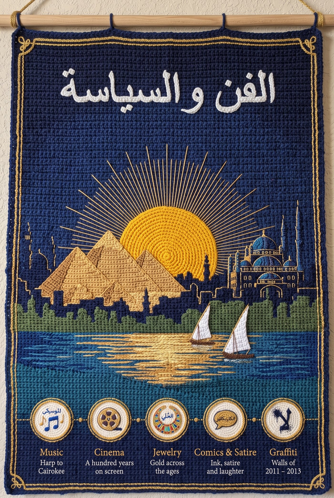

الوحدة ١: الموسيقا والغناء
Music and Song
من أغنية الاحتجاج إلى أغنية الفرح: ماذا تقول الأغنية عن المصريين وعن السلطة؟

كتاب تفاعلي لمتعلمي العربية لغةً أجنبية — المستوى المتقدم
Art and Politics — an interactive reader for advanced learners of Arabic
من الأغنية إلى الجدار، ومن الحلي إلى الشاشة: خمس وحدات عن مصر وفنونها وعلاقتها بالسلطة والمجتمع
إعداد وانتقاء: ياسر كاشف
Prepared and curated by Yasser Kashef
مواد المقرر المجمّعة — ربيع 2026 · Collected Spring 2026
ابدأ التصفح دليل الاستخدام مدخل المقرر: ألبوم مصر
© 2026 Yasser Kashef. All rights reserved. Design carried out by AI.
اضغط على أي عنوان للانتقال إليه. العلامة ✓ تظهر بعد أن تضع علامة «أنهيتُ» في المادة.
Music and Song
من أغنية الاحتجاج إلى أغنية الفرح: ماذا تقول الأغنية عن المصريين وعن السلطة؟
Comics and Graphic Narratives
ريشة ضد السلطة: من «أبو نظارة» إلى «توك توك» ومن «بهجاتيا» إلى مجلات الشباب
كيف يعمل هذا الكتاب، وما الذي جاء من مواد المقرر وما الذي أُضيف إليه.
خمس وحدات بهذا الترتيب: الموسيقا والغناء، الجرافيتي، الحُلي، القصص المصورة والكوميكس، السينما. تتبع كل وحدة، حيثما توافرت المواد، ترتيب: قراءة ١، استماع ١، قراءة ٢، استماع ٢. وفي بعض الوحدات مواد أقل أو أكثر من هذا النمط لأن المواد المرفقة لا تتبعه (انظر مقدمة كل وحدة وصفحة المصادر).
قبل كل مادة تجد: تفكيرًا وتوقعًا، ثم مفردات في خمس فئات، ثم المادة، ثم أسئلة مفتوحة ونقاشًا مقارنًا وملاحظات لغوية.
من مواد المقرر يعني أن المحتوى جاء من مواد المقرر المرفقة كما هو: نصوص القراءة، والنصوص المكتوبة للفيديوهات، وقوائم المفردات والأفعال والتراكيب، والمعجم الموضوعي، وصفحتا «ألبوم مصر» و«أدوات الربط».
إضافة تعليمية يعني أن معدّ الكتاب كتبه لأغراض تعليمية: مقدمات الوحدات والأهداف والأسئلة والنقاشات والملاحظات وخرائط الكفاءة والمهام الختامية، والمعاني الإنجليزية للأفعال، والروابط الإضافية وتمارينها. لا تُقدَّم هذه الإضافات بوصفها جزءًا من المصادر.
قبل الدخول في الوحدات، تعرّف إلى ثماني عشرة شخصية وفكرة مصرية في بطاقات ثنائية اللغة. من مواد المقرر
افتح الألبوم في صفحة مستقلة الصفحة منقولة من الملف المرفق دون تعديل.
اختر ثلاث بطاقات من الألبوم تمثّل مجالات فنية أو ثقافية مختلفة. ما الذي تعرّفه كل بطاقة عن صاحبها أو موضوعها؟
أي بطاقة تتوقع أن ترتبط بموضوع «الفن والسياسة»؟ ولماذا؟ دوّن توقعك ثم عد إليه في نهاية المقرر.
ما الصورة التي كانت لديك عن مصر قبل هذا المقرر؟ وما الذي في الألبوم يؤكدها أو يعدّلها؟ تذكّر أن أي مجتمع متنوع من الداخل.
الوحدة ١ من ٥
Music and Song
من أغنية الاحتجاج إلى أغنية الفرح: ماذا تقول الأغنية عن المصريين وعن السلطة؟
لم تكن الأغنية في مصر ترفيهًا خالصًا. فمنذ السبعينيات حمل الشيخ إمام وأحمد فؤاد نجم أغنية الاحتجاج إلى الشارع وإلى السجن معًا، وفي عام 2011 صارت «صوت الحرية» لفرقة كايروكي وأغاني الألتراس سجلًّا حيًّا لما جرى في الميدان. وهكذا تحوّلت الأغنية إلى وسيلة حشد ووثيقة تاريخية في آنٍ واحد.
وفي الوقت نفسه تطرح الوحدة سؤالًا آخر عن علاقة المصريين بالأغنية: لماذا تتحول الأغاني الحزينة والوطنية إلى أغانٍ للرقص في الأفراح؟ وبين الاحتجاج والرقص تتعلم أن الفن لا يؤدي وظيفة سياسية واحدة، وأن معنى الأغنية يتغير بتغير من يغنيها ومن يسمعها ومتى.
I can understand the main message and supporting details on a wide variety of familiar and general interest topics across various time frames from complex, organized texts that are spoken, written, or signed.
Advanced Low: I can identify the underlying message and some supporting details across major time frames in descriptive informational texts.
Advanced Mid: I can understand the underlying message and most supporting details across major time frames in descriptive informational texts.
Advanced High: I can follow the flow of ideas and infer meaning from complex language on unfamiliar, abstract topics within informational texts.
I can understand the main message and supporting details on a wide variety of familiar and general interest topics across various time frames from complex, organized texts that are spoken, written, or signed.
Advanced Low: I can understand the main message and some supporting details across major time frames in conversations and discussions.
Advanced Mid: I can understand the main message and most supporting details across major time frames in conversations and discussions.
Advanced High: I can follow the flow of ideas and some nuances from different viewpoints in conversations and discussions.
I can maintain spontaneous spoken, written, or signed conversations and discussions across various time frames on familiar, as well as unfamiliar, concrete topics, using series of connected sentences and probing questions.
Advanced Low: I can maintain conversations by providing explanations and comparisons of preferences, opinions, and advice on familiar and concrete academic and social topics using a few simple paragraphs across major time frames.
Advanced Mid: I can maintain extended conversations by supporting, reacting to, and comparing preferences and opinions and expressing advice and emotions in detail across major time frames, and by asking probing questions.
Advanced High: I can discuss, support, and sometimes debate opinions and advice on a variety of complex concrete topics, often addressing hypothetical or abstract issues, and asking precise questions.
I can deliver detailed and organized presentations on familiar as well as unfamiliar concrete topics, in paragraphs and using various time frames through spoken, written, or signed language.
Advanced Low: I can state a viewpoint with supporting evidence on some concrete academic, social and professional topics of interest using paragraphs across major time frames.
Advanced Mid: I can present an argument with supporting evidence, based on a variety of concrete academic, social and professional topics of interest, using organized paragraphs across major time frames.
Advanced High: I can clearly and accurately present an argument with supporting evidence on complex concrete issues, and often deal with related issues hypothetically.
In my own and other cultures I can explain some diversity among products and practices and how it relates to perspectives.
Advanced: In my own and other cultures I can explain how a variety of products of public and personal interest are related to perspectives.
In my own and other cultures I can explain some diversity among products and practices and how it relates to perspectives.
Advanced: In my own and other cultures I can explain how a variety of practices within familiar and social situations are related to perspectives.
النصوص الإنجليزية مقتبسة حرفيًا من ACTFL/NCSSFL Can-Do Statements (2024) — ملفا المستوى المتقدم والمتوسط المرفقان بالمقرر.
تدرّبك هذه الوحدة على قراءة نصوص صحفية فصيحة طويلة ومتابعة مادة مسموعة مرئية متعددة المستويات اللغوية، ثم على توظيف أدوات الربط في عرض رأي مدعوم بالأدلة؛ وهذه كلها مهارات تدعم التقدم نحو مستوى «المتقدّم» في القراءة والاستماع والتفاعل والعرض.
لا يعني إنجازُ نشاطٍ هنا أنك «بلغتَ» مستوى معينًا؛ فالتقييم الرسمي للكفاءة يتطلب أداءً موثقًا ومقارنة بمعايير ACTFL. استعمل الجدول أداةَ تأمل ذاتي فقط.
إضافة تعليمية لكل نشاط عبارة «أستطيع أن» ذات صلة ومصدرها وما يمكنك فعله والمهارة ومهمة تأمل. اختر تقديرك الذاتي؛ يُحفظ في متصفحك فقط. هذا تأمل ذاتي وليس اختبارًا ولا شهادة بمستوى.
| النشاط (المصدر) | «أستطيع أن» ذات الصلة | المهارة | ما يمكنني فعله | سؤال التأمل | تقديري الذاتي |
|---|---|---|---|---|---|
| القراءة الأولى: «صوت الغضب…» | A-INT-INFO I can identify the underlying message and some supporting details across major time frames in descriptive informational texts. | قراءة | أفهم الرسالة الأساسية والتفاصيل الداعمة في مقال إعلامي عن تاريخ أغاني الثورة، وأتتبّع الأمثلة المرتبة زمنيًا. | هل أستطيع تلخيص المقال في ثلاث جمل مع ذكر مثالين؟ | |
| الاستماع الأول: «الوتر الحساس…» | A-INT-INFO I can identify the underlying message and some supporting details across major time frames in descriptive informational texts. | استماع/مشاهدة | أتابع تقريرًا مرئيًا يعرض أحداثًا في أزمنة مختلفة، وأميّز بين تعليق المعلّق وكلمات الأغاني. | هل أستطيع ترتيب أحداث السجن الثلاثة زمنيًا؟ | |
| القراءة الثانية: «لماذا يرقص المصريون…» | A-INT-INFO I can identify the underlying message and some supporting details across major time frames in descriptive informational texts. | قراءة | أفهم تفسيرات متعددة لظاهرة اجتماعية يقدّمها خبراء مختلفون وأميّز بينها. | هل أستطيع نسبة كل تفسير إلى صاحبه؟ | |
| الاستماع الثاني: لقاء كايروكي | A-INT-CONV I can understand the main message and some supporting details across major time frames in conversations and discussions. | استماع/مشاهدة | أفهم الفكرة الرئيسة وبعض التفاصيل في لقاء تلفزيوني مع فرقة موسيقية، وأميّز ما يقوله الأعضاء عن مسيرتهم وجمهورهم. | هل أستطيع تلخيص ما قاله الأعضاء عن الاستقلالية والجمهور في جملتين؟ | |
| أسئلة النقاش المقارن | A-IPR-OPIN I can maintain conversations by providing explanations and comparisons of preferences, opinions, and advice on familiar and concrete academic and social topics using a few simple paragraphs across major time frames. | تفاعل شفهي/كتابي | أدعم رأيي وأقارنه برأي زميلي وأطرح أسئلة استقصائية عن دور الأغنية في المجتمع. | هل طرحتُ سؤالًا استقصائيًا واحدًا على الأقل؟ | |
| النقاش المقارن: منتَج وممارسة | A-ICC-PROD In my own and other cultures I can explain how a variety of products of public and personal interest are related to perspectives. | ثقافة | أشرح كيف ترتبط الأغنية (منتَج) وطريقة التلقي في الأفراح والميادين (ممارسة) بوجهات نظر المجتمع. | هل أعطيتُ مثالًا من مجتمعي دون تعميم؟ | |
| المهمة الختامية | A-PRE-OPIN I can state a viewpoint with supporting evidence on some concrete academic, social and professional topics of interest using paragraphs across major time frames. | عرض/كتابة | أعرض حجة مدعومة بأدلة في فقرات منظمة عن دور الأغنية في الاحتجاج أو الاحتفال. | هل استعملتُ ثلاث أدوات ربط على الأقل بدقة؟ |
اكتب مقالًا من 350–450 كلمة (أو سجّل عرضًا شفهيًا من 3–4 دقائق) تجيب فيه عن السؤال: «هل تصنع الأغنية الاحتجاج أم تسجّله؟». استعن بمثالين على الأقل من المواد الأربع (القراءتين والفيديوهين)، وقارن بمثال من مجتمعك أو من مجتمع عربي آخر.
| التعبير | English | مثال |
|---|---|---|
| أرى أن الأغنية ... أكثر مما ... | I see the song as ... more than ... | أرى أن الأغنية تسجّل الاحتجاج أكثر مما تصنعه. |
| يدلّ ذلك على أنّ | this indicates that | يدلّ ذلك على أنّ الجمهور يعيد تأويل الأغنية. |
| في مقابل ذلك | in contrast | في مقابل ذلك رقص الناس على أغانٍ حزينة. |
| لا يمكن إنكار أنّ... غير أنّ | it cannot be denied that… however | لا يمكن إنكار قوة الأغنية غير أنّ أثرها محدود. |
| يتفق ... مع ... في أنّ | … agrees with … that | يتفق الكاتب مع الخبير في أنّ المصريين يقاومون الحزن بالسخرية. |
| على الرغم من أنّ ... إلا أنّ | although … nevertheless | على الرغم من أنّ الأغنية حزينة إلا أنّ الناس يرقصون عليها. |
| بناءً على ما سبق يمكن القول | based on the above, one can say | بناءً على ما سبق يمكن القول إنّ للأغنية وظائف متعددة. |
| من وجهة نظري / في رأيي | in my view | في رأيي، يحتاج هذا الاستنتاج إلى أدلة أكثر. |
الموسيقا والغناء · قراءة ١
مقال صحفي يتتبّع «أغاني الثورة المصرية» من الشيخ إمام وأحمد فؤاد نجم في السبعينيات إلى كايروكي وفرق الأندرجراوند وأغاني الألتراس بعد 2011. إضافة تعليمية
أهداف «أستطيع أن»: A-INT-INFO A-IPR-OPIN A-ICC-PROD
من مواد المقرر القوائم أدناه كما وردت في مواد المقرر. مستوى اللغة: المفردات والتراكيب مكتوبة بالفصحى (MSA)؛ ومستوى المادة نفسها: فصحى (نص مكتوب). المعاني الإنجليزية للأفعال إضافة تعليمية وسِمتها إضافة تعليمية.
| المصدر | المضارع | الماضي | English إضافة تعليمية |
|---|---|---|---|
| احْتِجَاج | يَحْتَجُّ | احْتَجَّ | to protest |
| انْصِرَاف | يَنْصَرِفُ | انْصَرَفَ | to turn away; to leave |
| خَذْل / خَذَلاَن | يَخْذُلُ | خَذَلَ | to let down |
| تَشَكُّل | يَتَشَكَّلُ | تَشَكَّلَ | to take shape; to be formed |
| فَرْض | يَفْرِضُ | فَرَضَ | to impose |
| اعْتِبَار | يَعْتَبِرُ | اعْتَبَرَ | to consider; to regard |
| انْتِزَاع | يَنْتَزِعُ | انْتَزَعَ | to snatch; to wrest |
| حَشْد | يَحْشِدُ | حَشَدَ | to mobilize; to gather |
| تَرْدِيد | يُرَدِّدُ | رَدَّدَ | to repeat; to chant |
| اسْتِرْجَاع | يَسْتَرْجِعُ | اسْتَرْجَعَ | to recall; to retrieve |
المصدر والمضارع والماضي كما وردت في المقرر؛ ولم تُراجع كل التشكيلات مراجعة لغوية كاملة.
تسميها مواد المقرر «تراكيب لفظية»؛ وهي تضم تعبيرات شائعة ومتلازمات لفظية، ولا يُعدّ كلها تعبيرًا اصطلاحيًا بالمعنى الضيق.
إضافة تعليمية تعبيرات الرأي والتحليل والمقارنة — الأغنية والاحتجاج
| التعبير | English | مثال (إضافة تعليمية) |
|---|---|---|
| أرى أن الأغنية ... أكثر مما ... | I see the song as ... more than ... | أرى أن الأغنية تسجّل الاحتجاج أكثر مما تصنعه. |
| يدلّ ذلك على أنّ | this indicates that | يدلّ ذلك على أنّ الجمهور يعيد تأويل الأغنية. |
| في مقابل ذلك | in contrast | في مقابل ذلك رقص الناس على أغانٍ حزينة. |
| لا يمكن إنكار أنّ... غير أنّ | it cannot be denied that… however | لا يمكن إنكار قوة الأغنية غير أنّ أثرها محدود. |
| يتفق ... مع ... في أنّ | … agrees with … that | يتفق الكاتب مع الخبير في أنّ المصريين يقاومون الحزن بالسخرية. |
| على الرغم من أنّ ... إلا أنّ | although … nevertheless | على الرغم من أنّ الأغنية حزينة إلا أنّ الناس يرقصون عليها. |
| بناءً على ما سبق يمكن القول | based on the above, one can say | بناءً على ما سبق يمكن القول إنّ للأغنية وظائف متعددة. |
| من وجهة نظري / في رأيي | in my view | في رأيي، يحتاج هذا الاستنتاج إلى أدلة أكثر. |
من مواد المقرر النص كما ورد في المقرر، مقسّمًا إلى فقرات مرقّمة. التظليل الأصفر آلي (أول ورود لمفردة من قائمة هذه المادة)؛ اضغط على الكلمة لرؤية معناها. ظُلّلت 11 من 12 مفردة
1الثورة ليست احتجاجات سياسية واجتماعية فقط، بل هي تغير فني أيضا، يترك أثره في ذوق الجماهير، هذا أمر عاصرناه بشكل واضح للغاية في مصر؛ فمع اندلاع الاحتجاجات في ميادين مصر المختلفة ضد الرئيس المصري المعزول محمد حسني مبارك عام 2011، شاهدنا كيف لعب الفن دورا في حشد الجماهير، ثم تابعنا كيف انصرفت الجماهير عن نجوم خذلوهم وقت الثورة، وحملوا نجوما جددا على الأعناق.
2استمر هذا الأثر الفني في التشكل والتغير بعد ذلك، بداية من رحيل مبارك، مروراً بفترة حكم المجلس العسكري، ثم جماعة الإخوان المسلمين، وأخيراً في فترة حكم عبد الفتاح السيسي، الذي فرض ودون شك الحصار الأبرز على حرية التعبير والرأي في مصر عقب ثورة يناير.
3رحلة طويلة إذن مرت بها أغاني الثورة المصرية، وهي بدأت ربما منذ السبعينيات، وبالتحديد في عصر أحمد فؤاد نجم والشيخ إمام، حتى ظهر صوت فرق "الأندرجراوند" في التحرير، مروراً بأغاني شباب الألتراس، وصولاً لعصر المقاومة عبر "الكوميكس" والمهرجانات الشعبية.
4لم يجد المصريون خلال الأسابيع الماضية أثناء احتجاجهم على بذخ السلطات المصرية في بناء قصور رئاسية وأبنية ضخمة سوى أغنية أحمد فؤاد نجم والشيخ إمام، التي عنوانها "شيّد قصورك"، هذه الأغنية التي تم تأليفها في السبعينيات للاعتراض على سياسات نظام السادات، وما تزال قادرة على التعبير عن غضب فقراء المصريين، بالإضافة إلى الطبقة الوسطى المتآكلة، على صرف أموال المصريين فيما لا يهم، وهو هنا بالتحديد مجد شخصي لحاكم لا يلقى بالا لمعاناة المصريين للحصول على أبسط حقوقهم في التعليم والصحة والسكن الآمن.
5أغاني الشيخ إمام وأشعار أحمد فؤاد نجم ظلت حاضرة بشكل خاص حتى داخل مظاهرات يناير، وأبرزها بالطبع أغنية "يا مصر قومي وشدي الحيل"، ليحضر ثوار السبعينيات بكلماتهم وهتافاتهم جنبا إلى جنب مع شباب يناير الثائر.
6بجانب أغاني إمام الاحتجاجية، وإذا رصدنا الأغاني القديمة التي استمع لها المصريون خلال هذه الفترة؛ فلن نجد غير أغنية وطنية واحدة، هي أغنية الفنانة شادية "يا حبيبتي يا مصر"، التي يمكن اعتبارها أحد الأغاني الوطنية النادرة التي وصفت مصر وأرضها وشعبها دون نفاق أو رياء لحاكم أو جهاز أمني.
7ربما لعبت أغنية "إزاي" للمطرب المصري محمد منير دوراً مهما في الأيام الأولى لمظاهرات يناير 2011، لكن نقطة التحول الأهم -وبلا شك- جاءت من خلال أغنية "صوت الحرية" التي كتبها أمير عيد، وغناها برفقته هاني عادل، لتعلن عن هزيمة مبارك وهزيمة "جيل العواجيز" معه، ومعها أصبح فريق "كايروكي" صوت الثورة المصرية.
8المميز في صوت الحرية أنك تشعر بمجرد مشاهدتك لها أن كل من في الميدان يغني، وكأن الحرية التي انتزعها المصريون في يناير منحت لهم من جديد صوتاً بعد أن تم فرض صمت تام عليهم لثلاثة عقود.
9استمر عقب ذلك تعبير "كايروكي" عن صوت الثورة المصرية طوال فترة حكم المجلس العسكري، بين أغان احتفائية بقوة الميدان والثورة، نذكر منها أغنية "يا الميدان"، وأغان تعبر عن غضب الثوار من القائمين على إدارة المرحلة الانتقالية، أبرزها أغنيتا "اثبت مكانك" و"احنا الشعب".
10المميز في تلك الفترة أيضا أن "كايروكي" لم يكونوا وحيدين في تعبيرهم عن صوت الثورة، فقد كان برفقتهم كثيرون من الذين خرجوا من رحم الميدان، منهم على سبيل المثال مغني الراب "زاب ثروت"، بالإضافة إلى بعض الإعلاميين المصريين، أمثال "باسم يوسف" و"يسري فودة" و"بلال فضل". هكذا كانت أغنية "كايروكي" حدثاً خاصاً قادراً على حشد الملايين في التحرير قبيل كل جمعة.
11إذا كان "كايروكي" وفرق "الأندرجرواند" عبروا عن صوت الثورة المصرية عبر التلفزيون وفي الحفلات، فإن الألتراس عبروا عن هذا الصوت بحناجرهم في المظاهرات.
12أغاني الألتراس تقدم وجهة نظر مغايرة تماما عما اعتاده المصريون من تقديس وتبجيل للحكام، هؤلاء مجموعة من الشباب لم يترددوا لحظة في نقد السلطة، بل وسبها في بعض الأحيان، دفاعاً عن حلم الثورة، وغيرة على دماء الشهداء.
13أبرز هذه الأغاني كانت -وبلا شك- أغنية "ألتراس وايت نايتس" بعنوان "شمس الحرية"، التي يعلم كل من شارك في مظاهرة مصرية عقب يناير/كانون الثاني 2011 أن هذه الأغنية كانت المحفز عادةً لأكثر أوقات الاحتجاج حماسة.
14لا ننسى أيضا أغنية "ألتراس أهلاوي" التي سردوا فيها حكاية الغدر التي أودت بحياة 72 مشجعا أهلاويا في ملعب بورسعيد، والتي حملت اسم "حكايتنا"، والتي تعتبر الهجوم الأعنف والأكثر وضوحاً على حكم المجلس العسكري لمصر.
15كل هذه الأغاني تبدو تأريخا لعصر ثار فيه المصريون ضد الفساد والاستبداد، عصر يمكن استرجاع ذكرياته وأجوائه بسهولة بمجرد الاستماع مرة أخرى لهذه الأغاني.
المصدر: الجزيرة
إضافة تعليمية أسئلة بالعربية يمكن الإجابة عنها من المادة نفسها؛ أجب بجمل كاملة وبأسلوبك، واستعن بأزرار «ابحث في» للعودة إلى موضع الدليل. تُحفظ إجاباتك في متصفحك فقط، ويمكنك تنزيلها.
في الفقرة الأولى يقول الكاتب إن الثورة «تغير فني أيضًا». اشرح هذه الفكرة بأسلوبك، ثم بيّن كيف تدعمها الأمثلة التي تأتي في بقية المقال.
ابحث في:
لماذا يرى الكاتب أن أغنية «شيّد قصورك» ما زالت قادرة على التعبير عن غضب المصريين بعد عقود من كتابتها؟ ما عناصر السياق التي ذكرها لتبرير ذلك؟
ابحث في:
يصف الكاتب أغنية شادية «يا حبيبتي يا مصر» بأنها من الأغاني الوطنية «النادرة» التي وصفت مصر «دون نفاق أو رياء لحاكم أو جهاز أمني». ماذا نستنتج من هذا الوصف عن صورة الأغنية الوطنية السائدة في رأي الكاتب؟ وهل تتفق معه؟
ابحث في:
حلّل ما توحي به هذه التعبيرات وموقف الكاتب منها: «جيل العواجيز»، «منحت لهم من جديد صوتًا»، «صمت تام لثلاثة عقود». كيف ترسم هذه التعبيرات صورة لمصر قبل يناير 2011 وبعده؟
ابحث في:
قارن بين طريقتي التعبير عن «صوت الثورة»: كايروكي وفرق الأندرجراوند من جهة، والألتراس من جهة أخرى (الوسيلة، الجمهور، الموقف من السلطة). ما الذي يميّز لغة الألتراس في نقد الحكام بحسب الكاتب؟
ابحث في:
ينتهي المقال بأن الأغاني «تأريخ لعصر». هل يقدّم الكاتب الأغنية بوصفها وثيقة تاريخية أم أداة تأثير سياسي؟ ما الألفاظ التي تكشف موقفه؟ وكيف تفصل بين وصفه للأحداث وتقييمك أنت؟
ابحث في:
لا تطلب الأسئلة مقابلة «الشرق» بـ«الغرب»؛ ابحث عن التنوع داخل كل مجتمع، وادعم رأيك بمثال محدد.
يذكر المقال أن أغاني السبعينيات «حضرت» في مظاهرات 2011 إلى جانب الأغاني الجديدة. اختر أغنية احتجاجية أو حركة موسيقية من بلدك أو من بلد عربي آخر، وقارنها بإحدى الأغاني المذكورة: في أي ظرف ظهرت؟ من حملها؟ وكيف استقبلتها السلطة والجمهور؟ تجنّب التعميم وادعم رأيك بمثال محدد.
مصر وبلد عربي آخرمجتمعك
من يملك الحق في تحديد معنى الأغنية «الوطنية»: الدولة، أم الفنانون، أم الجمهور؟ ناقش ذلك في ضوء ما ورد في المقال عن «يا حبيبتي يا مصر»، ثم قارن بما تعرفه عن الأغاني الوطنية والأناشيد في مجتمعك، مع مراعاة أن المجتمع الواحد قد يختلف أفراده في هذا الأمر.
مصرمجتمعكالاختلاف داخل المجتمع الواحد
الموسيقا والغناء · استماع ١
فيديو من سلسلة «الوتر الحساس» (AJ+ كبريت) يروي قصة الثنائي الشيخ إمام وأحمد فؤاد نجم: أغانيهما، وعلاقتهما بالسلطة، والسجن، وانتشار أغانيهما عبر الأجيال. إضافة تعليمية
أهداف «أستطيع أن»: A-INT-INFO A-IPR-EXCH A-ICC-PRAC
من مواد المقرر القوائم أدناه كما وردت في مواد المقرر. مستوى اللغة: المفردات والتراكيب مكتوبة بالفصحى (MSA)؛ ومستوى المادة نفسها: فصحى مبسّطة ولهجة شامية في التعليق، وعامية مصرية في الأغاني. المعاني الإنجليزية للأفعال إضافة تعليمية وسِمتها إضافة تعليمية.
تنبيه: لا تبدو «قِطْبَان» صيغة معيارية لجمع «قضيب»؛ المعتاد «قُضْبَان». وهي مقدَّمة هنا كما وردت في المقرر. — الصيغة المقترحة: قُضْبَان
| المصدر | المضارع | الماضي | English إضافة تعليمية |
|---|---|---|---|
| قَصْف | يَقْصِفُ | قَصَفَ | to bombard; to attack (fig.) |
| قَهْر | يَقْهَرُ | قَهَرَ | to oppress; to overcome |
| اسْتِقَالَة | يَسْتَقِيلُ | اسْتَقَالَ | to resign |
| اسْتِقْبَال | يَسْتَقْبِلُ | اسْتَقْبَلَ | to receive; to welcome |
| انْتِشَار | يَنْتَشِرُ | انْتَشَرَ | to spread |
| حَبْس | يَحْبِسُ | حَبَسَ | to imprison |
| انْسِجَان | يَنْسَجِنُ | انْسَجَنَ | to be imprisoned |
| هَزْم / هَزِيمَة | يَهْزِمُ | هَزَمَ | to defeat |
| إِقْنَاع | يُقْنِعُ | أَقْنَعَ | to convince |
| تَهْرِيب | يُهَرِّبُ | هَرَّبَ | to flee; to escape |
المصدر والمضارع والماضي كما وردت في المقرر؛ ولم تُراجع كل التشكيلات مراجعة لغوية كاملة.
تسميها مواد المقرر «تراكيب لفظية»؛ وهي تضم تعبيرات شائعة ومتلازمات لفظية، ولا يُعدّ كلها تعبيرًا اصطلاحيًا بالمعنى الضيق.
إضافة تعليمية تعبيرات الرأي والتحليل والمقارنة — الأغنية والاحتجاج
| التعبير | English | مثال (إضافة تعليمية) |
|---|---|---|
| أرى أن الأغنية ... أكثر مما ... | I see the song as ... more than ... | أرى أن الأغنية تسجّل الاحتجاج أكثر مما تصنعه. |
| يدلّ ذلك على أنّ | this indicates that | يدلّ ذلك على أنّ الجمهور يعيد تأويل الأغنية. |
| في مقابل ذلك | in contrast | في مقابل ذلك رقص الناس على أغانٍ حزينة. |
| لا يمكن إنكار أنّ... غير أنّ | it cannot be denied that… however | لا يمكن إنكار قوة الأغنية غير أنّ أثرها محدود. |
| يتفق ... مع ... في أنّ | … agrees with … that | يتفق الكاتب مع الخبير في أنّ المصريين يقاومون الحزن بالسخرية. |
| على الرغم من أنّ ... إلا أنّ | although … nevertheless | على الرغم من أنّ الأغنية حزينة إلا أنّ الناس يرقصون عليها. |
| بناءً على ما سبق يمكن القول | based on the above, one can say | بناءً على ما سبق يمكن القول إنّ للأغنية وظائف متعددة. |
| من وجهة نظري / في رأيي | in my view | في رأيي، يحتاج هذا الاستنتاج إلى أدلة أكثر. |
افتح الفيديو على يوتيوب (صفحة جديدة)
استمع أكثر من مرة: أولًا للفكرة العامة، ثم لتفاصيل محددة؛ ودوّن ما تفهمه قبل الإجابة عن الأسئلة.
إضافة تعليمية أسئلة بالعربية يمكن الإجابة عنها من المادة نفسها؛ أجب بجمل كاملة وبأسلوبك، واستعن بأزرار «ابحث في» للعودة إلى موضع الدليل. تُحفظ إجاباتك في متصفحك فقط، ويمكنك تنزيلها.
يبدأ الفيديو بمقطع من أغنية «شرفت يا نيكسون بابا». لماذا اختار صنّاع الفيديو هذه الأغنية مدخلًا؟ وما السياق السياسي الذي يشرحه المعلّق لزيارة نيكسون عام 1974؟
ابحث في:
اشرح باختصار لماذا سُجن الشيخ إمام ونجم بعد عام 1967، وكيف ردّ عبد الناصر، وما العرض الذي قُدّم إليهما، وما موقفهما منه؟
ابحث في:
ما العلاقة التي يرسمها الفيديو بين الفنانين المقرّبين من النظام (مثل عبد الحليم حافظ) وبين إمام ونجم؟ وماذا يعني التعبير «ارتدى عباءة النظام»؟
ابحث في:
يقارن المعلّق أغاني الثنائي بأغاني «الديس تراك» في الراب اليوم. ما أوجه الشبه التي يذكرها؟ وهل تراها مقنعة؟ وما حدود هذه المقارنة في رأيك؟
ابحث في:
كيف تغيّر موقف الثنائي من ناصر ثم السادات ثم مبارك بحسب الفيديو؟ وهل يرى الفيديو أن موقفهما يتحكم فيه شخص الحاكم أم مبدأ آخر؟ دعّم إجابتك بعبارة من النص.
ابحث في:
يقول الفيديو إن أغانيهما «صالحة للعقود» وإنها رُدّدت في ميادين تونس ومصر وسوريا ولبنان. ما العناصر في لغتها وموضوعها التي تفسّر هذا الانتشار؟ وهل يقدّم الفيديو دليلًا كافيًا؟
ابحث في:
لا تطلب الأسئلة مقابلة «الشرق» بـ«الغرب»؛ ابحث عن التنوع داخل كل مجتمع، وادعم رأيك بمثال محدد.
يقول الفيديو إن أغاني إمام ونجم «لمست وجدان الشعوب العربية» رغم اختلاف بلدانها. ما الذي يجعل أغنية محلية مفهومة خارج بلدها؟ قارن بين أغنية عابرة للحدود في العالم العربي وأغنية من بلدك انتشرت خارج حدودها، وانتبه إلى الفروق بين المجتمعات العربية أنفسها.
مصر وبلدان عربية أخرىمجتمعك
سُجن الفنانان مرارًا بحسب الفيديو. كيف تتعامل الدولة في بلدك مع الفنان الذي ينتقد الحاكم؟ اذكر مثالًا تاريخيًا أو معاصرًا واحدًا على الأقل، وبيّن كيف يختلف الوضع داخل البلد الواحد بين مرحلة وأخرى أو بين فنان وآخر.
مصرمجتمعكتغيّر الظروف عبر الزمن
الموسيقا والغناء · قراءة ٢
مقال من «رصيف22» يسأل: لماذا يرقص المصريون على الأغاني الحزينة والوطنية؟ ويعرض تفسيرات علم الاجتماع والنقد الفني والموسيقى. إضافة تعليمية
أهداف «أستطيع أن»: A-INT-INFO A-IPR-OPIN A-ICC-PRAC
من مواد المقرر القوائم أدناه كما وردت في مواد المقرر. مستوى اللغة: المفردات والتراكيب مكتوبة بالفصحى (MSA)؛ ومستوى المادة نفسها: فصحى (نص مكتوب). المعاني الإنجليزية للأفعال إضافة تعليمية وسِمتها إضافة تعليمية.
| المصدر | المضارع | الماضي | English إضافة تعليمية |
|---|---|---|---|
| تَغَاضٍ | يَتَغَاضَى | تَغَاضَى | to overlook; to turn a blind eye |
| تَجَاهُل | يَتَجَاهَلُ | تَجَاهَلَ | to ignore |
| تَحَسُّر | يَتَحَسَّرُ | تَحَسَّرَ | to regret; to lament |
| تَحَايُل | يَتَحَايَلُ | تَحَايَلَ | to circumvent; to trick |
| انْدِمَاج | يَنْدَمِجُ | انْدَمَجَ | to blend in; to merge |
| تَرْسِيخ | يُرَسِّخُ | رَسَّخَ | to become established; to take root |
| اسْتِعَارَة | يَسْتَعِيرُ | اسْتَعَارَ | to borrow |
| إِعَادَة | يُعِيدُ | أَعَادَ | to return; to repeat |
| تَعْظِيم | يُعَظِّمُ | عَظَّمَ | to magnify; to glorify |
| انْتِشَار | يَنْتَشِرُ | انْتَشَرَ | to spread |
المصدر والمضارع والماضي كما وردت في المقرر؛ ولم تُراجع كل التشكيلات مراجعة لغوية كاملة.
تسميها مواد المقرر «تراكيب لفظية»؛ وهي تضم تعبيرات شائعة ومتلازمات لفظية، ولا يُعدّ كلها تعبيرًا اصطلاحيًا بالمعنى الضيق.
تنبيه: «عَلَى غِرَارِ» معناها «على نمط / على غرار»، وليس «اعتيادًا»؛ والمعنى الإنجليزي المقدَّم غير دقيق.
إضافة تعليمية تعبيرات الرأي والتحليل والمقارنة — الأغنية والاحتجاج
| التعبير | English | مثال (إضافة تعليمية) |
|---|---|---|
| أرى أن الأغنية ... أكثر مما ... | I see the song as ... more than ... | أرى أن الأغنية تسجّل الاحتجاج أكثر مما تصنعه. |
| يدلّ ذلك على أنّ | this indicates that | يدلّ ذلك على أنّ الجمهور يعيد تأويل الأغنية. |
| في مقابل ذلك | in contrast | في مقابل ذلك رقص الناس على أغانٍ حزينة. |
| لا يمكن إنكار أنّ... غير أنّ | it cannot be denied that… however | لا يمكن إنكار قوة الأغنية غير أنّ أثرها محدود. |
| يتفق ... مع ... في أنّ | … agrees with … that | يتفق الكاتب مع الخبير في أنّ المصريين يقاومون الحزن بالسخرية. |
| على الرغم من أنّ ... إلا أنّ | although … nevertheless | على الرغم من أنّ الأغنية حزينة إلا أنّ الناس يرقصون عليها. |
| بناءً على ما سبق يمكن القول | based on the above, one can say | بناءً على ما سبق يمكن القول إنّ للأغنية وظائف متعددة. |
| من وجهة نظري / في رأيي | in my view | في رأيي، يحتاج هذا الاستنتاج إلى أدلة أكثر. |
من مواد المقرر النص كما ورد في المقرر، مقسّمًا إلى فقرات مرقّمة. التظليل الأصفر آلي (أول ورود لمفردة من قائمة هذه المادة)؛ اضغط على الكلمة لرؤية معناها. ظُلّلت 8 من 10 مفردة
1هل يمكن أن نتغاضى عن حزن الناي وألم الكمنجة، ونتجاهل الكلمات الحزينة لنرسم على وجوهنا بسمة ونبدأ الرقص بكل فرح، أو نسمع أغنية يتألم فيها المطرب من حاله أو من حال وطنه، ومع ذلك هي بالنسبة لنا صالحة للرقص؟ كيف يمكن صنع تلك «التوليفة» إذا كان الرقص إحساساً بالكلمة واللحن؟ لكن هذا الممكن بات حقيقة عند المصريين، وتلك التوليفة باتت موجودة، فكل الأغاني للرقص وكل الكلمات للفرح.
2في عام 2010 كتب الشاعر جمال بخيت قصيدته الحزينة «مش باقي مني» التي تحسر فيها على أحوال المواطن المصري في نهاية عصر مبارك، وغناها المطرب أحمد سعد في فيلم «دكان شحاته». يقول مقطع منها «مش باقي مني غير شوية لحم في كتافي، بلاش يتبعتروا في البحر، بلاش يتحرقوا في قطر الصعيد في العيد، بلاش لكلب الصيد تناوليهم». ورغم الأسى والحزن، تحولت إلى أغنية للرقص في الأفراح الشعبية.
3المثير أن الفنان أحمد سعد نفسه هو من استخدم الأغنية في بعض الأفراح التي يقوم بإحيائها، فيما استعار مطربون آخرون منه التجربة وأدوا الأغنية التي تحولت من عمل فني يرصد معاناة المصريين إلى عمل فني يتم الرقص عليه.
4"نحن شعب ساخر، نحب الحياة ونتحايل عليها"، بذلك فسر خبير علم الاجتماع السياسي أحمد الباسوسي قدرة المصريين على تحويل أي أغنية لمادة للرقص، قائلًا إن هذا التصرف امتداد لأشياء أخرى كتحويل المصيبة السياسية إلى «نكتة» يضحك عليها الجميع، أو كما قال المتنبي "كم ذا مصر من المضحكات لكنه ضحك كالبكاء"، وكل هذا نوع من أنواع مقاومة الحزن والبلاء، وهو أسلوب فريد اختص به المصريون. ويوضح «الباسوسي» لرصيف22 "الطبيعة المصرية مرحة بطبعها، ونظرًا لتاريخ الأزمات الذي مرّ المصريون به على مدار عقود، اعتادوا تحويل كل ما هو مؤلم إلى مادة للابتسام، لافتًا إلى أن تلك الطريقة من أفضل الطرائق للتغلب على الحزن، ومقولة إننا شعب «ابن نكتة» لم تكن من فراغ، فنحن الذين حولنا الأزمة إلى نكتة وموقف سينمائي ضاحك وأغنية يتم الرقص عليها". ويضيف "الشعور هو الذي يتحكم في الإنسان، لذلك إذا اعتاد الشخص تقبل تلك الأغاني كأنها مادة للرقص فسيكون الأمر تلقائيًا، ويتم غالبًا بشكل جماعي كحفلات الزفاف التي يرقص فيها الجميع على أي أغنية، ويندمج الشخص مع الجماعة ولا يفكر كثيرًا في كلمات الأغنية".
5في تاريخ الأغنية المصرية، يعدّ الفنان الراحل حسن الأسمر واحدًا ممن عُرفوا بأداء الأغاني «الحزينة» المعتمدة على مواويل، وأشهر أغانيه «كتاب حياة يا عين» التي تعدّ تجسيدًا لإنسان لم يعثر على الفرح في حياته. يقول مقطع منها "كتاب حياتي يا عين ما شفت زيه كتاب، الفرح في سطرين والباقي كله عذاب، كتاب حزين كله مآسي، تأليف زمان غدار آسي، الفرح سطر غلط مكتوب لما الزمان كان يوم ناسي". تلك الملحمة الحزينة لم تمنع المصريين من تحويلها لأغنية للرقص في الملاهي الليلة حيث غناها حسن الأسمر، وباتت أيقونة في نهاية تسعينيات القرن الماضي.
6يقول الناقد الفني كمال رمزي لرصيف22 "السينما مسؤولة عن ترسيخ هذا الأمر في نفوس المواطنين، فمنذ بداية السبعينيات ظهرت أفلام «مقاولات» اعتمدت على «تيمة» ثابتة، إذ لا بد من وجود راقصة ومطرب شعبي فيها يغني مواويل وأغاني حزينة، وجسد ذلك النمط الفنان أحمد عدوية، الذي تبدأ معظم أغانيه بمواويل حزينة ورقصت عليها أشهر راقصات مصر. ويدلل «رمزي» على ذلك بأغنية «سألوني» لحسن الأسمر، التي ظهرت لأول مرة في فيلم «بوابة إبليس» ورقصت على أنغامها مديحة كامل، ثم راجت في كثير من الملاهي الليلية، وهذا ما ساعد في صناعة نجومية حسن الأسمر الذي عرف أنه «مغني أفراح» برغم أن معظم أغانيه حزينة.
7ولكن كيف يمكن أن تكون موسيقى الحزن هيد موسيقى فرح في الوقت نفسه؟ أجاب عن السؤال المايسترو رضا رجب لرصيف22، قال "إن معظم تلك الأغاني اعتمدت في تلحينها على ما يُطلق عليه فنيًا «آلات ذات إيقاع راقص» والمقصود بها «الناي - المزمار - العود - الطبلة». لذلك من السهل تحول تلك الأغاني إلى مادة للرقص لأنها بمهيأة لأن تكون كذلك، كما أن ألحانها يغلب عليها اللون الشعبي، وهذا ما يدفع الكثيرين إلى استخدامها في الأفراح". وأضاف "منذ سنوات، وقبل طغيان ما يعرف بالمهرجانات الشعبية، كانت تلك الأغاني صالحة للرقص من دون أي تغيير موسيقي، لأن ذلك ما اعتاده الناس، ولكن مع صعود جيل جديد اعتاد الرقص على أغاني المهرجانات، بات من الضرورة أن تخضع أي أغنية لتلك الموسيقى فيما يسمى «إعادة التوزيع»، أي بإضافة موسيقى مهرجانات إليها. لذلك تمت إعادة غناء بعض أغاني أم كلثوم وعبدالحليم حافظ لتكون مادة للرقص، وكذلك الحال مع الأغاني الوطنية، وأبرز دليل أغنية تسلم الأيادي التي تحولت إلى أغنية للرقص في الأفراح .
8الأمر نفسه تكرر أخيرًا مع أغنية «قالوا إيه علينا» التي رددها رجال الشهيد أحمد المنسي الذي استشهد في يوليو الماضي، ويقول مطلعها «المنسي اسمه الأسطورة من إسوان للمعمورة»، واستطاعت أن تحظى بشهرة واسعة دفعت وزارة الدفاع المصرية لإصدارها في نسخة رسمية تعظيمًا لدور الشهداء، لكن ذلك لم يستمر على هذا النهج إذ مع انتشار الاغنية باتت مادة تُقدم في الحفلات الغنائية كما حدث مع المطرب الشعبي «حكيم» الذي غناها في إحدى حفلاته الأخيرة.
المصدر: رصيف 22
إضافة تعليمية أسئلة بالعربية يمكن الإجابة عنها من المادة نفسها؛ أجب بجمل كاملة وبأسلوبك، واستعن بأزرار «ابحث في» للعودة إلى موضع الدليل. تُحفظ إجاباتك في متصفحك فقط، ويمكنك تنزيلها.
ما «التوليفة» التي يتحدث عنها الكاتب في الفقرة الأولى؟ ولماذا يصفها بأنها غير متوقعة؟
ابحث في:
يعرض الكاتب مثالين: «مش باقي مني» و«كتاب حياتي يا عين». ما الذي يجمع بينهما في المضمون والمصير؟ وما الفرق بينهما في السياق والزمن؟
ابحث في:
يفسّر خبير علم الاجتماع أحمد الباسوسي الظاهرة بقوله إن المصريين «شعب ساخر يتحايل على الحياة». ما الأدلة التي يذكرها؟ وهل تفسيره اجتماعي أم نفسي أم سياسي؟ وكيف يدعم قول المتنبي حجته؟
ابحث في:
يقدّم النص تفسيرين آخرين: الناقد كمال رمزي (دور السينما) والمايسترو رضا رجب (طبيعة الآلات والتوزيع). قارن بينهما: ما العامل الذي يركّز عليه كلٌّ منهما؟ وأيّ التفسيرات الثلاثة أقنعك ولماذا؟
ابحث في:
كيف تغيّر «إعادة التوزيع» وصعود المهرجانات الشعبية معنى الأغنية الوطنية؟ استشهد بمثالي «تسلم الأيادي» و«قالوا إيه علينا»، وبيّن ما الذي كسبته الأغنية وما الذي خسرته في رأيك.
ابحث في:
هل يحسم الكاتب موقفه من الظاهرة (مدح؟ ذمّ؟ وصف؟) وما الألفاظ التي تدل على ذلك؟ وما وجهات النظر التي كان يمكن أن يضيفها (المطربون، الجمهور، أسر الشهداء)؟
ابحث في:
لا تطلب الأسئلة مقابلة «الشرق» بـ«الغرب»؛ ابحث عن التنوع داخل كل مجتمع، وادعم رأيك بمثال محدد.
يرى أحد الخبراء في النص أن المصريين يحوّلون الألم إلى «نكتة» وإلى أغنية للرقص. قارن بين طرق مجتمعات مختلفة في «مقاومة الحزن» بالفكاهة أو الموسيقى أو الطقوس. هل تعرف في مجتمعك ممارسة مشابهة؟ تذكّر ألّا تعمّم على مصر كلها ولا على مجتمعك كله.
مصرمجتمعكالتنوع داخل كل مجتمع
أُصدرت أغنية «قالوا إيه علينا» بنسخة رسمية «تعظيمًا لدور الشهداء» ثم غنّاها مطرب شعبي في حفلاته. هل يغيّر عرض الأغاني الوطنية أو التي تكرّم الشهداء في الحفلات والأفراح من قيمتها؟ من يقرر ما يليق بها؟ قارن بما يجري في مجتمعك مع احترام حساسية الموضوع.
مصرمجتمعك
الموسيقا والغناء · استماع ٢
لقاء تلفزيوني على «فرانس 24» مع فرقة كايروكي عن مسيرتها من ميدان التحرير إلى المسرح. إضافة تعليمية
أهداف «أستطيع أن»: A-INT-CONV A-IPR-EXCH A-ICC-PROD
من مواد المقرر القوائم أدناه كما وردت في مواد المقرر. مستوى اللغة: المفردات والتراكيب مكتوبة بالفصحى (MSA)؛ ومستوى المادة نفسها: مقابلة تلفزيونية بالفصحى والعامية المصرية (يُتحقق منها عند الاستماع). المعاني الإنجليزية للأفعال إضافة تعليمية وسِمتها إضافة تعليمية.
| المصدر | المضارع | الماضي | English إضافة تعليمية |
|---|---|---|---|
| مُوَاكَبَة | يُوَاكِبُ | وَاكَبَ | to keep pace with; to accompany |
| تَطَوُّر | يَتَطَوَّرُ | تَطَوَّرَ | to develop; to evolve |
| احْتِيَاج | يَحْتَاجُ | احْتَاجَ | to need |
| حِفَاظ | يَحْتَفِظُ / يَحْفَظُ | احْتَفَظَ / حَفِظَ | to keep; to preserve |
| تَجَاوُز | يَتَجَاوَزُ | تَجَاوَزَ | to exceed; to bypass |
| تَأْسِيس | يُؤَسِّسُ | أَسَّسَ | to found; to establish |
| تَعْبِير | يُعَبِّرُ | عَبَّرَ | to cross; to express |
| مُنَاقَشَة | يُنَاقِشُ | نَاقَشَ | to discuss |
| تَحَقُّق | يَتَحَقَّقُ | تَحَقَّقَ | to be realized; to verify |
| انْتِشَار | يَنْتَشِرُ | انْتَشَرَ | to spread |
المصدر والمضارع والماضي كما وردت في المقرر؛ ولم تُراجع كل التشكيلات مراجعة لغوية كاملة.
تسميها مواد المقرر «تراكيب لفظية»؛ وهي تضم تعبيرات شائعة ومتلازمات لفظية، ولا يُعدّ كلها تعبيرًا اصطلاحيًا بالمعنى الضيق.
إضافة تعليمية تعبيرات الرأي والتحليل والمقارنة — الأغنية والاحتجاج
| التعبير | English | مثال (إضافة تعليمية) |
|---|---|---|
| أرى أن الأغنية ... أكثر مما ... | I see the song as ... more than ... | أرى أن الأغنية تسجّل الاحتجاج أكثر مما تصنعه. |
| يدلّ ذلك على أنّ | this indicates that | يدلّ ذلك على أنّ الجمهور يعيد تأويل الأغنية. |
| في مقابل ذلك | in contrast | في مقابل ذلك رقص الناس على أغانٍ حزينة. |
| لا يمكن إنكار أنّ... غير أنّ | it cannot be denied that… however | لا يمكن إنكار قوة الأغنية غير أنّ أثرها محدود. |
| يتفق ... مع ... في أنّ | … agrees with … that | يتفق الكاتب مع الخبير في أنّ المصريين يقاومون الحزن بالسخرية. |
| على الرغم من أنّ ... إلا أنّ | although … nevertheless | على الرغم من أنّ الأغنية حزينة إلا أنّ الناس يرقصون عليها. |
| بناءً على ما سبق يمكن القول | based on the above, one can say | بناءً على ما سبق يمكن القول إنّ للأغنية وظائف متعددة. |
| من وجهة نظري / في رأيي | in my view | في رأيي، يحتاج هذا الاستنتاج إلى أدلة أكثر. |
افتح الفيديو على يوتيوب (صفحة جديدة)
استمع أكثر من مرة: أولًا للفكرة العامة، ثم لتفاصيل محددة؛ ودوّن ما تفهمه قبل الإجابة عن الأسئلة.
إضافة تعليمية أسئلة بالعربية يمكن الإجابة عنها من المادة نفسها؛ أجب بجمل كاملة وبأسلوبك، واستعن بأزرار «ابحث في» للعودة إلى موضع الدليل. تُحفظ إجاباتك في متصفحك فقط، ويمكنك تنزيلها.
شاهد اللقاء ثم لخّص في ثلاث جمل مسيرة الفرقة كما يرويها أعضاؤها. ثم قارن تلخيصك بتلخيص زميلك: ما الذي اتفقتما عليه، وما الذي تجده ناقصًا أو مختلفًا؟
من أغاني الفرقة: «صوت الحرية»، «يا الميدان»، «اثبت مكانك»، «مطلوب زعيم». ارجع إلى القراءة الأولى واستخرج ما قيل عن ثلاث منها، وتوقّع من العنوان موضوع الرابعة، ثم تحقّق من توقعك في اللقاء.
في اللقاء يتحدث الأعضاء عن التحول «من التفاؤل والبراءة الأولى» إلى قضايا «أكثر تعقيدًا وواقعية». ما الأمثلة التي يذكرونها في اللقاء لهذا التحول؟ وما الذي يفسّره في رأيهم؟
يؤكد الأعضاء حرصهم على «الاستقلالية» وعلى «الهوية الفنية». ماذا تعني الاستقلالية لفرقة تغني في سياق سياسي مشحون؟ وهل هناك صلة بما قرأتَه عن «كايروكي» في القراءة الأولى؟
هل وصلت أغاني الفرقة إلى جمهور في بلدان عربية أخرى بحسب ما يقوله الأعضاء؟ ما الأدلة التي قدّموها على ذلك؟ وما العوامل التي تجعل أغنية مصرية تتجاوز حدودها الإقليمية؟
اختر ثلاث عبارات في اللقاء تكشف موقف الفرقة من الاستقلالية أو الجمهور أو السياسة، ودوّن الدقيقة والثانية لكل عبارة. ماذا تكشف هذه العبارات عمّا تقدّمه الفرقة من نفسها للجمهور؟
لا تطلب الأسئلة مقابلة «الشرق» بـ«الغرب»؛ ابحث عن التنوع داخل كل مجتمع، وادعم رأيك بمثال محدد.
تقول الفرقة إنها حافظت على استقلالها وإنها تعبّر عن هموم الشباب. ما معنى «الفرقة المستقلة» في مجتمعك؟ وهل يمكن لفرقة أن تبقى مستقلة وهي مشهورة؟ قارن بين تجربة كايروكي وتجربة فرقة أو مغنٍّ من بلدك أو من بلد عربي آخر، ولا تفترض أن كل الفرق المستقلة تتشابه.
مصربلد عربي آخرمجتمعك
انتقلت الفرقة من أغاني الميدان إلى قضايا أكثر تعقيدًا. هل يجب على الفنان أن يواصل الغناء للقضية نفسها، أم يحق له أن يغيّر موضوعاته؟ ناقش الأمر من وجهة نظر الفنان ومن وجهة نظر الجمهور.
الفنان والجمهورمجتمعك
الوحدة ٢ من ٥
Graffiti
جدران تتكلم: حين يصبح الجدار صحيفة الناس وذاكرتهم.
بعد يناير 2011 تحوّلت جدران القاهرة، وفي مقدمتها شارع محمد محمود وميدان التحرير، إلى «صحيفة» يكتب عليها الشباب شعاراتهم ويرسمون شهداءهم ويسجّلون الأحداث لحظة بلحظة. وقد أثار محو هذه الرسوم أو الإبقاء عليها جدلًا سياسيًا حول من يملك الفضاء العام ومن يملك الذاكرة.
تجمع هذه الوحدة بين صوت فنانة تعمل في الجداريات والتكليفات العامة، وتقرير تلفزيوني عن «معركة المسح والرسم»، ومقال تحليلي يقرأ الشعارات والألوان. وبين الجرافيتي الاحتجاجي والجدارية المكلَّف بها تتأمل أسئلة الاستقلال والتمويل والرقابة، من غير أن تفترض أن كل رسم على جدار يؤدي الوظيفة نفسها.
I can understand the main message and supporting details on a wide variety of familiar and general interest topics across various time frames from complex, organized texts that are spoken, written, or signed.
Advanced Low: I can identify the underlying message and some supporting details across major time frames in descriptive informational texts.
Advanced Mid: I can understand the underlying message and most supporting details across major time frames in descriptive informational texts.
Advanced High: I can follow the flow of ideas and infer meaning from complex language on unfamiliar, abstract topics within informational texts.
I can understand the main message and supporting details on a wide variety of familiar and general interest topics across various time frames from complex, organized texts that are spoken, written, or signed.
Advanced Low: I can understand the main message and some supporting details across major time frames in conversations and discussions.
Advanced Mid: I can understand the main message and most supporting details across major time frames in conversations and discussions.
Advanced High: I can follow the flow of ideas and some nuances from different viewpoints in conversations and discussions.
I can maintain spontaneous spoken, written, or signed conversations and discussions across various time frames on familiar, as well as unfamiliar, concrete topics, using series of connected sentences and probing questions.
Advanced Low: I can exchange information and ideas in discussions on a variety of familiar and concrete academic and social topics, using a few simple paragraphs across major time frames.
Advanced Mid: I can maintain discussions on a wide variety of familiar and unfamiliar concrete topics of personal and general interest, and sometimes academic, social or professional topics, by using probing questions and providing detailed responses across major time frames.
Advanced High: I can discuss and sometimes debate a variety of complex concrete and some abstract academic, social and professional topics and often deal with related issues hypothetically, using precise questions and explanations.
I can deliver detailed and organized presentations on familiar as well as unfamiliar concrete topics, in paragraphs and using various time frames through spoken, written, or signed language.
Advanced Low: I can deliver presentations on some concrete academic, social and professional topics of interest, using paragraphs across major time frames.
Advanced Mid: I can deliver detailed presentations and elaborate on a variety of concrete academic, social and professional topics of interest, using organized paragraphs across major time frames.
Advanced High: I can deliver cohesive presentations on a variety of complex concrete topics related to community interests and some specialized fields, and often deal with related issues hypothetically.
In my own and other cultures I can explain some diversity among products and practices and how it relates to perspectives.
Advanced: In my own and other cultures I can explain how a variety of products of public and personal interest are related to perspectives.
In my own and other cultures I can explain some diversity among products and practices and how it relates to perspectives.
Advanced: In my own and other cultures I can explain how a variety of practices within familiar and social situations are related to perspectives.
النصوص الإنجليزية مقتبسة حرفيًا من ACTFL/NCSSFL Can-Do Statements (2024) — ملفا المستوى المتقدم والمتوسط المرفقان بالمقرر.
تعمّق الوحدة مهارة القراءة التحليلية لنص طويل يقدّم حججًا وأمثلة، وتدرّبك على الاستماع إلى نقاش متعدد الأصوات (مذيع ومراسل ومحاورين). وهي تتيح لك ممارسة الشرح والتفسير بالعربية في موضوع حيّ: حق التعبير في الفضاء العام.
لا يعني إنجازُ نشاطٍ هنا أنك «بلغتَ» مستوى معينًا؛ فالتقييم الرسمي للكفاءة يتطلب أداءً موثقًا ومقارنة بمعايير ACTFL. استعمل الجدول أداةَ تأمل ذاتي فقط.
إضافة تعليمية لكل نشاط عبارة «أستطيع أن» ذات صلة ومصدرها وما يمكنك فعله والمهارة ومهمة تأمل. اختر تقديرك الذاتي؛ يُحفظ في متصفحك فقط. هذا تأمل ذاتي وليس اختبارًا ولا شهادة بمستوى.
| النشاط (المصدر) | «أستطيع أن» ذات الصلة | المهارة | ما يمكنني فعله | سؤال التأمل | تقديري الذاتي |
|---|---|---|---|---|---|
| القراءة الأولى: حوار آية طارق | A-INT-INFO I can identify the underlying message and some supporting details across major time frames in descriptive informational texts. | قراءة | أفهم رأي فنانة في مهنتها وتمويل عملها وشبكاتها، وأفرّق بين الوصف الشخصي والتعميم. | هل أستطيع عرض رأي الفنانة دون خلطه برأيي؟ | |
| الاستماع الأول: «الغرافيتي في مصر…» (BBC) | A-INT-CONV I can understand the main message and some supporting details across major time frames in conversations and discussions. | استماع/مشاهدة | أفهم الرسالة الرئيسة وبعض التفاصيل في تقرير ومناقشة بين ضيفين متحاورين لا أشارك فيهما. | هل أستطيع تلخيص حجة كل ضيف في جملتين؟ | |
| القراءة الثانية: «الجرافيتي كأداة احتجاج سياسي» | A-INT-INFO I can identify the underlying message and some supporting details across major time frames in descriptive informational texts. | قراءة | أتابع تحليلًا طويلًا يربط بين الأحداث والشعارات والألوان وأستخرج حجة الكاتب. | هل أستطيع شرح شعار واحد وربطه بحدث؟ | |
| نقاش الفضاء العام | A-IPR-EXCH I can exchange information and ideas in discussions on a variety of familiar and concrete academic and social topics, using a few simple paragraphs across major time frames. | تفاعل شفهي/كتابي | أتبادل المعلومات والأفكار مع زملائي عن سياسات الجدران في مجتمعاتنا وأطرح أسئلة استقصائية. | هل أسندتُ كلامي بمثال محدد؟ | |
| المنتَج والممارسة | A-ICC-PROD In my own and other cultures I can explain how a variety of products of public and personal interest are related to perspectives. | ثقافة | أشرح كيف يرتبط الجرافيتي (منتَج) وإزالته أو حمايته (ممارسة) بوجهات نظر مختلفة داخل المجتمع. | هل ميّزتُ بين وجهات نظر مختلفة داخل المجتمع الواحد؟ | |
| المهمة الختامية | A-PRE-INFO I can deliver presentations on some concrete academic, social and professional topics of interest, using paragraphs across major time frames. | عرض/كتابة | أقدّم عرضًا منظمًا عن جدارية أو شعار وسياقه السياسي والاجتماعي. | هل بدت فقراتي منظمة بأدوات ربط؟ |
اختر شعارًا أو صورة جرافيتية مما ورد في المقال (مثل «الثورة مستمرة» أو «اللي كلف ما ماتش» أو «كلنا خالد سعيد» أو «عيش حرية عدالة اجتماعية») وأعدّ عرضًا مكتوبًا أو شفهيًا (3–4 دقائق) تشرح فيه: ما الحدث الذي يشير إليه؟ وما الفئة التي تخاطبها؟ وكيف تفهم دلالة الألوان والرموز؟ ثم قارن بين الإبقاء على الجدارية وإزالتها من وجهة نظر طرفين مختلفين.
| التعبير | English | مثال |
|---|---|---|
| يُفهم من هذا الشعار أنّ | this slogan is understood as… | يُفهم من هذا الشعار أنّ الاحتجاج لم ينتهِ. |
| يرى المحلّل أنّ ... بينما يرى غيره | the analyst sees… while others see… | يرى الكاتب أنّ اللون الأحمر يدل على الغضب بينما قد يراه غيره رمزًا للدم. |
| تكمن المشكلة في | the problem lies in | تكمن المشكلة في من يملك الجدار. |
| من جهة ... ومن جهة أخرى | on the one hand… on the other | من جهة تحمي الدولة الجدران ومن جهة أخرى تمحو الرسوم. |
| يتضح ذلك من خلال | this is clear from | يتضح ذلك من خلال تكرار إعادة الرسم. |
| ما يُلاحظ هو أنّ | what can be observed is that | ما يُلاحظ هو أنّ الرسوم تتجدد بعد كل إزالة. |
| خلافًا لما يُظنّ | contrary to what is thought | خلافًا لما يُظنّ، لم يكن الجرافيتي حكرًا على الشباب. |
| أُقرّ بأنّ ... لكنني أرى | I acknowledge that… but I think | أُقرّ بأنّ للدولة حقًّا في تنظيف الشوارع لكنني أرى أنّ الذاكرة أهم. |
الجرافيتي · قراءة ١
حوار صحفي مع الفنانة السكندرية آية طارق عن مهنتها في الجداريات والتكليفات العامة، وعن المال والشبكات والإنترنت والفن. إضافة تعليمية
أهداف «أستطيع أن»: A-INT-INFO A-IPR-OPIN A-ICC-PRAC
من مواد المقرر القوائم أدناه كما وردت في مواد المقرر. مستوى اللغة: المفردات والتراكيب مكتوبة بالفصحى (MSA)؛ ومستوى المادة نفسها: فصحى (نص مكتوب). المعاني الإنجليزية للأفعال إضافة تعليمية وسِمتها إضافة تعليمية.
| المصدر | المضارع | الماضي | English إضافة تعليمية |
|---|---|---|---|
| اسْتِثْمَار | يَسْتَثْمِرُ | اسْتَثْمَرَ | to invest; to exploit |
| إِعَادَة | يُعِيدُ | أَعَادَ | to return; to repeat |
| تَخْطِيط | يُخَطِّطُ | خَطَّطَ | to plan |
| ارْتِبَاط | يَرْتَبِطُ | ارْتَبَطَ | to be linked to |
| تَوْفِير | يُوَفِّرُ | وَفَّرَ | to provide; to save |
| تَرْوِيج | يُرَوِّجُ | رَوَّجَ | to promote |
| تَنْوِيع | يُنَوِّعُ | نَوَّعَ | to diversify |
| تَجْسِيد | يُجَسِّدُ | جَسَّدَ | to embody |
| تَنْفِيذ | يُنَفِّذُ | نَفَّذَ | to carry out; to execute |
| مُشَارَكَة | يُشَارِكُ | شَارَكَ | to participate |
المصدر والمضارع والماضي كما وردت في المقرر؛ ولم تُراجع كل التشكيلات مراجعة لغوية كاملة.
تسميها مواد المقرر «تراكيب لفظية»؛ وهي تضم تعبيرات شائعة ومتلازمات لفظية، ولا يُعدّ كلها تعبيرًا اصطلاحيًا بالمعنى الضيق.
تنبيه: خطأ طباعي في الأصل: «ذَلِكُ» والصواب «ذَلِكَ». — المقترح: بِالإِضَافَةِ إِلَى ذَلِكَ
إضافة تعليمية تعبيرات الرأي والتحليل والمقارنة — الفضاء العام والرقابة
| التعبير | English | مثال (إضافة تعليمية) |
|---|---|---|
| يُفهم من هذا الشعار أنّ | this slogan is understood as… | يُفهم من هذا الشعار أنّ الاحتجاج لم ينتهِ. |
| يرى المحلّل أنّ ... بينما يرى غيره | the analyst sees… while others see… | يرى الكاتب أنّ اللون الأحمر يدل على الغضب بينما قد يراه غيره رمزًا للدم. |
| تكمن المشكلة في | the problem lies in | تكمن المشكلة في من يملك الجدار. |
| من جهة ... ومن جهة أخرى | on the one hand… on the other | من جهة تحمي الدولة الجدران ومن جهة أخرى تمحو الرسوم. |
| يتضح ذلك من خلال | this is clear from | يتضح ذلك من خلال تكرار إعادة الرسم. |
| ما يُلاحظ هو أنّ | what can be observed is that | ما يُلاحظ هو أنّ الرسوم تتجدد بعد كل إزالة. |
| خلافًا لما يُظنّ | contrary to what is thought | خلافًا لما يُظنّ، لم يكن الجرافيتي حكرًا على الشباب. |
| أُقرّ بأنّ ... لكنني أرى | I acknowledge that… but I think | أُقرّ بأنّ للدولة حقًّا في تنظيف الشوارع لكنني أرى أنّ الذاكرة أهم. |
من مواد المقرر النص كما ورد في المقرر، مقسّمًا إلى فقرات مرقّمة. التظليل الأصفر آلي (أول ورود لمفردة من قائمة هذه المادة)؛ اضغط على الكلمة لرؤية معناها. ظُلّلت 10 من 10 مفردة
1بدأت الفنانة متعددة التخصصات آية طارق، المقيمة في الإسكندرية، عملها في مجال التصميم الجرافيكي في الاستوديو الخاص بها منذ 16 عامًا. وهي اليوم فنانة عالمية تعمل على إعادة خلق الأماكن العامة مع الحفاظ على تناغمها مع القضايا الاجتماعية والعالمية في عصرنا. تحدثت جنين إيلينا عباس مع آية عن الجانب التجاري والإدارة للفنون وكيف تعرف نفسها كفنانة.
سؤال المحاور آية، هل يمكنك وصف مهنتك وكيف أصبحت فنانة؟ وما هو نوع الفن الذي تقومين به؟
2أنا فنانة متعدد التخصصات مقيمة في الإسكندرية. بدأت مهنتي وأنا طالبة في مدرسة الإسكندرية للفنون الجميلة. في البداية، عملت كثيرًا في مجال التصميم الجرافيكي، ثم قمت تدريجيًا ببناء الاستوديو الخاص بي. على الرغم من أنني أخطط كثيرًا في الاستوديو الخاص بي، إلا أن ممارستي تتم في المقام الأول في العديد من المدن المختلفة حول العالم. أنا مشهورة بجدارياتي واسعة النطاق وتكليفاتي العامة، والتي بدأت في القيام بها بشكل أكبر بعد أن حظيت رسوماتي على الجدران بالاعتراف خلال السنوات الأولى لفيسبوك، حوالي عام 2008.
سؤال المحاور ما الذي يميزك كفنانة؟
3أهتم كثيرًا بالتسويق والتواصل الوثيق مع المجتمع والعالم، والحركات، والتطورات المحلية، والعالمية. بالنسبة لي، الفن وممارستي مرتبطان بكل شيء من حولي، بما في ذلك المجالات والأحداث المهنية الأخرى. إنها مهمة بنفس القدر للفن والعكس صحيح. أنا أيضًا مهتمة بالجانب التجاري من مجال عملي، مع الحفاظ على نزاهة عملي وأهميته الثقافية.
سؤال المحاور هل يمكنك أن تكسب عيشك مما تفعله كفنانة أم أنك بحاجة إلى مصدر دخل آخر؟
4لقد تساءلت في كثير من الأحيان لماذا، خارج نطاق الفنانين، سيكون من غير المناسب طرح هذا السؤال على محترفين آخرين، ومع ذلك أود الإجابة عليه على أي حال. أعمل في هذا القطاع منذ 15 عامًا وأستطيع أن أكسب لقمة عيشي من وظيفتي. ومع ذلك، أجد أنه من المهم أن يستثمر الفنانون أموالهم، وهو ما كنت أفعله منذ فترة طويلة. هناك عدة طرق للاستثمار، سواء في البورصة المالية أو في غيرها من الأصول الملموسة.
سؤال المحاور هل المجتمعات والشبكات الفنية لها معنى بالنسبة لك للبقاء على قيد الحياة كفنانة؟
5من الضروري أن تكون جزءًا من مجتمع وشبكة فنية، حيث أن ذلك يفتح الفرص أمام الفنانين، ويقدم لهم الدعم بطرق مختلفة، كما أنه بمثابة مصدر إلهام. أعتقد أن 60% من نجاح الفنان يأتي من شبكته.
سؤال المحاور هل المنح الدراسية أو الأموال العامة الأخرى لها معنى بالنسبة لحياتك المهنية كفنانة؟
6معظم أعمالي إما بتكليف من أفراد أو جهات حكومية، لذلك لم تكن مفيدة حقا.
سؤال المحاور هل للإنترنت تأثير على عملك واستراتيجياتك للبقاء كفنانة؟
7ليس لدي استراتيجية للبقاء على قيد الحياة لأنني لا أحتاج إليها ولا أعتقد أن الفنان يمكنه إنتاج عمل في وضعية البحث عن البقاء. نعم، لقد خدم الإنترنت ممارستي بعدة طرق. أستخدم الإنترنت للترويج لعملي من خلال موقع الويب الخاص بي أو وسائل التواصل الاجتماعي. أنشر أخباري وأبقى على إطلاع بآخر الفنانين/الأفراد المؤثرين. بالمعنى الشمولي، يسمح لي الإنترنت بالبقاء على اتصال بالمجتمع الفني والتعاون مع الآخرين. أنا أستمتع بالتعاون افتراضيًا مع منشئي المحتوى لتنويع جمهوري وإحداث صدى لدى مجتمع أوسع.
سؤال المحاور لقد قلت إن معظم أعمالك إما بتكليف من أفراد أو جهات حكومية. ماذا يعني ذلك بالضبط؟
8أشارك في إنشاء عمل فني يشتمل على كمية محددة تجسد بشكل متماسك إطارًا مفاهيميًا أو موضوعيًا فريدًا، لعرضه حصريًا في المعارض الفردية. تشمل طبيعة هذه الأعمال وسائط مختلفة بما في ذلك اللوحات والمنحوتات والمنشآت والأعمال الفنية الرقمية. وفي الوقت نفسه، تتضمن مشاركتي في المعارض الجماعية إنشاء قطع فردية. تقع مسؤولية تسويق وبيع العمل الفني أو دفع رسوم المشاركة المحددة مسبقًا، باستثناء اقتناء العمل الفني، على عاتق الجهة العارضة أو المعرض.
9بالإضافة إلى ذلك، تلقيت طلبات من السلطات البلدية في مختلف المناطق الأوروبية وسويسرا والولايات المتحدة لإنشاء أعمال فنية عامة. وعلى وجه الخصوص، قمت بتنفيذ مشاريع في مدينة الجونة الخاصة في مصر. وقد تم تصميم الاختيار المواضيعي لهذه الجهود بدقة ليناسب الموقع المحدد، مع منح الموافقة اللاحقة بعد مداولات متأنية.
10جنين إلينا عباس: تعمل جنين إيلينا عباس في القطاع الثقافي منذ عام 2014، وتعمل كمؤلفة مستقلة منذ عام 2016. ومنذ عام 2020، تعمل كمتحدثة عن التنوع والتواصل في متحف الدولة للطبيعة والإنسان في أولدنبورغ كجزء من برنامج 360° التابع للمؤسسة الثقافية الفيدرالية. وقبل ذلك، عملت كمنسقة مشروع في معهد جوته بالقاهرة.
11آية طارق: آية طارق فنانة مصرية من الإسكندرية ولدت عام 1989. وهي رسامة وفنانة متعددة التخصصات ولديها مجموعة متنوعة من المشاريع الفنية والأفلام الروائية والتعاون الفني. وقد عُرضت أعمالها في مدن مثل ساو باولو أو فرانكفورت. وتعد التجريب في طليعة المساعي الفنية الحالية لآية طارق. لدى آية طارق 10.600 متابع على حسابها على إنستغرام وتستخدم موقعها الإلكتروني كأداة رئيسية لتقديم نفسها. يهدف أحد أحدث مشاريعها الفنية إلى جعل تغير المناخ جزءًا من الخطابات العامة. المزيد عن آية طارق هنا.
المصدر: جريدة رؤية (معهد جوتة)
إضافة تعليمية أسئلة بالعربية يمكن الإجابة عنها من المادة نفسها؛ أجب بجمل كاملة وبأسلوبك، واستعن بأزرار «ابحث في» للعودة إلى موضع الدليل. تُحفظ إجاباتك في متصفحك فقط، ويمكنك تنزيلها.
كيف تقدّم آية طارق نفسها ومسيرتها؟ ما المراحل التي تذكرها، وما دور «فيسبوك» في الاعتراف برسوماتها على الجدران حول عام 2008؟
ابحث في:
تقول إنها تهتم بالجانب التجاري «مع الحفاظ على نزاهة عملها وأهميته الثقافية». كيف توفّق بين الأمرين؟ هل ترى في كلامها تناقضًا؟ ولماذا؟
ابحث في:
تتساءل الفنانة لماذا يُطرح على الفنانين تحديدًا سؤال «هل تكسبين عيشك؟». ماذا يكشف ذلك عن نظرة المجتمع إلى الفن، وما نصيحتها للفنانين بشأن المال؟
ابحث في:
تقول إن «60% من نجاح الفنان يأتي من شبكته». هل هذه معلومة موثقة أم رأي شخصي؟ كيف تميّز ذلك في النص؟ وماذا تقول عن دور الإنترنت والمجتمعات الفنية في ممارستها؟
ابحث في:
تذكر أن معظم أعمالها بتكليف من أفراد أو جهات حكومية وأنها نفّذت مشروعات في الجونة وتلقّت طلبات من بلديات أوروبية وسويسرا والولايات المتحدة. ما الذي يعنيه العمل في الفضاء العام بتكليف من جهة رسمية؟ وما الفرق بينه وبين الجرافيتي الاحتجاجي الذي ستقرؤه في النص الثاني؟
ابحث في:
هل تعتقد أن الاستقلال المالي شرط لحرية الفنان في التعبير؟ استعمل أمثلة من كلام آية طارق، وحدّد بوضوح ما قالته هي وما تستنتجه أنت.
ابحث في:
لا تطلب الأسئلة مقابلة «الشرق» بـ«الغرب»؛ ابحث عن التنوع داخل كل مجتمع، وادعم رأيك بمثال محدد.
من يموّل الفن في مجتمعك: الدولة أم القطاع الخاص أم الجمهور أم المؤسسات الأجنبية؟ قارن بما تقوله آية طارق عن الاستثمار والتكليفات والشبكات، ثم ناقش: كيف يؤثر مصدر التمويل في حرية الفنان؟ تجنّب القول إن كل الفنانين في بلد ما يعيشون ظروفًا واحدة.
مصرمجتمعكالفروق بين الفنانين داخل البلد الواحد
تعمل الفنانة في مدن عدة حول العالم وتتحدث عن «الجانب التجاري» لعملها. هل يجعل الاحتراف الفني الفنان أقل التزامًا بقضايا مجتمعه أم أكثر قدرة على خدمتها؟ قارن بين رأيها ورأي فنان أو كاتب من بلدك أو من العالم العربي.
مصرمجتمعك
الجرافيتي · استماع ١
تقرير ومناقشة على «بي بي سي عربي» عن إزالة رسوم الجرافيتي حول ميدان التحرير، مع ضيفين: عضو فريق جرافيتي حركة 6 أبريل ومسؤول في حزب الحرية والعدالة. إضافة تعليمية
أهداف «أستطيع أن»: A-INT-CONV A-IPR-EXCH A-ICC-PRAC
من مواد المقرر القوائم أدناه كما وردت في مواد المقرر. مستوى اللغة: المفردات والتراكيب مكتوبة بالفصحى (MSA)؛ ومستوى المادة نفسها: فصحى وعامية مصرية بحسب المتحدثين (يُتحقق منها عند الاستماع). المعاني الإنجليزية للأفعال إضافة تعليمية وسِمتها إضافة تعليمية.
| المصدر | المضارع | الماضي | English إضافة تعليمية |
|---|---|---|---|
| إِزَالَة | يُزِيلُ | أَزَالَ | to remove |
| إِثَارَة | يُثِيرُ | أَثَارَ | to stir up; to provoke |
| تَأْرِيخ | يُؤَرِّخُ | أَرَّخَ | to date; to chronicle |
| طَمْس | يَطْمِسُ | طَمَسَ | to erase; to obliterate |
| تَدْمِير | يُدَمِّرُ | دَمَّرَ | to destroy |
| تَظَاهُر | يَتَظَاهَرُ | تَظَاهَرَ | to demonstrate; to pretend |
| ضَمَان | يَضْمَنُ | ضَمِنَ | to include; to guarantee |
| مَحْو | يَمْحُو | مَحَا | to erase; to wipe out |
| تَوْجِيه | يُوَجِّهُ | وَجَّهَ | to direct; to address |
| مُحَاسَبَة | يُحَاسِبُ | حَاسَبَ | to hold accountable |
المصدر والمضارع والماضي كما وردت في المقرر؛ ولم تُراجع كل التشكيلات مراجعة لغوية كاملة.
تسميها مواد المقرر «تراكيب لفظية»؛ وهي تضم تعبيرات شائعة ومتلازمات لفظية، ولا يُعدّ كلها تعبيرًا اصطلاحيًا بالمعنى الضيق.
إضافة تعليمية تعبيرات الرأي والتحليل والمقارنة — الفضاء العام والرقابة
| التعبير | English | مثال (إضافة تعليمية) |
|---|---|---|
| يُفهم من هذا الشعار أنّ | this slogan is understood as… | يُفهم من هذا الشعار أنّ الاحتجاج لم ينتهِ. |
| يرى المحلّل أنّ ... بينما يرى غيره | the analyst sees… while others see… | يرى الكاتب أنّ اللون الأحمر يدل على الغضب بينما قد يراه غيره رمزًا للدم. |
| تكمن المشكلة في | the problem lies in | تكمن المشكلة في من يملك الجدار. |
| من جهة ... ومن جهة أخرى | on the one hand… on the other | من جهة تحمي الدولة الجدران ومن جهة أخرى تمحو الرسوم. |
| يتضح ذلك من خلال | this is clear from | يتضح ذلك من خلال تكرار إعادة الرسم. |
| ما يُلاحظ هو أنّ | what can be observed is that | ما يُلاحظ هو أنّ الرسوم تتجدد بعد كل إزالة. |
| خلافًا لما يُظنّ | contrary to what is thought | خلافًا لما يُظنّ، لم يكن الجرافيتي حكرًا على الشباب. |
| أُقرّ بأنّ ... لكنني أرى | I acknowledge that… but I think | أُقرّ بأنّ للدولة حقًّا في تنظيف الشوارع لكنني أرى أنّ الذاكرة أهم. |
افتح الفيديو على يوتيوب (صفحة جديدة)
استمع أكثر من مرة: أولًا للفكرة العامة، ثم لتفاصيل محددة؛ ودوّن ما تفهمه قبل الإجابة عن الأسئلة.
إضافة تعليمية أسئلة بالعربية يمكن الإجابة عنها من المادة نفسها؛ أجب بجمل كاملة وبأسلوبك، واستعن بأزرار «ابحث في» للعودة إلى موضع الدليل. تُحفظ إجاباتك في متصفحك فقط، ويمكنك تنزيلها.
ما الحدث الذي يعرضه التقرير؟ حدّد الأطراف (محافظة القاهرة، رئيس الوزراء، وزير الشباب، النشطاء، الرسامون) وردّ فعل كلٍّ منهم.
ابحث في:
يصف المراسل «التضارب» في تصريحات المسؤولين. أين يظهر هذا التضارب؟ وكيف فسّر بعضهم دعوة وزير الشباب إلى قصر الرسوم على أماكن بعينها؟
ابحث في:
ينقل التقرير عن أحد النشطاء أن الجدار «صوت وصورة» و«صحيفة الثورة». اشرح هذا التشبيه: ما الوظيفة التي يؤديها الجدار؟ ولماذا يفضّله الشباب بحسب كلامه على ما يُنشر في «فيسبوك»؟
ابحث في:
قارن بين تفسير نادر عمران لسبب الإزالة وتفسير رامي السيد لها. ما الحجج المعلنة عند كلٍّ منهما؟ وكيف يؤثر موقع كلٍّ منهما (حزب حاكم/ فريق جرافيتي) في صياغة كلامه؟
ابحث في:
«امسح وأنا أرسم تاني»: لمن يوجَّه هذا الشعار؟ وماذا يعني عن علاقة الفنان بالسلطة؟ وكيف استعمل نادر عمران مثال حائط برلين في كلامه؟
ابحث في:
يقول نادر عمران إن حرية التعبير يجب أن تُضمن «بالقانون والدستور» لا بتصريحات شفهية. ما الفرق بين الحماية القانونية والوعود؟ وهل تراه متسقًا مع بقية موقفه من المسح؟
ابحث في:
لا تطلب الأسئلة مقابلة «الشرق» بـ«الغرب»؛ ابحث عن التنوع داخل كل مجتمع، وادعم رأيك بمثال محدد.
من يملك جدران الشارع؟ قارن بين ما سمعتَه في التقرير وسياسات مدينتك أو بلدك تجاه الرسم على الجدران (المسموح، المحظور، المكلَّف به). وانتبه إلى أن المدن داخل البلد الواحد قد تختلف في سياساتها.
مصرمجتمعكالفروق بين المدن
يرى ضيف أن الجرافيتي «يؤرّخ لتاريخ الشعب» ويرى آخر أنه قد يتحول إلى «سبّ وإهانة». أين تضع الحد بين الفن والإساءة؟ ومن ينبغي أن يقرر ذلك؟ ادعم رأيك بمثال من الفيديو أو من خبرتك.
مصرمجتمعك
الجرافيتي · قراءة ٢
مقال تحليلي يقدّم لمحة تاريخية عن الجرافيتي ثم يقرأ رسوم شارع محمد محمود (شعاراتها وألوانها ودلالاتها) ويتتبع موقف السلطات المتعاقبة من الجداريات. إضافة تعليمية
أهداف «أستطيع أن»: A-INT-INFO A-PRE-INFO A-ICC-PROD
من مواد المقرر القوائم أدناه كما وردت في مواد المقرر. مستوى اللغة: المفردات والتراكيب مكتوبة بالفصحى (MSA)؛ ومستوى المادة نفسها: فصحى (نص مكتوب). المعاني الإنجليزية للأفعال إضافة تعليمية وسِمتها إضافة تعليمية.
| المصدر | المضارع | الماضي | English إضافة تعليمية |
|---|---|---|---|
| اهْتِمَام | يَهْتَمُّ | اهْتَمَّ | to care about; to be interested in |
| انْتِقَال | يَنْتَقِلُ | انْتَقَلَ | to move; to transfer |
| تَحْرِيض | يُحَرِّضُ | حَرَّضَ | to incite |
| تَوْثِيق | يُوَثِّقُ | وَثَّقَ | to document; to trust |
| تَسْجِيل | يُسَجِّلُ | سَجَّلَ | to record; to register |
| انْتِفَاض | يَنْتَفِضُ | انْتَفَضَ | to rise up; to shake |
| اشْتِعَال | يَشْتَعِلُ | اشْتَعَلَ | to flare up; to ignite |
| تَحْوِيل | يُحَوِّلُ | حَوَّلَ | to transform; to convert |
| تَرْهِيب | يُرَهِّبُ | رَهَّبَ | to fear; to intimidate |
| إِصْرَار | يُصِرُّ | أَصَرَّ | to insist |
المصدر والمضارع والماضي كما وردت في المقرر؛ ولم تُراجع كل التشكيلات مراجعة لغوية كاملة.
تسميها مواد المقرر «تراكيب لفظية»؛ وهي تضم تعبيرات شائعة ومتلازمات لفظية، ولا يُعدّ كلها تعبيرًا اصطلاحيًا بالمعنى الضيق.
إضافة تعليمية تعبيرات الرأي والتحليل والمقارنة — الفضاء العام والرقابة
| التعبير | English | مثال (إضافة تعليمية) |
|---|---|---|
| يُفهم من هذا الشعار أنّ | this slogan is understood as… | يُفهم من هذا الشعار أنّ الاحتجاج لم ينتهِ. |
| يرى المحلّل أنّ ... بينما يرى غيره | the analyst sees… while others see… | يرى الكاتب أنّ اللون الأحمر يدل على الغضب بينما قد يراه غيره رمزًا للدم. |
| تكمن المشكلة في | the problem lies in | تكمن المشكلة في من يملك الجدار. |
| من جهة ... ومن جهة أخرى | on the one hand… on the other | من جهة تحمي الدولة الجدران ومن جهة أخرى تمحو الرسوم. |
| يتضح ذلك من خلال | this is clear from | يتضح ذلك من خلال تكرار إعادة الرسم. |
| ما يُلاحظ هو أنّ | what can be observed is that | ما يُلاحظ هو أنّ الرسوم تتجدد بعد كل إزالة. |
| خلافًا لما يُظنّ | contrary to what is thought | خلافًا لما يُظنّ، لم يكن الجرافيتي حكرًا على الشباب. |
| أُقرّ بأنّ ... لكنني أرى | I acknowledge that… but I think | أُقرّ بأنّ للدولة حقًّا في تنظيف الشوارع لكنني أرى أنّ الذاكرة أهم. |
من مواد المقرر النص كما ورد في المقرر، مقسّمًا إلى فقرات مرقّمة. التظليل الأصفر آلي (أول ورود لمفردة من قائمة هذه المادة)؛ اضغط على الكلمة لرؤية معناها. ظُلّلت 8 من 10 مفردة
1اهتمت الحضارات القديمة بالجرافيتي بدءًا من الحضارة اليونانية، وفي ستينيات القرن العشرين خلال ثورة الشباب عام ١٩٦٨ ظهر الجرافيتي على جدران الشوارع والجامعات في باريس للتعبير عن رأي الشباب الثائر على النظام الاجتماعي والسياسي، وفي أمريكا ارتبط الجرافيتي بفن «الهيب هوب» في محطات النقل في نيويورك وزادت الشعارات ذات الكلمات والأحجام المختلفة، وكانت هذه الكلمات تكتب بشكل هزلي أو بشكل سائل مع رسوم الكاريكاتير وأطلق على هذه الأعمال اسم «فن الطبقات الفقيرة»، ثم انتقل إلى واشنطن وغادر محطات المترو إلى الشوارع بشكل فعال وانتشر من خلال استخدام الأصباغ الرذاذة، ولم يتوقف عند هذا الحد بل وجدت نماذج جديدة من الرسم والابتكار، وبلغ تطوره إبان الركود الاقتصادي في نيويورك عام ١٩٧٤ لكنه أصيب بالركود في السبعينيات، ومع بداية الثمانينيات بدأ الفنانون في تطوير أعمالهم الفنية، ولم يكن هذا الفن معترفا به من قبل، لكنه صار بعد عام ۲۰۰۰ جزءًا لا يتجزأ من الموضة العالمية والتصميم والإعلان بالإضافة لكونه أداة تعبير سياسية واجتماعية. أما في النطاق العربي فقد انتشر الخط الشخصي في الكتابة على الجدران تعبيرا عن المشكلات المادية والاجتماعية والإنسانية كجزء أكبر من التحديات التي يواجهها المجتمع العربي، وعلى الرغم من سرعة انتشار هذا الفن في المحيط العربي إلا أنه لم يستخدم فن الخط العربي إلا في المساجد وبعض اللوحات التشكيلية الفنية، وترتفع وتيرة انتشار الجرافيتي باشتداد الاضطرابات السياسية فتزاحمت واجهات الشوارع بالشعارات والانتقادات والمطالب أو حتى التعبير بانتقاد الأوضاع السياسية أو الاجتماعية.
2ويمثل الجرافيتي أداة اجتماعية فعالة ومؤثرة في تحقيق أهدافها السياسية والاجتماعية، فالجدران تظل ملكًا للعامة وما يُرسم عليها هو فن شعبي يخرج ببساطة من الجماهير أو أشخاص مبدعين غير مبالين بأعباء النشر أو ملكية الحقوق، يُعبّرون عن أنفسهم بحرية ويحشدون آمالهم وتطلعاتهم بحروف وألوان متناثرة، وفي إطار تناول الحديث عن آفاق الفن في التعبير والاحتجاج؛ فإن الفن يُمكن أن يحافظ على الروح الثورية التي تنتشر بالكتابة على الجدران وتمتلئ بها الشوارع من خلال إنتاج أنواع جديدة من الفن في الأماكن العامة؛ ليؤدي دورًا مؤثرًا في الانتفاضة وما بعدها، ويُمثل شكلا من أشكال تكوين الوعي، كما استخدم في مصر بعد ۲۰۱۱ كأداة لتوثيق أحداث الثورة.
3كما أن من شأنه تحريض الجماهير على العمل ضد الحكومات القمعية؛ لذا يُعد شكلا من أشكال «العمل السياسي» الذي يخدم الثورات، فالكتابة على الجدران أحدثت طفرة في الاحتجاجات والمعارضات ؛ حيث عبرت عن صوت الشارع كنوع من المعارضة أو أنماط المقاومة الرمزية أو القوة التعبيرية للغضب والتضامن والاحتفال كما عززت صورة انهيار أجهزة الأمن وتحرير الأماكن العامة من قبضتها ونمو التعبيرات الفنية الثورية فيها، وفي الوقت نفسه عكست كيفية رفع الثورات للقيود المفروضة على المجالين الفني والثقافي، بحيث يصبح متاحًا للفنان التعبير عن رأيه وإن كان معارضًا للحكومة من خلال الرسم على الجدران.
4شكل الجرافيتي في مصر رسالة تحمل مضمونًا سياسيا واجتماعيا احتجاجيًا، فتضمن إشارات ورموزا لها علاقة بالظروف السياسية والاجتماعية في البلاد ؛ حيث استخدم الفنانون صور الشهداء والسياسيين، بجانب الكلمات الاحتجاجية، وشكلت الكتابة على الجدران في انتفاضة يناير رؤية لأشكال المعارضة السياسية من خلال الرسائل التي وجهت من المعارضة للنظام حتى رحيله، وليس هذا فحسب بل استمر هذا الفن معبرًا عن استمرار المعارضة لكل أشكال الاستبداد التي قامت على أنقاض النظام السابق
5ولم يقتصر كفاح الجماهير على أيام الانتفاضة فحسب إلى حين تنحي الرئيس السابق، بل استمر في المرحلة الانتقالية التي حكمها «المجلس الأعلى للقوات المسلحة» وعندما بدأ المجلس في إعادة إنتاج نفس سياسات النظام السابق وآليات قمعه؛ خُلقت حالة من ضرورة الاستمرار في الاحتجاج لحين تحقيق التمكين المدني والتحول والانتقال السلمي للسلطة عن طريق إجراء انتخابات نزيهة وعادلة، ووقف سلطة المجلس العسكري لحكم البلاد
6ولأجل هذا الهدف والأهداف الأساسية الأخرى التي قامت لأجلها الثورة انتفض الشباب من جديد وشهدت شوارع القاهرة ملحمة أخرى أشد وقعًا مما كانت عليه في يناير وسميت هذه الأحداث باسم «أحداث محمد محمود»، وقد أخذت هذه الأحداث منحى أكثر تنوعًا لأساليب المعارضة المختلفة منها : تزايد فن الجرافيتي في الشوارع ليدون الفنانون والشباب الأحداث بطريقتهم الاحتجاجية الخاصة، وباستخدام الفرشاة والألوان والبخاخات رسموا صورًا حية على الجدران تُعبّر عن موقفهم السياسي من النظام الحاكم.
7شهدت الأحداث السياسية في مصر منذ يناير ۲۰۱۱ اضطرابات كثيرة أدت إلى تصاعد الاحتجاجات في الشوارع، كان من بينها أحداث شارع ماسبيرو في أكتوبر ۲۰۱۱ ، وشارع محمد محمود في نوفمبر ۲۰۱۱ ، ومذبحة ملعب بورسعيد في فبراير ۲۰۱۲ ، ورغم توالي هذه الأحداث العنيفة إلا أن الثورة وما تلاها أدت إلى إغلاق الأماكن العامة والتضييق عليها لا سيما ميدان التحرير ؛ حيث مثل ساحة مليئة بالمخاطرة في ظل تصاعد العنف من قبل المجلس العسكري واتباعه لنهج مبارك القديم، لذا استخدمت الرسوم على الجدران كمساحة في حد ذاتها للتنافس والعروض العامة والرسم، وبذلك أثارت تلك الجداريات ثقافة بصرية جديدة تثير الوعي السياسي.
8ويمكننا الإشارة إلى بعض الصور الجرافيتية التي رسمت في شارع «محمد محمود» بالقاهرة أثناء فترة حكم «المجلس العسكري»، وقد اختيرت هذه الصور بشكل خاص؛ لأنها تجمع أحداثًا مهمة ومؤثرة في مسيرة انتفاضة يناير ۲۰۱۱ ، كما أنها تجمع أكثر من حدث في رسمة واحدة، واستخدمت فيها الألوان ببراعة لتؤدي دورًا مهمًا ومساعدًا في بث الحياة والحركة والحيوية للرسوم، وتصل برسالة المعارضة للاحتجاج والتعبير عن الرأي الذي رسمت لأجله
9تمثل هذه الصورة أكثر من مشهد ومن حدث بأوجه متعددة لأحداث الثورة وما بعدها، ويحتوي الجدار على مجموعة من العبارات والرسوم من سياقات مختلفة، فتمثل العبارات التالية: «الثورة مستمرة»، «اللي كلف ما ماتش»، «لا لتصدير الغاز لإسرائيل»، «بورسعيد بلد البالة بورسعيد مفهاش رجاله»، «عايزين نواب من الصين نوابنا ..»، «ACAB»، «مجلس عار ومشير كذاب»، تجتمع تلك الشعارات والكلمات مع صورة وجه ينقسم إلى نصفين: أحدهما ؛ يُمثل جزءًا لوجه الرئيس السابق مبارك، والآخر؛ يُمثل وجه المشير محمد حسين طنطاوي القائد الأعلى للقوات المسلحة ومن أدار المرحلة الانتقالية، التي شهدت أحداثًا عنيفة أبرزها على الإطلاق أحداث «شارع محمد محمود»
10وتمثل العبارات السابقة سياقات مختلفة، فتوحي عبارة «الثورة مستمرة» بأن الثورة والمعارضة ما زالت مستمرة حتى مع تنحي الرئيس السابق، والعبارة الأخرى «اللي كلف ما ماتش» تُعبر عن القناعة بأن سياسات المجلس العسكري ما هي إلا امتداد لسياسات مبارك السابقة؛ حيث تحتفظ المؤسسة العسكرية بإدارة المرحلة الانتقالية وتماطل في الانتقال السلمي والمدني للسلطة، أما العبارة التي تخص تصدير الغاز فهي تشير إلى فساد الحكومة واعتراض الشعب على تصدير الغاز الطبيعي لإسرائيل بثمن زهيد، في حين يعاني هو من نقص في أسطوانات الغاز نتيجة تزايد أسعارها[cite: 7].
11وتسجل العبارة الخاصة ببورسعيد حدثًا يخص الشأن الرياضي بالأساس والذي لم يسلم من التلاعب السياسي، وهي «مذبحة ملعب بورسعيد»؛ حيث توجهت جماهير الأهلي لتشجيع فريقها الرياضي أمام النادي المصري البورسعيدي، وهناك وقعت مذبحة لجماهير الأولتراس، في إشارة إلى وقوع الحادث كعقوبة لمشاركة الشباب في الثورة وهتافهم ضد المجلس العسكري، ويعد الحدث تعبيرًا عن تداخل السياسة بعد الثورة في جميع المجالات حتى شملت المجال الرياضي الذي تحول إلى وسيلة للانتقام والمحاسبة على المواقف السياسية وتأثير السياسات القمعية على مختلف نواحي الحياة، كما يرتبط شعار (ACAB) وهو اختصار لـ (All Cops Are Bastards) وهو شعار الأولتراس في مواجهته مع قوات الأمن؛ حيث يُمثل النص الأخير معارضة للمجلس العسكري
12وأما بالنسبة لجانب الألوان فغلب اللون الأحمر على الرسم، ثم اللون الأخضر، يليه الأسود؛ حيث يجذب اللون الأحمر الانتباه للعين بسرعة حسب موقعه فيدل على القوة والغضب والطاقة، فكتبت به عبارات تثير انتباه المارة وتؤكد على الاستمرار فيما بدأ فيه المحتجون، واللون الأخضر يشير في الصورة إلى الزي العسكري، فيما يشير اللون الأسود إلى أهمية الحدث وتأثيره وقد يراد به الحزن؛ إذ إن العبارات التي كتب بها توحي بحالة غضب من الشعب تجاه سياسات الحكومة
13تجسد هذه الصورة معاني مختلفة ومتشابكة، وتلعب الألوان فيها دورا بارزا بداية من الخلفية السوداء وتصاعد اللون الأحمر وبعض الكلمات التي تمثل تحذيرًا أو مواساة أو مطالب مشروعة للجماهير، وتمثل العبارات التالية: «عيش حرية عدالة اجتماعية»، «المجد للشهداء»، «القصاص»، «كلنا خالد سعيد.
14تعبر الشعارات والعبارات المكتوبة عن أحداث ذات سياقات مختلفة؛ فالعبارة الأولى تمثل مطالب الثورة الأساسية المتركزة في العيش والحرية والعدالة الاجتماعية، والعبارة الأخرى تمثل رثاء للشهداء الذين ضحوا بأنفسهم لأجل أن يحيا الآخرون بكرامة وحرية، والثالثة تضمنت مطالبة وتهديدًا بالقصاص تجاه من أجرم في حقهم، والعبارة الأخيرة وهي «كلنا خالد سعيد» وهو الشاب الذي قتلته قوات الأمن في مصر، ثم اتهموه بتعاطي المخدرات، فأنشأ الشباب لأجله صفحة على موقع التواصل الاجتماعي «فيسبوك» بعنوان «كلنا خالد سعيد»، ومن خلالها وجهت الدعوة للتظاهر في ٢٥ يناير ۲۰۱۱ ، تنديدا بالسياسات الأمنية واستخدام القوة القمعية والمفرطة تجاه المواطنين، ومطالبة بإقالة وزير الداخلية، وإلغاء قانون الطوارئ الذي على إثره انتهكت حقوق المواطنين وحريتهم.
15رسمت خلفية الصورة باللون الأسود وكأنها تعبر عن حداد أو تحذير أو حتى لفت الانتباه نحو محتوى الصورة، واحتوت على صورة للسجن وحوله رسوم باللون الأحمر توحي بوحشة السجن وتعرض من يُقبض عليه للقتل من فرط استخدام القوة والعنف، بالإضافة إلى صورة شرارة في إشارة لانطلاق انتفاضة يناير، ويوجد بالصورة رسم لشاب من فناني الجرافيتي يحمل بخاخ الرسم لتظل الأحداث محفورة في أذهان الناس، وتجسد الصورة تلاحمًا لأحداث مختلفة وتمثل أكثر من حالة في كل من العبارات المستخدمة فيها كالعبارات التحذيرية، والرثاء ، وتسجيل الأحداث حتى لا تصبح طي النسيان مع مرور الزمن.
16لقد تحولت جدران ميادين مصر وبخاصة ميدان التحرير بعد أحداث يناير ۲۰۱۱ إلى نصب تذكاري لتسجيل أحداث الثورة وتدوينها على الجدران، ولم ينته الأمر عند هذا الحد، بل ارتفعت وتيرة الأحداث عند تسلم المجلس الأعلى للقوات المسلحة إدارة المرحلة الانتقالية واستمراره في إعاقة الانتقال السلمي للسلطة؛ مما أدى إلى اشتعال الأحداث فيما يسمى بأحداث «محمد محمود .
17وشهد الجرافيتي تطورًا وازدهارًا لم يسبق له مثيل في مصر، فعلى الرغم من إنشاء الجدران العازلة في محيط ميدان التحرير وفي مداخل شوارع أخرى في الميدان؛ إلا أن الشباب حول هذه الجدران إلى لوحات فنية لتوثيق الأحداث، واستمرت محاولات السلطة في إزالة هذه الرسوم المتجددة، لكن الشباب لم يتوقفوا عن إعادة رسمها مرة أخرى، فقد كان موقف السلطة في ظل المجلس العسكري واضحًا من تلك اللوحات المرسومة على الجدران، لكنها لم تقم بإزالة جداريات شارع محمد محمود حتى انتقال السلطة عام ٢٠١٢ لجماعة الإخوان المسلمين وأزيلت خلال تلك الفترة الجداريات من قبل قوات الأمن وعمال النظافة .
18ظل موقف السلطة محددًا تجاه الجداريات ولكنه ازداد سوءًا بعد ۳۰ يونيو ۲۰۱۳، فبعد عزل الرئيس محمد مرسي والشروع في مرحلة انتقالية أخرى حتى تولي وزير الدفاع حكم البلاد، وتحول السلطة إلى شكل أكثر سلطوية واستبدادًا ، ففي سبتمبر ۲۰۱۵ قام عمال بلدية القاهرة بإزالة جرافيتي الثورة في ميدان التحرير ومحيطه وشارع محمد محمود وجدران الجامعة الأمريكية، فكان رد فعل الشباب ساخطا ووعد بإعادة رسم تلك الصور مرة أخرى ولكن السلطة قامت بالرد على هذا بإلقاء القبض على بعض فناني الجرافيتي، في محاولة لترهيب الآخرين من الشروع في تدوين أحداث الثورة والملحمة التي شهدتها تلك المنطقة ، في إعلان صريح وواضح لموقف السلطة في مصر من الجداريات وإصرارها على محو كل الرسوم التي تدون ملحمة الثورة.
إضافة تعليمية أسئلة بالعربية يمكن الإجابة عنها من المادة نفسها؛ أجب بجمل كاملة وبأسلوبك، واستعن بأزرار «ابحث في» للعودة إلى موضع الدليل. تُحفظ إجاباتك في متصفحك فقط، ويمكنك تنزيلها.
يعرض الكاتب في الفقرة الأولى تاريخًا موجزًا للجرافيتي (اليونان، باريس 1968، نيويورك). ما وظيفة هذا العرض في بنية المقال؟ وأيّ عبارة تمهّد في رأيك للحديث عن العالم العربي؟
ابحث في:
ما الصفات التي يمنحها النص للجرافيتي ليسمّيه «أداة اجتماعية فعالة» و«عملًا سياسيًا»؟ لخّص حجج الفقرتين الثانية والثالثة.
ابحث في:
ارسم خطًا زمنيًا بالأحداث المذكورة (تنحي الرئيس، المجلس الأعلى للقوات المسلحة، ماسبيرو، محمد محمود، بورسعيد، 30 يونيو، إزالة 2015). كيف ربط الكاتب بين هذه المراحل وتطور الجرافيتي؟
ابحث في:
اختر شعارين من الشعارات المذكورة (مثل «اللي كلف ما ماتش» أو «كلنا خالد سعيد»)، واشرح دلالة كلٍّ منهما كما يفسرها الكاتب، ثم قيّم مدى إقناع تفسيره.
ابحث في:
يحلل الكاتب دلالات الألوان (الأحمر، الأخضر، الأسود). هل تقنعك هذه القراءة؟ وكيف تتعامل مع تفسير لونٍ لم يعلن الفنان قصده منه؟ وما الدليل الذي يحتاج إليه الكاتب؟
ابحث في:
قارن بين ما يقوله المقال عن إزالة الجداريات في فترات حكم مختلفة وما سمعتَه في تقرير BBC. ما الأطراف التي تُنسب إليها الإزالة في كل مصدر؟ وهل تجد تباينًا يستحق التوقف عنده؟
ابحث في:
لا تطلب الأسئلة مقابلة «الشرق» بـ«الغرب»؛ ابحث عن التنوع داخل كل مجتمع، وادعم رأيك بمثال محدد.
يذكر المقال أمثلة من اليونان وباريس ونيويورك والعالم العربي. اختر مدينة أو حدثًا آخر تعرفه، واشرح كيف استُعمل الرسم على الجدران فيه للاحتجاج أو لتخليد حدث. ما أوجه الشبه والاختلاف مع شارع محمد محمود؟ لا تفترض أن الجرافيتي يعني الشيء نفسه في كل مكان.
مصرمدينة أخرىمجتمعك
يقول المقال إن الجدران «تظل ملكًا للعامة». ما رأيك؟ ناقش العلاقة بين ملكية الجدران (عامة أم خاصة)، وحق التعبير، وحق المجتمع في الحفاظ على نظافة المكان وهويته، وقارن بما تعرفه من سياسات في مجتمعك.
مصرمجتمعكالاختلاف داخل المجتمع الواحد
الوحدة ٣ من ٥
Jewelry
حين تتكلم الزينة: الدبوس الذي يحمل رسالة سياسية، والتميمة التي تحمل عقيدة
ليست الحلي زينة فقط؛ فهي لغة صامتة. في هذه الوحدة تقرأ كيف حوّلت وزيرة الخارجية الأميركية مادلين أولبرايت دبابيس صدرها إلى رسائل دبلوماسية تسبق الكلام، وكيف جعل المصري القديم من الأسورة والقلادة والصدرية تمائم تحمي صاحبها في الدنيا والآخرة.
وبين الحالتين مسافة زمنية وثقافية كبيرة، لكن السؤال واحد: من يختار الرمز، ومن يقرؤه؟ ستتعلم أن معنى القطعة الواحدة يتغير بتغير من يلبسها ومن يراها، وأن «الرسالة» قد تصل وقد لا تصل، كما حدث حين لم يفهم وزير الخارجية الألماني دبابيس أولبرايت.
I can understand the main message and supporting details on a wide variety of familiar and general interest topics across various time frames from complex, organized texts that are spoken, written, or signed.
Advanced Low: I can identify the underlying message and some supporting details across major time frames in descriptive informational texts.
Advanced Mid: I can understand the underlying message and most supporting details across major time frames in descriptive informational texts.
Advanced High: I can follow the flow of ideas and infer meaning from complex language on unfamiliar, abstract topics within informational texts.
I can understand the main message and supporting details on a wide variety of familiar and general interest topics across various time frames from complex, organized texts that are spoken, written, or signed.
Advanced Low: I can understand the main message and some supporting details across major time frames in conversations and discussions.
Advanced Mid: I can understand the main message and most supporting details across major time frames in conversations and discussions.
Advanced High: I can follow the flow of ideas and some nuances from different viewpoints in conversations and discussions.
I can maintain spontaneous spoken, written, or signed conversations and discussions across various time frames on familiar, as well as unfamiliar, concrete topics, using series of connected sentences and probing questions.
Advanced Low: I can maintain conversations by providing explanations and comparisons of preferences, opinions, and advice on familiar and concrete academic and social topics using a few simple paragraphs across major time frames.
Advanced Mid: I can maintain extended conversations by supporting, reacting to, and comparing preferences and opinions and expressing advice and emotions in detail across major time frames, and by asking probing questions.
Advanced High: I can discuss, support, and sometimes debate opinions and advice on a variety of complex concrete topics, often addressing hypothetical or abstract issues, and asking precise questions.
I can deliver detailed and organized presentations on familiar as well as unfamiliar concrete topics, in paragraphs and using various time frames through spoken, written, or signed language.
Advanced Low: I can deliver presentations on some concrete academic, social and professional topics of interest, using paragraphs across major time frames.
Advanced Mid: I can deliver detailed presentations and elaborate on a variety of concrete academic, social and professional topics of interest, using organized paragraphs across major time frames.
Advanced High: I can deliver cohesive presentations on a variety of complex concrete topics related to community interests and some specialized fields, and often deal with related issues hypothetically.
In my own and other cultures I can explain some diversity among products and practices and how it relates to perspectives.
Advanced: In my own and other cultures I can explain how a variety of products of public and personal interest are related to perspectives.
In my own and other cultures I can explain some diversity among products and practices and how it relates to perspectives.
Advanced: In my own and other cultures I can explain how a variety of practices within familiar and social situations are related to perspectives.
النصوص الإنجليزية مقتبسة حرفيًا من ACTFL/NCSSFL Can-Do Statements (2024) — ملفا المستوى المتقدم والمتوسط المرفقان بالمقرر.
تدرّبك هذه الوحدة القصيرة على قراءة نص صحفي سردي فيه اقتباسات مباشرة، وعلى متابعة وصف وثائقي لأشياء مادية، ثم على شرح معنى رمز من الرموز بأسلوب منظم؛ وهي مهارات تدعم التقدم نحو مستوى «المتقدّم» في القراءة والاستماع والعرض.
لا يعني إنجازُ نشاطٍ هنا أنك «بلغتَ» مستوى معينًا؛ فالتقييم الرسمي للكفاءة يتطلب أداءً موثقًا ومقارنة بمعايير ACTFL. استعمل الجدول أداةَ تأمل ذاتي فقط.
إضافة تعليمية لكل نشاط عبارة «أستطيع أن» ذات صلة ومصدرها وما يمكنك فعله والمهارة ومهمة تأمل. اختر تقديرك الذاتي؛ يُحفظ في متصفحك فقط. هذا تأمل ذاتي وليس اختبارًا ولا شهادة بمستوى.
| النشاط (المصدر) | «أستطيع أن» ذات الصلة | المهارة | ما يمكنني فعله | سؤال التأمل | تقديري الذاتي |
|---|---|---|---|---|---|
| القراءة الأولى: «أولبرايت: اقرأ سياستي من… دبابيس صدري» | A-INT-INFO I can identify the underlying message and some supporting details across major time frames in descriptive informational texts. | قراءة | أفهم الفكرة الأساسية والتفاصيل الداعمة في مقال إخباري سردي، وأتتبع الأمثلة التي تدعم فكرته. | هل أستطيع شرح ثلاثة دبابيس وما أرادت أولبرايت قوله بكل منها؟ | |
| الاستماع الأول: «المشربية – الحلي عند الفراعنة» | A-INT-INFO I can identify the underlying message and some supporting details across major time frames in descriptive informational texts. | استماع/مشاهدة | أفهم المعلومات الأساسية وبعض التفاصيل في برنامج وثائقي واضح عن موضوع ثقافي مألوف نسبيًا. | هل أستطيع ذكر وظيفتين للحلي عند المصري القديم؟ | |
| أسئلة النقاش المقارن | A-IPR-OPIN I can maintain conversations by providing explanations and comparisons of preferences, opinions, and advice on familiar and concrete academic and social topics using a few simple paragraphs across major time frames. | تفاعل شفهي/كتابي | أعبّر عن رأيي في دور الرموز غير اللفظية، وأستمع لرأي زميلي وأردّ عليه. | هل أضفتُ مثالًا جديدًا إلى ما قاله زميلي؟ | |
| النقاش المقارن: منتَج وممارسة | A-ICC-PRAC In my own and other cultures I can explain how a variety of practices within familiar and social situations are related to perspectives. | ثقافة | أقارن بين ممارسة ارتداء رمز ما في سياق سياسي وبين ممارسة مشابهة في مجتمعي، وأفسّر الفروق بحذر. | هل ذكرتُ أن الممارسة قد تختلف داخل المجتمع الواحد؟ | |
| المهمة الختامية | A-PRE-INFO I can deliver presentations on some concrete academic, social and professional topics of interest, using paragraphs across major time frames. | عرض/كتابة | أقدّم عرضًا منظمًا عن رمز أو قطعة حلي وما تدل عليه، بمعلومات من المصدر ورأيي الخاص. | هل فصلتُ بين ما في المصدر وبين تفسيري؟ |
اختر قطعة حلي واحدة وردت في القراءة (دبوس لأولبرايت) أو في الفيديو (أسورة أو صدرية أو أقراط أو تميمة). اكتب فقرتين (150–200 كلمة) أو سجّل عرضًا من دقيقتين: الأولى تصف القطعة وتشرح ما تدلّ عليه بحسب المصدر، والثانية تقارنها بقطعة أو رمز من مجتمعك (خاتم زواج، علامة حزبية، تميمة، شعار…) مع ذكر أن للرمز نفسه معاني مختلفة عند أشخاص مختلفين.
| التعبير | English | مثال |
|---|---|---|
| يدلّ ... على | is a sign of / indicates | يدلّ الدبوس على الموقف الذي تريده الوزيرة. |
| يرمز إلى | symbolizes | يرمز الأسد إلى اسم الرئيس. |
| من الواضح أنّ | it is clear that | من الواضح أنّ الرسالة لم تصل إلى الجميع. |
| في حين أنّ | whereas | في حين أنّ الدبوس سياسي، كانت التميمة دينية. |
| لا تقتصر ... على ... بل | is not limited to … but | لا تقتصر الحلي على الزينة بل تحمل رسالة. |
| يمكن تفسير ذلك بـ | this can be explained by | يمكن تفسير ذلك بأن الرمز يعتمد على ثقافة المتلقي. |
| أميل إلى الاعتقاد بأنّ | I tend to believe that | أميل إلى الاعتقاد بأنّ الرموز الصامتة أقوى أحيانًا من الكلام. |
| بالمقارنة مع | in comparison with | بالمقارنة مع الأسورة القديمة، تبدو الدبابيس رسائل قصيرة العمر. |
الحُلي · قراءة ١
مقال من أرشيف صحيفة «الشرق الأوسط» (2009) عن معرض في متحف الفن في نيويورك يعرض دبابيس الصدر التي استعملتها وزيرة الخارجية الأميركية الأسبق مادلين أولبرايت لإرسال رسائل سياسية. إضافة تعليمية
أهداف «أستطيع أن»: A-INT-INFO A-IPR-OPIN A-ICC-PROD
من مواد المقرر القوائم أدناه كما وردت في مواد المقرر. مستوى اللغة: المفردات والتراكيب مكتوبة بالفصحى (MSA)؛ ومستوى المادة نفسها: فصحى (نص مكتوب). المعاني الإنجليزية للأفعال إضافة تعليمية وسِمتها إضافة تعليمية.
تنبيه: «تنصّص» ليست صيغة معروفة بهذا المعنى؛ المعتاد «تنصّت» (التنصّت على المكالمات). كما أن الكلمة لا ترد في نص المقال. — الصيغة المقترحة: تَنَصُّت
تنبيه: وردت الكلمة في نص المقال بكتابة غير معيارية «المرواغة»؛ والصواب «المراوغة».
| المصدر | المضارع | الماضي | English إضافة تعليمية |
|---|---|---|---|
| كَشْف | يَكْشِفُ | كَشَفَ | to reveal |
| ارْتِدَاء | يَرْتَدِي | ارْتَدَى | to wear; to put on |
| تَعْقِيب | يُعَقِّبُ | عَقَّبَ | to comment on; to follow up |
| اسْتِغْلاَل | يَسْتَغِلُّ | اسْتَغَلَّ | to exploit; to make use of |
| تَنَصُّص | يَتَنَصَّصُ | تَنَصَّصَ | (as supplied; see flag: standard form تنصّت = to eavesdrop) ⚠ صيغة غير معروفة؛ المعتاد «تنصّت». |
| مُفَاوَضَة | يُفَاوِضُ | فَاوَضَ | to negotiate |
| تَكْرِيم | يُكَرِّمُ | كَرَّمَ | to honor |
| مُرَاوَغَة | يُرَاوِغُ | رَاوَغَ | to dodge; to equivocate |
| مُعَانَقَة | يُعَانِقُ | عَانَقَ | to embrace |
| إِهْدَاء | يُهْدِي | أَهْدَى | to give as a gift |
المصدر والمضارع والماضي كما وردت في المقرر؛ ولم تُراجع كل التشكيلات مراجعة لغوية كاملة.
تسميها مواد المقرر «تراكيب لفظية»؛ وهي تضم تعبيرات شائعة ومتلازمات لفظية، ولا يُعدّ كلها تعبيرًا اصطلاحيًا بالمعنى الضيق.
إضافة تعليمية تعبيرات الرأي والتحليل والمقارنة — الرموز والرسائل
| التعبير | English | مثال (إضافة تعليمية) |
|---|---|---|
| يدلّ ... على | is a sign of / indicates | يدلّ الدبوس على الموقف الذي تريده الوزيرة. |
| يرمز إلى | symbolizes | يرمز الأسد إلى اسم الرئيس. |
| من الواضح أنّ | it is clear that | من الواضح أنّ الرسالة لم تصل إلى الجميع. |
| في حين أنّ | whereas | في حين أنّ الدبوس سياسي، كانت التميمة دينية. |
| لا تقتصر ... على ... بل | is not limited to … but | لا تقتصر الحلي على الزينة بل تحمل رسالة. |
| يمكن تفسير ذلك بـ | this can be explained by | يمكن تفسير ذلك بأن الرمز يعتمد على ثقافة المتلقي. |
| أميل إلى الاعتقاد بأنّ | I tend to believe that | أميل إلى الاعتقاد بأنّ الرموز الصامتة أقوى أحيانًا من الكلام. |
| بالمقارنة مع | in comparison with | بالمقارنة مع الأسورة القديمة، تبدو الدبابيس رسائل قصيرة العمر. |
من مواد المقرر النص كما ورد في المقرر، مقسّمًا إلى فقرات مرقّمة. التظليل الأصفر آلي (أول ورود لمفردة من قائمة هذه المادة)؛ اضغط على الكلمة لرؤية معناها. ظُلّلت 8 من 10 مفردة
1«حتى قبل أن تتكلم... يمكنك أن تعرف مزاجها وأجندة عملها عندما تنظر إلى دبوس الصدر الذي تضعه على الجاكيت الذي ترتديه»، هكذا يقول من عملوا مع أول وزيرة للخارجية الأميركية مادلين أولبرايت، فأولبرايت التي تولت خلال سنوات عملها، سواء سفيرةً لأميركا في الأمم المتحدة (من 1993 حتى 1997) أو وزيرةً للخارجية الأميركية (من 1997 حتى 2001) ملفات شديدة الصعوبة من العراق إلى ملف السلام إلى العلاقات مع روسيا وأيرلندا الشمالية وكوريا الشمالية، هي أكثر وزيرة خارجية استخدمت «صندوق جواهرها» لإرسال رسائل سياسية وتدشين نهج جديدة في الدبلوماسية وهو: «اقرأ دبابيس الصدر الخاصة بي.. لتعرف فيمَ أفكر».
2فطوال سنوات عملها الدبلوماسي، استخدمت أولبرايت دبابيس صدرها لتكشف خطوتها المقبلة وأفكارها ومزاجها عن عمد. حتى إن نظراءها من وزراء الخارجية حول العالم والعاملين معها كانوا ينتظرون بترقب ما ستلبسه كل صباح، وليس هناك إطراء أفضل لأي امرأة من هذا الإطراء. وفي كتاب صدر لها في 2009 تحت عنوان «اقرأ دبابيس الزينة الخاصة بي: قصص من صندوق حلي دبلوماسية»، والذي ترافق معه معرض لأهم دبابيس الصدر التي ارتدتها منذ عينت وزيرة خارجية في إدارة الرئيس الأميركي السابق بيل كلينتون، واستضافه «متحف الفن والتصميم» في نيويورك، تقول أولبرايت إن الأمر كله حدث مصادفة وعلى يد الرئيس العراقي السابق صدام حسين.
3وتوضح أولبرايت في كتابها: «بطبيعة الحال أعشق الحلي وأحرص على ارتدائها دوما، لكن لم يدر بخلدي قط أنني سأستغلها كأداة لنقل رسائل ضمنية حتى عُينت سفيرة لدى الأمم المتحدة وكنت السيدة الوحيدة داخل مجلس الأمن. بعد حرب الخليج الأولى، عندما عكفت الأمم المتحدة على دراسة عدد من القرارات المتعلقة بالعراق، كانت مهمتي التعقيب على سياسات صدام حسين، وكانت تعقيبات شديدة لكنه كان يستحقها. رداً على ذلك، نشرت إحدى الصحف العراقية قصيدة نعتتني بـأفعى لا نظير لها. وبالفعل، كان لدي دبوس زينة على شكل ثعبان في صندوق الحلي. وعليه، قررت ارتداء هذا الدبوس في أي جلسة للأمم المتحدة تتناول العراق. ولاحظت الصحف الأمر. وجدت الأمر مسلياً، وقررت اتباع هذا النهج في باقي عناصر أجندتي الدبلوماسية. قال الرئيس الأميركي الأسبق جورج بوش الأب: اقرأ شفتَيّ. أما أنا فشعاري: اقرأ دبابيس الزينة الخاصة بي».
4وفي متحف الفن في نيويورك وُضعت دبابيس أولبرايت ـ وهى بالمئات ـ بترتيب دقيق، متعددة الأشكال والأحجام ومتنوعة الأثمان، فمن دبوس بمئات الآلاف من الدولارات إلى دبوس صدر ببضع عشرات من الدولارات فقط، لا يجمعها شيء إلا أن كل دبوس له قصة وحكاية وبعضها يمثل جزءاً من تاريخ لحظات هامة مثل دبابيس الصدر التي ارتدتها خصوصاً خلال مباحثات السلام بين الإسرائيليين والفلسطينيين.
5ومن ضمن دبابيس الصدر اللافتة في متحف نيويورك دبوس صدر كبير على شكل العلم الأميركي مرصع بالألماس باللونين الأحمر والأبيض. وتقول أولبرايت عن هذا الدبوس: «بعدما أصبحت وزيرة خارجية، زرت الزعيم الكوري الشمالي كيم يونغ إيل وارتديت دبوس زينة يحمل العلم الأميركي لأوضح بما لا يدع مجالا للشك مَن أمثل. فأنا أمثل أميركا. ورغم قناعتي بسخف الانتقادات الموجهة إلى السياسيين الأميركيين لعدم ارتدائهم دبوس زينة يحمل علم الولايات المتحدة ـ لأننا، قبل كل شيء، دولة قوية واثقة من نفسها ـ وجدت في هذه الحالة من المناسب ارتداء هذا الدبوس».
6أما أكثر جوانب المعرض جاذبية فهو الجانب المتعلقة بدبابيس الصدر التي ارتدتها أولبرايت عند لقائها مع الدبلوماسيين الروس، والرئيس الفلسطيني الراحل ياسر عرفات ورئيس الوزراء الإسرائيلي السابق إيهود باراك خلال مباحثات السلام نهاية عهد كلينتون. وتوضح أولبرايت في كتابها: «في وقت من الأوقات اكتشفنا أن الروس عمدوا إلى التنصت على السفارة الأميركية، فارتديت دبوس صدر على شكل بقّة في لقائي التالي بمسؤولين روس في إشارة ضمنية إلى أننا نعرف أنهم يتجسسون علينا. وعندما كنت أتفاوض بشأن معاهدة حظر الصواريخ الباليستية مع وزير الخارجية الروسي آنذاك إيغور إيفانوف، ارتديت دبوس صدر على شكل رأس صاروخي صممته زوجة سفير أميركا لدى حلف شمال الأطلنطي ليزا فيرشبال. وقد سألني إيفانوف عندما رآني: هل هذا أحد صواريخكم الاعتراضية؟ أجبت: نعم، إنها صغيرة للغاية. حان وقت الشروع في المفاوضات».
7كما لم تتردد أولبرايت في استخدام «سلاح دبابيس الصدر» في أكثر القضايا حساسية لدى الروس وهي قضية الشيشان. فعندما رافقت بيل كلينتون إلى القمة الأميركية ـ الروسية التي انعقدت في يونيو (حزيران) 2000، قال لها الرئيس الروسي فلاديمير بوتين: «إننا نلحظ ما ترتديه الوزيرة أولبرايت». وتوضح أولبرايت في كتابها: «كنت أرتدي حينها دبوس زينة يحمل أشكال ثلاثة قرود تشير إلى عبارات: لا أرى، لا أسمع، لا أتكلم. وسألني بوتين عما يعنيه ذلك، وأجبته: إنها تصف سياستكم حيال الشيشان. وقد أسعده هذا الأمر كثيراً».
8أما عندما قابلت ياسر عرفات فقد ارتدت «نحلة»، وتوضح: «خلال عملية سلام الشرق الأوسط ارتديت الكثير من دبابيس الصدر لإرسال رسائل مختلفة. ارتديت الحمامة التي أهدتني إياها ليا رابين زوجة رئيس الوزراء الإسرائيلي الراحل إسحق رابين عندما التقيت باراك وعرفات لأقول لهما إن أميركا متمسكة بالسلام وتريد تحقيقه وإن هذه هي الفرصة. كما ارتديت النحلة كثيراً عندما كنت أريد أن أقول إن أمامنا مباحثات صعبة وشاقة. وكان عرفات وباراك يقرآن دبابيس الصدر التي أرتديها قبل أي محادثات. ياسر عرفات رد على رسالتي حول النحلة وأعطاني دبوساً على شكل فراشة».
9وتقول أولبرايت إن ولعها باستخدام صندوق جواهرها كأداة سياسية ساعدها كثيراً في أداء عملها، بل ودعم معرفتها بدول وثقافات. فعندما التقت مع الرئيس السوري الراحل حافظ الأسد ارتدت دبوس صدر على شكل «أسد». وتقول أولبرايت: «اسمه الأسد. لذلك ارتديت دبوس صدر على هيئة أسد. نظر إليّ كأنه يدرك ما أردت قوله». وعندما قابلت وزير الخارجية السعودي الأمير سعود الفيصل ارتدت دبوساً على شكل «حصان» في دلالة على حب العرب للخيول والفروسية.
10وفي مقابلة مع موقع «غلوبال فيو بويت» الأميركي، سُئلت أولبرايت ماذا سترتدي لو قابلت الرئيس الإيراني السابق محمود أحمدي نجاد، فردت قائلة: «كنت سأرتدي دبوس زينة من تصميم زوجة وزير الدفاع ويليام كوهين على صورة حمامة ونسر معاً، ذلك أن ما يدور بين الولايات المتحدة وإيران يتضمن بعض العصا والجزرة، أو بعض الفرص إذا ما تعامل الإيرانيون بشفافية مع المفتشين الدوليين، وبعض التحديات إذا ما استمروا في المرواغة. أيضاً، كنت سأرتدي حلة خضراء اللون تكريماً لمن يناضلون من أجل الديمقراطية في إيران».
11لكن رسائل أولبرايت السياسية لم تكن تصل إلى جميع المسؤولين، كما أن نظراءها لم يكونوا بالضرورة على دراية بالاستخدام السياسي لدبابيس الصدر الخاصة بها. ففي إحدى المرات سأل أحد الصحافيين وزير الخارجية الألماني يوشكا فيشر عن رأيه في «الرسائل السياسية» التي ترسلها أولبرايت بدبابيس صدرها. فرد مستغرباً: ماذا؟ فرد عليه الصحافي: دبابيس الصدر التي تضعها؟ فقال فيشر: لا فكرة لدى عما تتحدث عنه. أما رد أولبرايت على جهل فيشر فهو: «سأهديه كتابي الجديد في الكريسماس».
12وإذا كانت حقيبة جواهر أولبرايت حقيبة مسيسة، فالكثير من قطع الجواهر لديها هدف سياسي حتى أقراط الأذن (الكثير منها أيضا على شكل حمامة أو رأس تمثال الحرية) إلا أن جواهرها ليست كلها من أحجار ثمينة أو من الألماس مثلاً، فهي لديها تشكيلة من دبابيس الصدر على هيئة أنواع خضار، وهي غير مكلفة ومن معادن وأحجار غير ثمينة، إلا أنها تقول إنها بحكم حبها للزراعة، رأت أن هذه الدبابيس «يمكن أن تعطيها أنواع الخضار التي تحبها والتي لا تستطيع أن تزرعها كلها في وقت واحد، في عروة الجاكيت الذي ترتديه».
13أما أحب دبوس صدر على قلبها فهو دبوس على شكل «قلب» وقد صممته ابنتها لها وكانت ترتديه دائماً في يوم «عيد الحب». أما الدبوس الآخر الذي تحبه فهو دبوس صدر على شكل «رأس تمثال الحرية» وقد صمم خصيصاً لها، وتقول أولبرايت عنه: «أحبه لأنه رمز لأميركا. تمثال الحرية. كما أحبه لأن داخل رأس التمثال ساعتين، واحدة على اليمين والأخرى على اليسار، بحيث أستطيع أنا ومن معي في اللقاء أن ننظر إلى الساعة. وفي هذه الحالة لا ينبغي على أن أقول له: الوقت انتهى».
14كما تحب دبوساً آخر أهداه إليها شاب أميركي، وكان الدبوس ملك والدته التي توفيت في «إعصار كاترينا». وتقول أولبرايت عن القصة: «تقدم لي وقال أرجوكِ اقبليه. فنظرت إلى الدبوس ووجدته رائعاً، إلا أنه كان غالي الثمن، من الألماس الأبيض والأزرق. فقلت له: لا أستطيع أن أقبله. فرد قائلاً: والدتي كانت ستحب أن ترتديه. فقبلته. وهو من أحب الدبابيس إلى قلبي».
15وكما طورت أولبرايت دبلوماسية «دبابيس الصدر» طورت أيضا دبلوماسية التقبيل. وتوضح: «دبلوماسية القبل والعناق لم تكن متداولة في العلاقات الدولية قبلي، عندما كنت ألتقي نظرائي كانت أقبلهم على وجوههم وأعانقهم. في مرة التقيت نظيري الكوري الجنوبي وعانقته، ثم بعد ذلك في لقاء مع الصحافيين قال وزير الخارجية الكوري لمجموعة قليلة من الصحافيين على العشاء: عندما ألتقي وزيرة الخارجية أولبرايت، وهى في سني، تُشعِرني أنني صغير السن. فعندما عانقتني شعرت أن صدرها مشدود! خرج التعليق للصحافة وبدأ الجميع في أميركا يقولون: كيف يقول شيئاً مثل هذا؟ هذا غير مقبول! أما من ناحيتي فقلت: هذا شيء عادي، فكيف تريدون مني أن أرتدي دبابيس الصدر هذه، إذا لم يكن هناك شيء أحملها عليه؟ وفي المرة التالية عندما التقينا تصافحنا فقط باليد». كانت أولبرايت تروي القصة لصحافي «سى إن إن»، فرد عليها: «كيف كانت معانقتك للوزير الكوري؟». فردت أولبرايت: «هل تريد أن تجرب؟» فأجاب: «نعم»، فعانقته أولبرايت، فرد صحافي «سي إن إن»: «هذه أول مرة ألتقي فيها وزيرة خارجية فتجعل وجهي يحمرّ».
- هذه المادة من أرشيف «الشرق الأوسط» ونشرت للمرة الأولى في 14 أكتوبر (تشرين الأول) 2009
إضافة تعليمية أسئلة بالعربية يمكن الإجابة عنها من المادة نفسها؛ أجب بجمل كاملة وبأسلوبك، واستعن بأزرار «ابحث في» للعودة إلى موضع الدليل. تُحفظ إجاباتك في متصفحك فقط، ويمكنك تنزيلها.
ما الفكرة التي يبدأ بها المقال في فقرته الأولى والثانية؟ ولماذا كان زملاء أولبرايت ونظراؤها ينتظرون «ما ستلبسه كل صباح»؟
ابحث في:
كيف بدأت أولبرايت استعمال الدبابيس رسائل سياسية بحسب كتابها؟ ما قصة دبوس الثعبان وما علاقته بالعراق؟
ابحث في:
قارن بين الدبوس على شكل العلم الأميركي (عند زيارة كوريا الشمالية) والدبابيس الثلاثة التي حملت صورة القرود الثلاثة (في القمة مع بوتين): ماذا أرادت أن تقول بكل منهما؟ وما الفرق بين الرسالة المباشرة والرسالة الساخرة؟
ابحث في:
لماذا ارتدت أولبرايت دبوس الأسد عند لقاء حافظ الأسد، ودبوس الحصان عند لقاء الأمير سعود الفيصل؟ ماذا يكشف ذلك عن معرفتها بثقافة محاورها، وما حدود هذه المعرفة؟
ابحث في:
من خلال ردّ وزير الخارجية الألماني يوشكا فيشر وردّ أولبرايت عليه، ماذا نستنتج عن قدرة الرمز الصامت على إيصال الرسالة؟ وما الشروط اللازمة لكي تنجح «دبلوماسية الدبابيس»؟
ابحث في:
لا تحتفظ أولبرايت لنفسها بالدبابيس السياسية فقط؛ فلها دبابيس شخصية (دبوس القلب، ودبوس والدة الشاب الذي أهداها إياه). ما الفرق بين المعنى السياسي والمعنى العاطفي للقطعة الواحدة؟ وأي معنى برأيك أبقى؟
ابحث في:
لا تطلب الأسئلة مقابلة «الشرق» بـ«الغرب»؛ ابحث عن التنوع داخل كل مجتمع، وادعم رأيك بمثال محدد.
تقول أولبرايت إن اختيار الدبوس كان «مسليًا» وأنه صار جزءًا من صورتها العامة. هل يمكن أن تكون الملابس والزينة جزءًا مشروعًا من العمل السياسي؟ قارن بما تعرفه عن ممارسات مشابهة في مجتمعك أو في مجتمع عربي (ألوان الأحزاب، الشارات، الكوفية، الوشاح…)، مع الانتباه إلى أن الرمز نفسه قد يعني أشياء مختلفة لأفراد مختلفين.
الولايات المتحدةمجتمعكالاختلاف داخل المجتمع الواحد
استعملت أولبرايت رموزًا من ثقافة محاورها (الأسد، الحصان) للتأثير فيه. متى يكون ذلك احترامًا لثقافة الآخر ومتى يمكن أن يُفهم على أنه تنميط أو استفزاز؟ ناقش ذلك بمثال من خبرتك الشخصية في السفر أو التواصل مع أشخاص من خلفيات مختلفة.
خبرتك الشخصيةمجتمعات أخرى
الحُلي · استماع ١
برنامج وثائقي قصير بعنوان «المشربية – الحلي عند الفراعنة» (القناة الثانية المصرية) يتجوّل في قسم الحلي في المتحف المصري ويشرح وظائف الحلي وأنواعها في مصر القديمة. إضافة تعليمية
أهداف «أستطيع أن»: A-INT-INFO A-ICC-PROD
من مواد المقرر القوائم أدناه كما وردت في مواد المقرر. مستوى اللغة: المفردات والتراكيب مكتوبة بالفصحى (MSA)؛ ومستوى المادة نفسها: فصحى. المعاني الإنجليزية للأفعال إضافة تعليمية وسِمتها إضافة تعليمية.
| المصدر | المضارع | الماضي | English إضافة تعليمية |
|---|---|---|---|
| تَجْوَال | يَتَجَوَّلُ | تَجَوَّلَ | to stroll; to tour |
| تَطْعِيم | يُطَعِّمُ | طَعَّمَ | to inlay; to graft |
| تَوْظِيف | يُوَظِّفُ | وَظَّفَ | to employ; to use |
| ابْتِدَاع | يَبْتَدِعُ | ابْتَدَعَ | to invent; to innovate |
| تَبَاهٍ | يَتَبَاهَى | تَبَاهَى | to show off; to boast |
| تَصْنِيع / صِنَاعَة | يَصْنَعُ | صَنَعَ | to make; to manufacture |
| إِحَاطَة | يُحِيطُ | أَحَاطَ | to surround; to encircle |
| تَفَنُّن | يَتَفَنَّنُ | تَفَنَّنَ | to be artful; to excel in |
| زَخْرَفَة | يُزَخْرِفُ | زَخْرَفَ | to decorate; to ornament |
| ارْتِدَاء | يَرْتَدِي | ارْتَدَى | to wear; to put on |
المصدر والمضارع والماضي كما وردت في المقرر؛ ولم تُراجع كل التشكيلات مراجعة لغوية كاملة.
تسميها مواد المقرر «تراكيب لفظية»؛ وهي تضم تعبيرات شائعة ومتلازمات لفظية، ولا يُعدّ كلها تعبيرًا اصطلاحيًا بالمعنى الضيق.
إضافة تعليمية تعبيرات الرأي والتحليل والمقارنة — الرموز والرسائل
| التعبير | English | مثال (إضافة تعليمية) |
|---|---|---|
| يدلّ ... على | is a sign of / indicates | يدلّ الدبوس على الموقف الذي تريده الوزيرة. |
| يرمز إلى | symbolizes | يرمز الأسد إلى اسم الرئيس. |
| من الواضح أنّ | it is clear that | من الواضح أنّ الرسالة لم تصل إلى الجميع. |
| في حين أنّ | whereas | في حين أنّ الدبوس سياسي، كانت التميمة دينية. |
| لا تقتصر ... على ... بل | is not limited to … but | لا تقتصر الحلي على الزينة بل تحمل رسالة. |
| يمكن تفسير ذلك بـ | this can be explained by | يمكن تفسير ذلك بأن الرمز يعتمد على ثقافة المتلقي. |
| أميل إلى الاعتقاد بأنّ | I tend to believe that | أميل إلى الاعتقاد بأنّ الرموز الصامتة أقوى أحيانًا من الكلام. |
| بالمقارنة مع | in comparison with | بالمقارنة مع الأسورة القديمة، تبدو الدبابيس رسائل قصيرة العمر. |
افتح الفيديو على يوتيوب (صفحة جديدة)
استمع أكثر من مرة: أولًا للفكرة العامة، ثم لتفاصيل محددة؛ ودوّن ما تفهمه قبل الإجابة عن الأسئلة.
إضافة تعليمية أسئلة بالعربية يمكن الإجابة عنها من المادة نفسها؛ أجب بجمل كاملة وبأسلوبك، واستعن بأزرار «ابحث في» للعودة إلى موضع الدليل. تُحفظ إجاباتك في متصفحك فقط، ويمكنك تنزيلها.
ما الفكرة التي يقدّمها المقدّم في الدقائق الأولى عن قسم الحلي في المتحف؟ وما عدد القطع المعروضة فيه بحسب البرنامج؟
ابحث في:
ما الأسباب التي دفعت الإنسان إلى ارتداء الحلي منذ بدايات التاريخ بحسب البرنامج؟ وما الذي ميّز المصري القديم عن غيره في هذا المجال؟
ابحث في:
اشرح كيف كانت التمائم والأساور تؤدي وظيفة «حماية» عند المصري القديم. لماذا تضع الأسورة «دائرة سحرية» حول صاحبها بحسب البرنامج؟
ابحث في:
ما الفرق بين الحلي المخصصة لزينة الحياة اليومية والحلي المخصصة للعالم الآخر؟ أعطِ مثالًا من كنز الملك توت عنخ آمون.
ابحث في:
صِف قطعة واحدة من القطع التي يشرحها البرنامج (الصدرية أو الأقراط الملكية): ما شكلها؟ وما الرموز الموجودة عليها؟ وماذا تدل عليه؟
ابحث في:
ينهي المقدّم الحلقة بالقول إن القطع الباقية «تحتاج وقفات طويلة للتأمل». ما المعلومة التي بقيت في ذهنك أكثر من غيرها؟ وما السؤال الذي كنت تود أن يجيب عنه البرنامج؟
ابحث في:
لا تطلب الأسئلة مقابلة «الشرق» بـ«الغرب»؛ ابحث عن التنوع داخل كل مجتمع، وادعم رأيك بمثال محدد.
بحسب البرنامج كانت الحلي عند المصري القديم تحمل معتقداته وتدل على ثراء صاحبها وتحميه. قارن بين هذه الوظائف المتعددة وبين وظائف الحلي في مجتمعك اليوم (الزينة، المكانة، الدين، الذكرى). هل تلاحظ اختلافًا بين الأفراد أو الأجيال داخل مجتمعك؟
مصر القديمةمجتمعكالاختلاف بين الأجيال
قارن بين دبابيس أولبرايت (رسالة مقصودة تُقرأ في اللحظة) وتمائم المصري القديم (حماية دائمة تُلبس وتُدفن). ما الذي يتغير في معنى «الرمز» عندما تتغير الفترة التاريخية والجمهور؟
القراءة الأولىالاستماع الأول
الوحدة ٤ من ٥
Comics and Graphic Narratives
ريشة ضد السلطة: من «أبو نظارة» إلى «توك توك» ومن «بهجاتيا» إلى مجلات الشباب
لم يكن الكاريكاتير والقصة المصورة في العالم العربي فنًّا للأطفال فقط. فمنذ صحيفة «أبو نظارة» (1877) صار الرسم الساخر وسيلة لنقد الحاكم، ومنذ ثورة 2011 ظهرت مجلات للكبار مثل «توك توك» و«السمندل» تتحدث عن الحرب والرقابة والتحرش والهجرة بأساليب جريئة.
تقرأ في هذه الوحدة نصّين متكاملين عن تاريخ الكوميكس وعن السخرية السياسية، وتشاهد فيديوهين: الأول يروي تاريخ القصص المصورة في مصر والثاني يعرض كتاب الرسام بهجت عثمان «الديكتاتورية للمبتدئين». وبذلك تتعلم كيف تُقرأ الصورة الساخرة وكيف يتحايل الفنان على الرقيب.
I can understand the main message and supporting details on a wide variety of familiar and general interest topics across various time frames from complex, organized texts that are spoken, written, or signed.
Advanced Low: I can identify the underlying message and some supporting details across major time frames in descriptive informational texts.
Advanced Mid: I can understand the underlying message and most supporting details across major time frames in descriptive informational texts.
Advanced High: I can follow the flow of ideas and infer meaning from complex language on unfamiliar, abstract topics within informational texts.
I can understand the main message and supporting details on a wide variety of familiar and general interest topics across various time frames from complex, organized texts that are spoken, written, or signed.
Advanced Low: I can follow the main story and some supporting detail across major time frames in fictional texts.
Advanced Mid: I can follow the main story and most supporting details across major time frames in fictional texts.
Advanced High: I can follow the flow of ideas and some nuances from different viewpoints in most fictional texts.
I can understand the main message and supporting details on a wide variety of familiar and general interest topics across various time frames from complex, organized texts that are spoken, written, or signed.
Advanced Low: I can understand the main message and some supporting details across major time frames in conversations and discussions.
Advanced Mid: I can understand the main message and most supporting details across major time frames in conversations and discussions.
Advanced High: I can follow the flow of ideas and some nuances from different viewpoints in conversations and discussions.
I can maintain spontaneous spoken, written, or signed conversations and discussions across various time frames on familiar, as well as unfamiliar, concrete topics, using series of connected sentences and probing questions.
Advanced Low: I can maintain conversations by providing explanations and comparisons of preferences, opinions, and advice on familiar and concrete academic and social topics using a few simple paragraphs across major time frames.
Advanced Mid: I can maintain extended conversations by supporting, reacting to, and comparing preferences and opinions and expressing advice and emotions in detail across major time frames, and by asking probing questions.
Advanced High: I can discuss, support, and sometimes debate opinions and advice on a variety of complex concrete topics, often addressing hypothetical or abstract issues, and asking precise questions.
I can deliver detailed and organized presentations on familiar as well as unfamiliar concrete topics, in paragraphs and using various time frames through spoken, written, or signed language.
Advanced Low: I can deliver presentations on some concrete academic, social and professional topics of interest, using paragraphs across major time frames.
Advanced Mid: I can deliver detailed presentations and elaborate on a variety of concrete academic, social and professional topics of interest, using organized paragraphs across major time frames.
Advanced High: I can deliver cohesive presentations on a variety of complex concrete topics related to community interests and some specialized fields, and often deal with related issues hypothetically.
In my own and other cultures I can explain some diversity among products and practices and how it relates to perspectives.
Advanced: In my own and other cultures I can explain how a variety of products of public and personal interest are related to perspectives.
In my own and other cultures I can explain some diversity among products and practices and how it relates to perspectives.
Advanced: In my own and other cultures I can explain how a variety of practices within familiar and social situations are related to perspectives.
النصوص الإنجليزية مقتبسة حرفيًا من ACTFL/NCSSFL Can-Do Statements (2024) — ملفا المستوى المتقدم والمتوسط المرفقان بالمقرر.
تدرّبك هذه الوحدة على قراءة نصوص طويلة متعددة المصادر وعلى متابعة مادة مسموعة مرئية بمستويين لغويين، ثم على تحليل صورة ساخرة وشرح وظيفتها؛ وهي مهارات تدعم التقدم نحو مستوى «المتقدّم» في القراءة والاستماع والتفاعل والعرض.
لا يعني إنجازُ نشاطٍ هنا أنك «بلغتَ» مستوى معينًا؛ فالتقييم الرسمي للكفاءة يتطلب أداءً موثقًا ومقارنة بمعايير ACTFL. استعمل الجدول أداةَ تأمل ذاتي فقط.
إضافة تعليمية لكل نشاط عبارة «أستطيع أن» ذات صلة ومصدرها وما يمكنك فعله والمهارة ومهمة تأمل. اختر تقديرك الذاتي؛ يُحفظ في متصفحك فقط. هذا تأمل ذاتي وليس اختبارًا ولا شهادة بمستوى.
| النشاط (المصدر) | «أستطيع أن» ذات الصلة | المهارة | ما يمكنني فعله | سؤال التأمل | تقديري الذاتي |
|---|---|---|---|---|---|
| القراءة الأولى: «الفن التاسع…» | A-INT-INFO I can identify the underlying message and some supporting details across major time frames in descriptive informational texts. | قراءة | أفهم مقالًا طويلًا عن تاريخ الكوميكس في بلدان عدة، وأنظّم المعلومات بحسب البلد والفترة. | هل أستطيع عقد جدول بسيط بالبلد والمجلة والسنة؟ | |
| الاستماع الأول: «تاريخ القصص المصورة في مصر» | A-INT-INFO I can identify the underlying message and some supporting details across major time frames in descriptive informational texts. | استماع/مشاهدة | أتابع عرضًا تاريخيًا مسموعًا يمزج الفصحى بالعامية المصرية وأستخرج أهم التواريخ والأسماء. | هل أستطيع ذكر ثلاثة أسماء من المجلات والرسامين مع تاريخ كل منها؟ | |
| القراءة الثانية: «فن الكاريكاتير…» | A-INT-INFO I can identify the underlying message and some supporting details across major time frames in descriptive informational texts. | قراءة | أفهم نصًّا فكريًا عن وظائف الكاريكاتير السياسي وأفرّق بين الفكرة والمثال والاقتباس. | هل أستطيع شرح الوظيفتين الفكرية والانفعالية بمثال؟ | |
| الاستماع الثاني: «بهجاتوس رئيس بهجاتيا العظمى» | A-INT-CONV I can understand the main message and some supporting details across major time frames in conversations and discussions. | استماع/مشاهدة | أفهم فيلمًا وثائقيًا عن فنان وكتاب، وأميز بين تعليق الراوي وشهادات الضيوف وتسجيل الفنان. | هل ميزتُ بين ما يقوله الراوي وما يقوله الضيف؟ | |
| أسئلة النقاش المقارن | A-IPR-OPIN I can maintain conversations by providing explanations and comparisons of preferences, opinions, and advice on familiar and concrete academic and social topics using a few simple paragraphs across major time frames. | تفاعل شفهي/كتابي | أدعم رأيي في حدود السخرية السياسية وأطرح أسئلة استقصائية على زميلي. | هل طرحتُ سؤالًا يتطلب من زميلي تفسيرًا لا مجرد نعم أو لا؟ | |
| النقاش المقارن: منتَج وممارسة | A-ICC-PROD In my own and other cultures I can explain how a variety of products of public and personal interest are related to perspectives. | ثقافة | أشرح كيف يرتبط الكاريكاتير (منتَج) بالرقابة والجمهور (ممارسة) وبوجهات نظر المجتمع. | هل أعطيتُ مثالًا من مجتمعي مع ذكر تنوع الآراء فيه؟ | |
| المهمة الختامية | A-PRE-INFO I can deliver presentations on some concrete academic, social and professional topics of interest, using paragraphs across major time frames. | عرض/كتابة | أقدّم عرضًا منظمًا عن رسام أو مجلة أو شخصية ساخرة مع ذكر الأدلة والمصادر. | هل استعملتُ ثلاث أدوات ربط على الأقل بدقة؟ |
اختر مجلة أو رسامًا أو شخصية ساخرة وردت في المواد الأربع (مثل «توك توك»، «السمندل»، «سكف كف»، بهجت عثمان، «أبو نظارة»، «بهجاتوس»). اكتب نصًّا من 300–400 كلمة (أو سجّل عرضًا من 3 دقائق) يجيب عن: من هو/ما هي؟ في أي ظرف سياسي واجتماعي ظهر؟ كيف تعامل مع الرقابة أو القيود؟ وما أثره برأيك؟ ثم قارنه بمثال ساخر من مجتمعك.
| التعبير | English | مثال |
|---|---|---|
| يلجأ الرسام إلى ... ليتجاوز | the artist resorts to … to bypass | يلجأ الرسام إلى التجريد ليتجاوز الرقيب. |
| يُعدّ ... سلاحًا في وجه | … is considered a weapon against | يُعدّ الكاريكاتير سلاحًا في وجه الاستبداد. |
| على الرغم من ... فإنّ | in spite of … | على الرغم من الرقابة فإنّ المجلة استمرت. |
| يتفاوت ... من بلد إلى آخر | … varies from one country to another | يتفاوت هامش الحرية من بلد إلى آخر. |
| لا يخفى أنّ | it is no secret that | لا يخفى أنّ السخرية تكشف ما يُسكت عنه. |
| ويُستفاد من ذلك أنّ | it follows from this that | ويُستفاد من ذلك أنّ التجريد يطيل عمر العمل. |
| ثمة فرق بين ... و... | there is a difference between … and … | ثمة فرق بين السخرية والإهانة. |
| من ناحية ... ومن ناحية أخرى | on the one hand … on the other | من ناحية يضحك القارئ، ومن ناحية أخرى يفكر. |
القصص المصورة والكوميكس · قراءة ١
مقال طويل (مصدره مدرج ضمن مواد المقرر) يتتبع تاريخ الكوميكس العربي من الخمسينيات إلى مجلات الشباب بعد 2011، في مصر ولبنان والمغرب العربي والشام والعراق. إضافة تعليمية
أهداف «أستطيع أن»: A-INT-INFO A-IPR-OPIN A-ICC-PROD
من مواد المقرر القوائم أدناه كما وردت في مواد المقرر. مستوى اللغة: المفردات والتراكيب مكتوبة بالفصحى (MSA)؛ ومستوى المادة نفسها: فصحى (نص مكتوب). المعاني الإنجليزية للأفعال إضافة تعليمية وسِمتها إضافة تعليمية.
| المصدر | المضارع | الماضي | English إضافة تعليمية |
|---|---|---|---|
| اسْتِيرَاد | يَسْتَوْرِدُ | اسْتَوْرَدَ | to import |
| تَطْوِير | يُطَوِّرُ | طَوَّرَ | to develop (trans.) |
| تَوَقُّف | يَتَوَقَّفُ | تَوَقَّفَ | to stop |
| تَرْجَمَة | يُتَرْجِمُ | تَرْجَمَ | to translate |
| اتِّهَام | يَتَّهِمُ | اتَّهَمَ | to accuse |
| انْعِكَاس | يَنْعَكِسُ | انْعَكَسَ | to be reflected |
| تَغَلُّب | يَتَغَلَّبُ | تَغَلَّبَ | to overcome |
| تَشْجِيع | يُشَجِّعُ | شَجَّعَ | to encourage |
| اعْتِمَاد | يَعْتَمِدُ | اعْتَمَدَ | to rely on; to adopt |
| اسْتِمْرَار | يَسْتَمِرُّ | اسْتَمَرَّ | to continue |
المصدر والمضارع والماضي كما وردت في المقرر؛ ولم تُراجع كل التشكيلات مراجعة لغوية كاملة.
تسميها مواد المقرر «تراكيب لفظية»؛ وهي تضم تعبيرات شائعة ومتلازمات لفظية، ولا يُعدّ كلها تعبيرًا اصطلاحيًا بالمعنى الضيق.
تنبيه: «بِالنَّظَرِ عَنْ» ليست صيغة معيارية؛ المعتاد «بِغَضِّ النَّظَرِ عَنْ». — المقترح: بِغَضِّ النَّظَرِ عَنْ
إضافة تعليمية تعبيرات الرأي والتحليل والمقارنة — السخرية والرقابة
| التعبير | English | مثال (إضافة تعليمية) |
|---|---|---|
| يلجأ الرسام إلى ... ليتجاوز | the artist resorts to … to bypass | يلجأ الرسام إلى التجريد ليتجاوز الرقيب. |
| يُعدّ ... سلاحًا في وجه | … is considered a weapon against | يُعدّ الكاريكاتير سلاحًا في وجه الاستبداد. |
| على الرغم من ... فإنّ | in spite of … | على الرغم من الرقابة فإنّ المجلة استمرت. |
| يتفاوت ... من بلد إلى آخر | … varies from one country to another | يتفاوت هامش الحرية من بلد إلى آخر. |
| لا يخفى أنّ | it is no secret that | لا يخفى أنّ السخرية تكشف ما يُسكت عنه. |
| ويُستفاد من ذلك أنّ | it follows from this that | ويُستفاد من ذلك أنّ التجريد يطيل عمر العمل. |
| ثمة فرق بين ... و... | there is a difference between … and … | ثمة فرق بين السخرية والإهانة. |
| من ناحية ... ومن ناحية أخرى | on the one hand … on the other | من ناحية يضحك القارئ، ومن ناحية أخرى يفكر. |
من مواد المقرر النص كما ورد في المقرر، مقسّمًا إلى فقرات مرقّمة. التظليل الأصفر آلي (أول ورود لمفردة من قائمة هذه المادة)؛ اضغط على الكلمة لرؤية معناها. ظُلّلت 10 من 10 مفردة
1ليس فن «الكوميكس» أو القصص المصورة جديدًا علينا، ربما تعرفنا إليه خلال طفولتنا بشكل مختلف، واستوردناه من أوروبا وأمريكا، ولم يكن عربيًّا بنسبة 100%، لكنه ساعدنا على تطوير خيالنا وشكَّل ذكرى لفترة معينة في حياتنا.
2بالتوازي مع ذلك، ظهرت قصص ومجلات مصورة للكبار في بلدان مختلفة وتوقفت بسبب ظروف خاصة، نستعرض هنا تاريخها، ونتحدث عن جيل جديد من المبدعين تجمعه ثقافات وعوالم كثيرة، اتخذ أفراده من «الكوميكس» وسيلة تعبير أخرى عمَّا نعيشه في العالم العربي، من لبنان إلى المغرب.
3لم يعرف العرب القصص المصورة في عشرينات القرن الماضي، باستثناء الرسوم الكاريكاتيرية، وكانت الصحف اللبنانية والمصرية تخصص مساحات مهمة لرسامي الكاريكاتير، الذين دارت أغلب أعمالهم حول الأحداث السياسية والاجتماعية.
4برزت أسماء مهمة في ذلك الوقت؛ مثل حجازي وإيهاب في مصر، وستافرو في لبنان، انتشرت أسماؤهم في العالم العربي مع انتشار مجلات مثل «صباح الخير» المصرية.
5تطور الأمر إلى حدٍّ كبير في الخمسينات، ليتحول إلى قصص مصورة موجهة للأطفال على صفحتين أو أربعة، تنشرها مجلات «سندباد» في مصر، و«الصاحب» و«دنيا الأحداث» في لبنان، وكانت مُستوحاة من الواقع العربي وتعكس تفاصيله. وفيما صدرت المجلات المصرية عن مؤسسات حكومية آنذاك، كانت المجلات في لبنان مدعومة من القطاع الخاص، وهو ما أدى إلى توقف بعضها.
6أما في خمسينات الجزائر، فقد اكتشف الشباب هناك القصص المصورة القادمة من أوروبا، كأغلب بلاد المغرب التي تأثرت بالكوميكس الفرنسية والبلجيكية. رحَّبت الصحافة الجزائرية بالذات برسامين جُدد بعد الاستقلال، ثم تأسست «مقيدش» في عام 1969 كأول مجلة قصص مصورة، وضمت أهم المواهب الجزائرية آنذاك؛ مثل أحمد هارون وماز وسليم، لكنها توقفت في نهاية السبعينات.
7في منتصف الثمانينات، تم إطلاق أول مهرجان يهتم بالقصص المصورة والكاريكاتير، تزامنًا مع تزايد حرية التعبير والانفتاح في الجزائر، خصوصًا مع صدور «المنشار»، أول جريدة ساخرة تُفرد عددًا كبيرًا من الصفحات للكوميكس.
8لكن الأحداث الدامية التي عاشتها الجزائر بين 1991 و2001، المعروفة بـ«العشرية السوداء»، أحبطت هذا التقدم إلى حدٍّ كبير، إذ فقدت الساحة الفنية أهم أعضائها بالموت أو الهجرة، وتوقف كثيرون عن ممارسة أي نشاط فني.
9لم تستقر الجزائر بعد ذلك إلا في بداية القرن الجديد، وحظي المجال الثقافي بدعم حكومي أكبر نسبيًّا، فاستعادت القصة المصورة نشاطها من جديد مع إطلاق أول دورة من المهرجان الدولي للقصة المصورة في الجزائر عام 2008؛ لتكريم رواد المجال والتعريف بجيل جديد من المبدعين.
10أما في الجارة المغرب، فقد كانت السياسة محور القصص المصورة القليلة المنشورة في السبعينات، لكنها لم تكن مغربية، بل كان منتجوها فرنسيين وقصصها تدور غالبًا حول أحد الملوك.
11شهدت الثمانينات ظهور قصص مصورة للأطفال باللغة الفرنسية؛ مثل«ميزول وصفاء»، كما تعرَّف أطفال المغرب إلى مجلات عدَّة من هذا النوع في التسعينات، سواءً عربية أو أوروبية أو محلية، وكثير منها لا يزال موجودًا حتى اليوم.
12لم يبدأ إنتاج الكوميكس للكبار في المغرب إلا في التسعينات، على يد الثلاثي أحمد النْويتي ووَجْدِي ومحمد المَعْزُوزي، الذين اختاروا تاريخ المغرب موضوعًا لأول إصداراتهم.
13وفي العام 2000، أصدر عبد العزيز مريد قصة «إنهم يجوِّعون الجرذان!»، ليحكي فيها عن فترة اعتقاله خلال ما يُعرف بـ«سنوات الرصاص» في المغرب، ثم ألحقها برواية أخرى مصورة عام 2004 بعنوان «الحلاق».
14كانت فترة الستينات إلى الثمانينات في العالم العربي غنية بتجارب القصص المصورة، منها ما تُرْجِم من لغته الأصلية إلى العربية مثل «تان تان» و«ميكي» في مصر، والأصلية مثل «سمير» التي صدرت في الستينات في مصر أيضًا، و«أسامة» في سوريا، و«مجلتي» و«المزمار» في العراق، وكذلك «ماجد»، التي تصدر في أبو ظبي الإماراتية وتُوزَّع في المنطقة العربية، كما ظهر جيل من المبدعين وتشكلت رموز القصة المصورة.
15المصري محيي الدين اللباد قَدِم بنظرة جديدة وإبداع لا مثيل له، فقد خلق شخصيات حظت بشُهرة كبيرة مثل «الأستاذ زغلول».
16كان اللباد من أوائل الفنانين العرب الذين نشروا روايات مصورة، منها «كشكول الرسام»، الذي جمع فيه ذكرياته وأشياء أخرى أراد مشاركتها مع الآخرين. تُرجم هذا العمل المميز إلى الفرنسية والهولندية والألمانية، وفاز بجائزة «التفاحة الذهبية» في بينالي برايتسلافا الدولي بسلوفاكيا، وجائزة «الأكتوغون» من المركز الدولي لدراسات أدب الطفولة في فرنسا.
17أما في لبنان، فقد كانت «بساط الريح» من أشهر القصص المصورة الموجَّهة للأطفال في الستينات، خصوصًا بعد سقوط بعض الكوميكس المصرية والسورية بسبب توجهاتها السياسية المؤيدة للحكومات وقتها، وهو ما ساعد في انتشار القصص المصورة المترجمة.
18أسهم التفتُّح الثقافي في لبنان في إفساح المجال لكوميكس الكبار، التي أسسها جورج خوري المعروف باسم «جاد»، وكانت تلك صفحة جديدة تُفتح في التاريخ المعاصر للكوميكس.
19البداية كانت من بيروت حيث رأت أول قصة مصورة للكبار النور، أطلقها جورج خوري تحت اسم «كرنفال» عام 1980، وتدور حول الحرب اللبنانية الأهلية.
20استمر خوري في نشر قصص أخرى؛ مثل «سيغموند فرويد» عام 1983 و«شهرزاد» في 1984، وأسس لأول مرة ورشة قصص مصورة باسم «محترف جاد»، خرَّجت أهم فناني الكوميكس في لبنان اليوم، وأنتجت ألبوم «من بيروت» ليحكي يوميات الحرب، وكانت تجربة فريدة من نوعها آنذاك، وأسهمت في إنتاج مزيد من القصص نُشرت في مجلة «السَّمندل»، التي أسستها مجموعة من تلاميذ جاد.
21فتحت «السمندل» أبوابها أمام الهواة والمحترفين العرب والأجانب، وعلى رأسهم طارق خوري صاحب سلسلة «طارق الخرافي»، ولينا مهرج مؤلفة «مربى ولبن»، ثم مازن كرباج الذي يصدر قصصه باللغة الفرنسية، ومجموعة كبيرة من المبدعين أكدوا نجاح «السمندل»، التي تتوفر نسخها للبيع في أماكن عديدة.
22دخلت «السمندل» عام 2015 في أزمة مع الرقابة بسبب عددها السابع، الذي تطرَّق لموضوع الانتقام وذَكَر الدين بشكل عرضي، فاتهمت النيابة فريق المجلة بالتحريض على الفتن الطائفية وازدراء الأديان وتهم أخرى، وغرَّمتها نحو 20 ألف دولار، لكن المجلة تخطت الرقابة والأزمة بكاملها وعادت اليوم بحلة جديدة؛ بعدد صفحات أكبر ولغات أكثر، ومبدعين من كل مكان يتشاركون الشغف بالكوميكس.
23شجَّعت «السمندل» جيلًا جديدًا من الرسامين الذين خلقوا أعمالًا تُشاهد في مختلف دول العالم، تحكي عن الحرب والمجتمع والناس، وتؤازر هذا المجال كي يتقدم وينضج أكثر، وتفتح الباب لمبدعين من بلدان عربية أخرى وتساعدهم على إصدار كوميكس للكبار، لتصير بيروت بذلك مركزًا رئيسيًّا لهذا الفن في الوطن العربي.
24«توك توك» هي أول مجلة قصص مصورة للكبار، واسمها مستوحى من وسيلة المواصلات الشعبية الشهيرة في مصر. صدر عددها الأول قبل أيام من ثورة 25 يناير، التي أسهمت في انفجار ثقافي انعكس على «توك توك» ومحتواها، وسمح لآخرين بإنتاج المزيد من الكوميكس.
25يعود الفضل في انطلاق «توك توك» لمحمد الشناوي، مع أصدقائه مخلوف وأنديل وهشام رحمة وتوفيق، ويمكن تخيلها كمحطة لمجموعة من القصص التي تتناول ما يحدث في الشارع المصري قبل وبعد الثورة، بأسلوب ساخر وجريء جدًّا في كثير من الأحيان، وتلتزم بالقضايا التي تمسُّ شرائح واسعة من المجتمع.
26تستمر «توك توك» في الصدور إلى اليوم بفضل دعم مادي من الاتحاد الأوروبي، وهو ما لا تحظى به مشروعات أخرى يعمل القائمون عليها بالجهود الذاتية وبعض الإمكانيات القليلة الأخرى، لكنها تساهم كذلك في تطور هذا المجال، الذي يسمى أيضًا في مصر «الفن التاسع»
27هناك مجلات أخرى مثل «جراج» و«أوتوستراد» و«العصبة»، أو الكوميكس النسوي مثل «الشكمجية»، التي كانت تصدر عن جمعية «نظرة للدراسات النسوية»، لتكسر حاجز الصمت حول مواضيع تتعلق بقضايا نسوية كالتحرش والعنف.
28جاء مهرجان الكوميكس ليضعنا أمام محاولات أخرى للقصة المصورة من مصر والعالم. المهرجان أسسه الشناوي، الذي يمكننا اعتباره أبًا روحيًّا للكوميكس الحديث في مصر، وهو يقوم بالدور نفسه في المغرب، حيث نظم ورش وشارك خبراته مع فنانين من هناك.
29ربما يشكل عامل اللغة حاجزًا بين بلدان المغرب وسائر العرب، إذ يستخدم أهالي المغرب العربي الفرنسية بقدر كبير أثناء محادثاتهم اليومية، وهو ما ينعكس أيضًا على الكوميكس، فنجد مجلات باللغة الفرنسية أو باللهجات المستخدَمة في مختلف المناطق (مزيج من العربية واللهجات المحلية والأمازيغية والفرنسية).
30رغم هذا الاختلاف اللغوي، إلا أن فناني الكوميكس يتشاركون تقريبًا نفس الظروف، مع بعض الاختلافات الثقافية، ويعيشون في نفس المناطق الحضرية، وبالتالي يعيش أبطال قصصهم حولهم، فهم أصدقاؤهم أو جيرانهم أو أقرباؤهم، وأغلبهم شباب يعانون من مشاكل عديدة ويحلمون بحياة أفضل.
31سنجد هؤلاء في «سكف كف»، أول مجلة قصص مصورة مغربية صادرة بالدارجة (اللهجة المغربية)، وتتضمن بعض أعدادها قصصًا بالفصحى. ويعود اسم المجلة إلى «ساندوتش» مشهور في أحياء شعبية بالدار البيضاء، وهو أكلة لذيذة لكن قذرة ومكوناتها غامضة، ويحبها «البيضاويون»، كما يُسمَّى سكان الدار البيضاء، بجنون.
32«إنها كناية ساخرة عن مدينة نحبها رغم قذارتها»، كما يقول محمد رحمو، أحد مؤسسي المجلة، التي صدر عددها الأول بعد ورشة ضمت 14 فنانًا من المغرب، بإدارة محمد الشناوي مؤسس «توك توك».
33لا تخلو قصص المجلة من الخيال مع الاحتفاظ بالطابع المغربي؛ مثل قصة «سوبر خديجة» لـزينب فازيقي، وهي فنانة بصرية مغربية تخيلت امرأة خارقة جميلة جدًّا تحارب الأشرار، لكنها تقرر الزواج والاستقرار في البيت لتجد نفسها تحارب أشرارًا آخرين: الحشرات المنزلية.
34«سكف كف» تصدر بشكل غير منتظم لقلة الموارد المادية، لكن محمد رحمو وفريقه يعتمدون على مؤسسة «أوبن ثقافة» التي تستفيد من دعم مالي من المشاع الإبداعي. يقول رحمو: «هدفنا هو الاستمرار وإنشاء مجلة بديلة ومستقلة لكل ما هو شائع».
35لا يختلف الوضع في الجزائر كثيرًا عن المغرب فيما يخص الدعم، لكن مهرجان القصة المصورة ساهم في ازدهار فن الكوميكس وأدى إلى إصدار عدد لا بأس به من المجلات، نذكر منها «Monstres» «الورثة» و«البندير».
36قبل ذلك، كان الإنترنت هو المتنفَّس الوحيد لفناني الكوميكس الجزائريين، الذين ينشرون حتى اليوم أعمالهم بشكل منتظم أو متقطع على مدوناتهم، مثل ريم المختاري، التي ترى أن النشر على الإنترنت له مزايا كثيرة؛ كالحرية وعدم وجود تكاليف طباعة أو مواعيد معينة للنشر، لكنه «له عيوبه كذلك، والتحدي هنا أقل بكثير من الضغوط أو المشاكل المادية، فنحن نسعى لكسب لقمة العيش أيضًا، نتجه نحو مجالات مربحة ونعمل، وبالتالي لا نحصل على الوقت والطاقة الكافيين لإنتاج كوميكس».
37لريم أيضا أسلوب خاص في رسوماتها المنشورة على مدونتها، أسلوب شاعري يعتمد على الحكي، كما نجد الجسد العاري حاضرًا أيضًا في بعض أعمالها، وعن ذلك تقول: «أعتقد أن المشكلة مع العُرِيِّ هو أن الناس لا زالت ترى أن الكوميكسس موجهة للأطفال، وهذا خطأ شائع»، مشيرةً إلى أنه «يجب علينا فقط السماح للآخرين بمشاهدة وقراءة ما يريدون، دون إثارتهم وفرض بعض القيم عليهم».
38الفنان التونسي سيف الدين ناشي، مؤسس مجلة «سوبيا» (الحبَّار باللهجة التونسية، وهو نوع من فواكه البحر يُستخدم في المطبخ التونسي)، يرى أن مشاكل النشر والتوزيع صعبة: «لو لجأنا إلى ناشر فإننا نحصل على 12% فقط من الربح، وهي نسبة قليلة جدًّا،وإن اخترنا النشر الذاتي فلن ننتشر على نطاق واسع (...) لكننا نحب الكوميكس، ويشاركني صديقي السيناريست أيمن مبارك، وهدفنا مشاركة ذلك مع الآخرين».
39تصدر «سوبيا» على الإنترنت فقط ولا تُطبع، ويصف ناشي مواضيع المجلة بأنها «خاصة جدًّا»، بمعنى أنها تمسنا بشكل شخصي دون معالجة متخصصة للموضوع أو نظرة فوقية وتعقيدات فلسفية، أنها «بسيطة وسهلة الاستيعاب. في النهاية، تكون لدينا فكرة عمَّا نريد قوله، ولكل قارئ طريقته الخاصة في فهمها»، بحسب قوله.
40بجانب «سوبيا»، هناك مجلات مصورة أخرى استطاع مؤسسوها أن يوزعوها في نسخ ورقية؛ مثل «Lab 619»، التي شارك فيها فنانون مثل زياد الماجري ونضال غرياني، ويشير اسمها إلى أول ثلاث أرقام موجودة على الرمز الشريطي (Barcode) للمنتجات التونسية المحلية، وهي مجلة تجريبية وموجهة للجمهور البالغ، هدفها ترويج فن القصة المصورة في تونس خاصَّة.
41النساء حاضرات في كوميكس تونس، إذ تُصدر نادية خياري «Willis From Tunis» منذ ثورة 13 يناير على نحو متسلسل، وهي روايات مصورة تدور حول قط يحكي يومياته في تونس ما بعد الثورة.
42ثقافة هذه المناطق غنية جدًّا وتتميز بإبداع كبير، إذ أن الفن يزدهر رغم وجود، أو بسبب، الحروب والأزمات التي تعيشها العراق وسوريا وفلسطين.
43كما كشفت الأردن في السنوات الأخيرة عن مواهب كثيرة في مجالات مختلفة، لكن لا تزال هناك عقبات تحُول دون تقدم صناعة الكوميكس، وتجعلها تقتصر على إصدارات فردية ورقية أو نسخ إلكترونية، منها «خرابيش»، وهو مشروع بارز ومعروف على المستوى العربي بفضل فيسبوك، وهذا ما يهدف إليه مؤسسها وائل عتيلي، الذي بدأ بنشر كوميكس قصيرة على الصفحة والموقع.
44نظم عتيلي ورشة أنتجت مجلة «عمَّان رايح جاي»، وهي مجموعة جديدة من القصص المصورة تحكي عن العاصمة الأردنية وواقعها الاجتماعي، وتحتوي على أنماط رسومات بسيطة في بعض القصص، وغنية بالألوان والتفاصيل في قصص أخرى من دون سيناريو، فقط خربشات تركز على تفاصيل الأشخاص والوجوه، أو كاريكاتير لشخص معروف في شوارع عمَّان مثلًا.
45المختلف في «عمَّان رايح جاي» أنها موجهة للكبار لكن للأطفال كذلك، ربما لأنها، حتى وإن لم يقصد صانعوها ذلك، التزمت بخطوط معينة لتكون متاحة لجميع الأعمار.
46محمد، رسام الكوميكس ومصمم الغرافيك المعروف أكثر بـ«Flyin' Dutchman» (شخصية رسوم متحركة معروفة)، لا يعتمد على نصوص في قصصه، بل على الرسم في ترجمة مشاعره وقصص الآخرين، فالرسم وسيلة تكفيه لإيصال ما يريد.
47يحلم محمد بأن يُصدر رواية مصورة باسم «مذكرات رجل غير مهم»، ويساهم حاليًا في أعمال عربية مشتركة ويسافر لاكتشاف العالم: «غير مقيم في مكان، مسافر دائم»، كما يقول عن نفسه.
48أصدر العراقي رائد مطر العدد صفر من مجلة «مساحة»، وهو عدد تجريبي نتج عن ورشة فريق «مساحة»، ونُفِّذ بطريقة بسيطة.
49في العدد صفر حكى كل مشارك عن حدث معين أو عن يومياته، لكن العدد الأول تطرق إلى مواضيع أعمق، ليسخر من الأحداث التي يعيشها العراق، بالإضافة إلى موضوعات أخرى مثل هجرة الشباب والبطالة.
50كان مطر حاضرًا في مهرجان القاهرة للكوميكس، واستفاد من تجربة بعض المحترفين لتطوير العدد الأول من المجلة، التي صارت أول كوميكس عراقي للكبار: «البيئة العراقية جاهزة لمنشور كهذا لأنه الأول من نوعه، وكذلك لأن المجتمع العراقي يحب التعرف إلى كل ما هو جديد وقراءة المعلومات بطريقة مختلفة، وبالتالي فالكوميكس حل جديد لذلك».
51السخرية عامل مشترك بين أغلب القصص المصورة العربية، ولم تخرج «زان الآن» عن السياق، وهي سلسلة غير متسلسلة من فلسطين، كانت تصدر شهريًّا ضمن مجلة «فلسطين الشباب» بين 2007 و2014، وتعقِّب على أحداث سياسية واجتماعية بشكل ساخر ونقدي.
52عامر الشوملي مؤلف «زان الآن» يذكر أنه كان يُنتجها بالاعتماد على حوارات حقيقية تحصل معه ومع أصدقائه في «زان استوديو». يضيف: «الشخصيات المرسومة حقيقية، والشخصية التي تتكرر غالبًا تكون أنا، يمكن اعتبارها مذكرات مرسومة». ونُشرت هذه المذكرات مجمَّعة في كتاب عن مؤسسة «تامر» في فلسطين، لكنها توقفت كأي مشروع لا يحظى بدعم مادي.
53يختلف الأمر في سوريا، فعامل القمع وسَلْبِ الحريات لم يكن ليسمح لهذا الفن بالتطور مثلما تطوَّرت الدراما والغناء مثلًا.
54تتطرق الكوميكس السورية للأحداث بشكل مباشر، ورياض سَطُّوف مثلًا، وهو فنان سوري فرنسي، جسَّد حالة الرعب التي عاشها في طفولته في بلدان مختلفة مع هجرة أهله من سوريا. عرض سطوف تجربته في رواية مصورة باللغة الفرنسية هي «L'arabe du futur عربي المستقبل»، وهي أيضا سيرته الذاتية في حقبة زمنية معينة لا تختلف كثيرًا عن اليوم.
55عانت سوريا من ديكتاتورية النظام الحاكم بشكل حدَّ من محاولات بعض الرسامين أو منعها تمامًا، لكن تجارب اليوم متأثرة أكثر بالأزمة السورية، وأغلب القصص موجودة على صفحات فيسبوك أو مواقع إلكترونية خاصة، وتصوِّر يوميات السوريين أثناء الحرب وما يعيشونه من أزمات اقتصادية ومشاكل اجتماعية.
56هذا هو الحال في مشروع «كوميكس من أجل سوريا»، الذي شاركت فيه مجموعة كبيرة من الفنانين السوريين، ثم مجلة «فشل» التي صدر منها بعض الأعداد باللغتين العربية والتركية، وهي تجربة جديدة ذات نمط مختلف، وتُخصِّص بابًا تربويًّا للأطفال، بالإضافة إلى محتوى لجمهور أكبر سنًّا.
57«تين بعل» مجلة كوميكس سورية أخرى موجَّهة للأطفال والمراهقين، تشبه قصص «المانغا» اليابانية. ولاسمها معنى مزدوج؛ فتين تعني مراهق بالإنجليزية، وهي في الوقت ذاته شجرة التين باللغة العربية، وهذا المعنى ينطبق على أشياء كثيرة تخصُّ جمهور المراهقين بالذات في سوريا، وهي وسيلة لإخراجه من الواقع السوداوي للحرب عبر خيال القصص وجمالياتها، وتشجيعه على الاستمرار في الحياة والحلم.
58في الفقرة التعريفية بـ«تين بعل»، يقول موقع المجلة: «يمكن لشجرة التين أن تعيش في أقسى الظروف، تستطيع أن تتحمل الجفاف والإهمال، وتمتد جذورها عميقًا في التراب لتبحث عن الماء، تعيش لسنين طويلة وتنمو عاليًا جدًّا. وفي سوريا، تنمو أشجار التين في كل مكان، وتنجو، وتستمر في العطاء، حتى في أصعب الأوقات».
إضافة تعليمية أسئلة بالعربية يمكن الإجابة عنها من المادة نفسها؛ أجب بجمل كاملة وبأسلوبك، واستعن بأزرار «ابحث في» للعودة إلى موضع الدليل. تُحفظ إجاباتك في متصفحك فقط، ويمكنك تنزيلها.
تقول الفقرتان الأولى والثانية إن الكوميكس «لم يكن عربيًّا بنسبة 100%». ماذا يقصد الكاتب؟ وما الذي يعد به القارئ في بقية المقال؟
ابحث في:
حدد في ما يخص لبنان أولى قصة مصورة للكبار، ومؤسسها، وموضوعها، ثم ورشة «محترف جاد» ومجلة «السمندل». ما الذي يجمع بين هذه التجارب؟
ابحث في:
ما العلاقة التي يرسمها المقال بين ثورة 25 يناير ومجلة «توك توك»؟ وكيف ساعدت الثورة على «انفجار ثقافي»؟ وكيف أثّر الدعم الأوروبي في استمرار المجلة؟
ابحث في:
قارن بين تجربة الجزائر وتجربة المغرب في القصص المصورة (متى بدأت؟ ما الذي أعاقها؟ ما دور المهرجانات؟). ما أثر «العشرية السوداء» و«سنوات الرصاص» على الفن بحسب المقال؟
ابحث في:
يقول المقال إن الرقابة أدخلت «السمندل» عام 2015 في أزمة. ما التهم الموجهة إلى المجلة؟ وكيف ترى العلاقة بين الفنان والرقابة بحسب هذا المثال؟
ابحث في:
يذكر الكاتب أن السخرية «عامل مشترك» بين أغلب القصص المصورة العربية، وأن النشر على الإنترنت يعطي حرية. ما الأمثلة التي يقدمها على ذلك؟ وهل تقنعك الأمثلة بأن الإنترنت بديل حقيقي عن النشر الورقي؟
ابحث في:
لا تطلب الأسئلة مقابلة «الشرق» بـ«الغرب»؛ ابحث عن التنوع داخل كل مجتمع، وادعم رأيك بمثال محدد.
يعرض المقال تجارب متفاوتة: دعم أوروبي لـ«توك توك»، ومشروعات بالجهود الذاتية في بلدان أخرى، ونشر على الإنترنت هربًا من كلفة الطباعة والرقابة. قارن ذلك بالنشر المستقل أو الكوميكس والروايات المصورة في بلدك: من يمول؟ من يقرأ؟ وما الذي يمكن قوله وما الذي لا يقال؟
بلدان عربية متعددةمجتمعكالاختلاف داخل المجتمع الواحد
تقول الرسامة الجزائرية ريم المختاري إن الناس لا يزالون يرون الكوميكس «موجهة للأطفال». هل لهذه الفكرة وجود في مجتمعك؟ ومن الذي يغيرها؟ وماذا يفعل الفنانون ليغيروا النظرة إلى هذا الفن؟
الجزائرمجتمعك
القصص المصورة والكوميكس · استماع ١
فيديو من قناة «سطور مصرية» بعنوان «History of Comics in Egypt – تاريخ القصص المصورة في مصر» يعرض تطور القصة المصورة من النقوش القديمة إلى «سندباد» والكاريكاتير، بمزيج من الفصحى والعامية المصرية. إضافة تعليمية
أهداف «أستطيع أن»: A-INT-INFO A-ICC-PROD
من مواد المقرر القوائم أدناه كما وردت في مواد المقرر. مستوى اللغة: المفردات والتراكيب مكتوبة بالفصحى (MSA)؛ ومستوى المادة نفسها: عامية مصرية مع فصحى. المعاني الإنجليزية للأفعال إضافة تعليمية وسِمتها إضافة تعليمية.
| المصدر | المضارع | الماضي | English إضافة تعليمية |
|---|---|---|---|
| تَقْسِيم | يُقَسِّمُ | قَسَّمَ | to divide |
| تَوْظِيف | يُوَظِّفُ | وَظَّفَ | to employ; to use |
| تَطْوِير | يُطَوِّرُ | طَوَّرَ | to develop (trans.) |
| اعْتِمَاد | يَعْتَمِدُ | اعْتَمَدَ | to rely on; to adopt |
| اقْتِبَاس | يَقْتَبِسُ | اقْتَبَسَ | to quote; to adapt |
| تَعْرِيب | يُعَرِّبُ | عَرَّبَ | to Arabize; to translate into Arabic |
| إِصْدَار | يُصْدِرُ | أَصْدَرَ | to issue; to publish |
| تَخَرُّج | يَتَخَرَّجُ | تَخَرَّجَ | to graduate |
| تَقَبُّل | يَتَقَبَّلُ | تَقَبَّلَ | to accept |
| تَأْثِير | يُؤَثِّرُ | أَثَّرَ | to influence |
المصدر والمضارع والماضي كما وردت في المقرر؛ ولم تُراجع كل التشكيلات مراجعة لغوية كاملة.
تسميها مواد المقرر «تراكيب لفظية»؛ وهي تضم تعبيرات شائعة ومتلازمات لفظية، ولا يُعدّ كلها تعبيرًا اصطلاحيًا بالمعنى الضيق.
تنبيه: «بِالمَوَازَاةِ مَعَ» تعني «بالتوازي مع» لا «مع مرور الوقت»؛ فالمعنى الإنجليزي المقدَّم لا يطابق الشق الثاني.
إضافة تعليمية تعبيرات الرأي والتحليل والمقارنة — السخرية والرقابة
| التعبير | English | مثال (إضافة تعليمية) |
|---|---|---|
| يلجأ الرسام إلى ... ليتجاوز | the artist resorts to … to bypass | يلجأ الرسام إلى التجريد ليتجاوز الرقيب. |
| يُعدّ ... سلاحًا في وجه | … is considered a weapon against | يُعدّ الكاريكاتير سلاحًا في وجه الاستبداد. |
| على الرغم من ... فإنّ | in spite of … | على الرغم من الرقابة فإنّ المجلة استمرت. |
| يتفاوت ... من بلد إلى آخر | … varies from one country to another | يتفاوت هامش الحرية من بلد إلى آخر. |
| لا يخفى أنّ | it is no secret that | لا يخفى أنّ السخرية تكشف ما يُسكت عنه. |
| ويُستفاد من ذلك أنّ | it follows from this that | ويُستفاد من ذلك أنّ التجريد يطيل عمر العمل. |
| ثمة فرق بين ... و... | there is a difference between … and … | ثمة فرق بين السخرية والإهانة. |
| من ناحية ... ومن ناحية أخرى | on the one hand … on the other | من ناحية يضحك القارئ، ومن ناحية أخرى يفكر. |
افتح الفيديو على يوتيوب (صفحة جديدة)
استمع أكثر من مرة: أولًا للفكرة العامة، ثم لتفاصيل محددة؛ ودوّن ما تفهمه قبل الإجابة عن الأسئلة.
إضافة تعليمية أسئلة بالعربية يمكن الإجابة عنها من المادة نفسها؛ أجب بجمل كاملة وبأسلوبك، واستعن بأزرار «ابحث في» للعودة إلى موضع الدليل. تُحفظ إجاباتك في متصفحك فقط، ويمكنك تنزيلها.
من أين يبدأ الفيديو في تتبع جذور القصة المصورة؟ وما علاقة مقابر بني حسن بالأمر؟
ابحث في:
لخّص باختصار كيف تطورت القصة المصورة في الغرب بحسب الفيديو (الولد الأصفر، بالونات الحوار، تان تان، دي سي، مارفل). لماذا ذكر المعلق هذه الأمثلة قبل أن ينتقل إلى مصر؟
ابحث في:
يطرح الفيديو سؤالًا: هل القصص المصورة لا تنجح في السوق العربية لأن ثقافتنا «شفاهية»؟ ما الجواب الذي يقدمه؟ وهل تقنعك حجته؟
ابحث في:
اذكر ثلاث محطات تاريخية في ظهور المطبعة والمجلات المصورة للأطفال في مصر مع تواريخها (بولاق، «السمير الصغير»، «الأولاد»…).
ابحث في:
من هو يعقوب صنوع؟ ولماذا يعتبره الفيديو من رواد الكاريكاتير والصحافة الساخرة؟ وما اللقب الذي أطلقه عليه الخديوي إسماعيل؟
ابحث في:
ما الدور الذي لعبه حسين بيكار ومجلة «سندباد» في تاريخ القصة المصورة العربية؟ ولماذا يصفه الفيديو بأنه «مفترق طرق»؟
ابحث في:
لا تطلب الأسئلة مقابلة «الشرق» بـ«الغرب»؛ ابحث عن التنوع داخل كل مجتمع، وادعم رأيك بمثال محدد.
يرى الفيديو أن الثقافة العربية «احتوائية» وتتقبل الفنون البصرية، لكن المنتج لم يقدَّم دائمًا بشكل جيد. هل يتفق ذلك مع ما تعرفه عن علاقة مجتمعك بالفنون البصرية والقصص المصورة؟ ولماذا تكون بعض الثقافات أكثر ارتباطًا بنوع فني معين في فترة تاريخية معينة؟ تجنب التعميم عن «الثقافة العربية» أو «الثقافة الغربية».
مصرمجتمعكالاختلاف بين الفترات
يقول الفيديو إن كثيرًا من القصص المصورة الأولى للأطفال في مصر كانت «مقتبسة ومعرَّبة» عن أعمال أوروبية وأمريكية. ما أهمية الاقتباس والترجمة في نشأة فن جديد؟ وما الأمثلة المشابهة في بلدك (قصص أو أفلام أو أغانٍ مقتبسة ثم تحولت إلى فن محلي)؟
مصرمجتمعك
القصص المصورة والكوميكس · قراءة ٢
مقال فكري لعمار علي حسن (30/08/2024) هو الجزء الثاني من سلسلة عن فن الكاريكاتير، يشرح وظيفة الكاريكاتير السياسي وتاريخه في مصر والعالم العربي. إضافة تعليمية
أهداف «أستطيع أن»: A-INT-INFO A-IPR-OPIN A-ICC-PRAC
من مواد المقرر القوائم أدناه كما وردت في مواد المقرر. مستوى اللغة: المفردات والتراكيب مكتوبة بالفصحى (MSA)؛ ومستوى المادة نفسها: فصحى (نص مكتوب). المعاني الإنجليزية للأفعال إضافة تعليمية وسِمتها إضافة تعليمية.
| المصدر | المضارع | الماضي | English إضافة تعليمية |
|---|---|---|---|
| مُقَاوَمَة | يُقَاوِمُ | قَاوَمَ | to resist |
| خَشْيَة | يَخْشَى | خَشِيَ | to fear |
| إِطَاحَة | يُطِيحُ | أَطَاحَ | to topple; to overthrow |
| مُلاَحَقَة | يُلاَحِقُ | لاَحَقَ | to pursue; to prosecute |
| تَكْرِيس | يُكَرِّسُ | كَرَّسَ | to dedicate; to entrench |
| مُوَاجَهَة | يُوَاجِهُ | وَاجَهَ | to face; to confront |
| شَحْذ | يَشْحَذُ | شَحَذَ | to sharpen; to stimulate |
| تَحْرِيض | يُحَرِّضُ | حَرَّضَ | to incite |
| تَحْطِيم | يُحَطِّمُ | حَطَّمَ | to smash |
| إِفْزَاع | يُفْزِعُ | أَفْزَعَ | to terrify |
المصدر والمضارع والماضي كما وردت في المقرر؛ ولم تُراجع كل التشكيلات مراجعة لغوية كاملة.
تسميها مواد المقرر «تراكيب لفظية»؛ وهي تضم تعبيرات شائعة ومتلازمات لفظية، ولا يُعدّ كلها تعبيرًا اصطلاحيًا بالمعنى الضيق.
إضافة تعليمية تعبيرات الرأي والتحليل والمقارنة — السخرية والرقابة
| التعبير | English | مثال (إضافة تعليمية) |
|---|---|---|
| يلجأ الرسام إلى ... ليتجاوز | the artist resorts to … to bypass | يلجأ الرسام إلى التجريد ليتجاوز الرقيب. |
| يُعدّ ... سلاحًا في وجه | … is considered a weapon against | يُعدّ الكاريكاتير سلاحًا في وجه الاستبداد. |
| على الرغم من ... فإنّ | in spite of … | على الرغم من الرقابة فإنّ المجلة استمرت. |
| يتفاوت ... من بلد إلى آخر | … varies from one country to another | يتفاوت هامش الحرية من بلد إلى آخر. |
| لا يخفى أنّ | it is no secret that | لا يخفى أنّ السخرية تكشف ما يُسكت عنه. |
| ويُستفاد من ذلك أنّ | it follows from this that | ويُستفاد من ذلك أنّ التجريد يطيل عمر العمل. |
| ثمة فرق بين ... و... | there is a difference between … and … | ثمة فرق بين السخرية والإهانة. |
| من ناحية ... ومن ناحية أخرى | on the one hand … on the other | من ناحية يضحك القارئ، ومن ناحية أخرى يفكر. |
من مواد المقرر النص كما ورد في المقرر، مقسّمًا إلى فقرات مرقّمة. التظليل الأصفر آلي (أول ورود لمفردة من قائمة هذه المادة)؛ اضغط على الكلمة لرؤية معناها. ظُلّلت 7 من 10 مفردة
1على مدار القرنين التاسع عشر والعشرين، راح فن الكاريكاتير يشتد ساعده، حتى صار أحد أفعال المقاومة المدنية، وهى المسألة التى يلخصها الكاتب الساخر آرت بوش والد بقوله: «أى ديكتاتور يخشى الكاريكاتير السياسى أكثر من القنبلة الذرية». وهذا قول غير مرسل، إنما يتكئ على أسانيد رسختها مواقف ووقائع وأحداث مشهودة. فرسامو الكاريكاتير تمكنوا من فضح سياسيين فاسدين حتى أطيح بهم، وبذا باتوا طرفًا يخشى جانبه، ويقع فى مرمى نيران أى سلطة مستبدة، ومن ثم طالما تعرضوا للملاحقة والمساءلة والاعتقال والسجن فى مختلف دول العالم.
2وعرف العالم العربى فن الكاريكاتير حين ظهرت فى مصر صحيفة «أبو نظارة» عام ١٨٧٧، الذى أبدع شخصيات كاريكاتورية مشهودة من بينها «شيخ البلد» التى ترمز إلى الخديوى إسماعيل، و«أبو الغلب» الذى يرمز إلى الفلاح المصرى المطحون. وغضب الخديوى فأغلق الصحيفة ونفى صنوع إلى باريس لكن الأخير لم يصمت بل أعاد إصدار صحيفته تحت أسماء أخرى مثل «أبو صفارة» و«الحاوى الحكاوى». وفتح أبو نظارة الباب أمام ظهور صحف ساخرة فأصدر المناضل الكبير خطيب الثورة العرابية عبد الله النديم صحيفة «التبكيت والتنكيت»، ثم ظهرت صحيفة «الابتسام» بالإسكندرية عام ١٨٩٤ التى كانت أول صحيفة عربية تضع رسمًا على غلافها.
3وفى العام نفسه أصدر محمد النجار صحيفة «الأرغول» وفى العام الذى يليه أصدر حسن حلمى صحيفة «الطرائف»، وبعدها بعامين ظهرت صحيفة «الصاعقة» التى أسسها أحمد فؤاد وإبراهيم حلمى. وفى عام ١٨٩٨ ظهرت صحيفتا «الحيلة الكدابة» و«الفكاهة»، وفى العام التالى له أسس محمد توفيق الأزهرى ومحمد حلمى عزيز صحيفة سماها «حمارة منيتى».
4وقبيل الحرب العالمية الأولى أصدر سليمان فوزى وأحمد حافظ عوض مجلة «خيال الظل»، وأثناء الحرب، وتحديدًا فى ١٥ فبراير ١٩١٥، ظهرت مجلة «اللطائف المصورة»، التى كانت تزاوج بين الفكاهة وبين العلم والأدب، على يد إسكندر مكاريوس، وعاد سليمان فوزى ليصدر مجلة «الكشكول» عام ١٩٢١ التى كرست جهدها لمهاجمة حزب الوفد وزعمائه، ما دفع طلاب وجمهور من أنصار الحزب إلى حرق مقر المجلة عام ١٩٢٤، وهو العام الذى أعاد فيه الوفد إصدار مجلة «خيال الظل» ليواجه «الكشكول»، وبعدها أصدرت دار الهلال مجلات «كل شىء» و«الفكاهة» و«الدنيا»، وفى عام ١٩٢٧ تحولت مجلة «روز اليوسف» بعد سنتين من صدروها إلى مجلة سياسية بعد أن كان الفن هو مادتها الرئيسية، واستخدمت الرسوم الساخرة الملونة، وسلكت مجلة «آخر ساعة» التى أسسها محمد التابعى عام ١٩٣٤ الدرب نفسه، وكذلك مجلة «صباح الخير» التى أصدرتها روز اليوسف عام ١٩٥١ لتخاطب الشباب.
5وبعد أن نهض فن الكاريكاتير فى مصر على يد فنانين أجانب منهم الإسبانى سانتيز والتركى رفقى والأرمنى صاروخان، قام على أكتاف فنانين مصريين كبار من أهمهم عبد المنعم رخا وعبد السميع عبد الله زهدى وصلاح جاهين وجورج البهجورى ومحيى الدين اللباد وجمعة فرحات وماهر ومصطفى حسين، الذى كون مع الكاتب الساخر أحمد رجب ثنائيا مبدعا، أنتج شخصيات كاريكاتورية دالة ولامعة، مثلت مختلف شراح المجتمع المصرى، وانتقدت أداء الحكومات المتعاقبة، وتحولت فى أذهان القراء إلى شخصيات من لحم ودم، وهذا غاية من يصل إليه الفنان من نجاح.
6وصدرت أول صحيفة هزلية فى سوريا عام ١٩٠٩ باسم «ظهرك بالك»، لتفتح الطريق أمام إصدار عدة مجلات كاريكاتورية مثل «البغلة» و«حمارة الجبل» و«حارة بلدنا». وفى عام ١٩٢٣ عرفت لبنان هذا الفن بصدور صحيفة حملت اسم «عيوظ» تبعتها مجلة «الدبور» التى اتخذت من هذا الفن مادة أساسية لها. وفى تونس صدرت عدة صحف ومجلات ساخرة منها «النقاد» و«الهدهد» و«الأسبوع الساخر» وقد لعب رساموها دورًا مهمًا فى مقاومة الاستعمار الفرنسى. والأمر نفسه جرى على جارتها ليبيا، حيث راح الرسام محمد الزواوى يكرس رسومه للتهكم على الاستعمار الإيطالى وتحريض المواطنين ضده.
7ولم ينبع توظيف الكاريكاتير فى المقاومة من فراغ، فهذا الفن لم يخلق للترفيه وتعزيز الذوق الجمالى، وتفريغ الطاقة الغضبية الكامنة فى صدور الناس فقط بل إنه يساعدهم على الإلمام بالوقائع والأحداث الجارية وترتيب أولوياتهم السياسية والاجتماعية، ويشكل آراءهم عبر الاستخدام الواسع للرموز والشعارات والتصورات بطريقة مبسطة لا تستعصى على أحد، ويساهم فى تشكيل الصور الذهنية. وفى الوقت نفسه يساعد الكاريكاتير على معرفة اتجاهات الناس وميولهم وانشغالاتهم، ويعطى مؤشرات دالة على التيارات السياسية والفكرية التى يموج بها المجتمع، والظواهر العامة الشهيرة التى تتوالى فى فترات معينة.
8والكاريكاتير السياسى له وظيفة رئيسية تتمثل فى تحريض المتلقى ضد أشكال التجاوز التى تمارس ضده، عبر آلية معقدة، تشترك فيها المكونات البنيوية للرسم الكاريكاتورى مجتمعة، بغية دفع المتلقى إلى اتخاذ سلوك إيجابى حيال ما يجرى فى الواقع المعيش. ويتم هذا التحريض عبر مستويين، الأول فكرى وفيه يخاطب الكاريكاتير السياسى مجموعة القناعات والآراء والمعارف، والثانى انفعالى ويلجأ إلى مخاطبة الشعور، وشحذه باستمرار. ومن تفاعل هذين المستويين يولد مخزون تحريضى هائل لدى المتلقى، تكونه الإشارات والرموز اللغوية جنبا إلى جنب مع الرسم التصويرى.
9ومثل هذا الأمر حدا بالكاتب الصحفى المصرى عادل حمودة إلى أن يصف الكاريكاتير بأنه «فن مشاكس، شرس، تتحول خيوطه إلى أنياب، وتعليقاته إلى أظافر، وسخريته اللاذعة إلى طلقات من المطاط، تصيب الرؤوس الكبيرة بالذعر، لكنها لا تقتلهم، فقط تفزعهم، وتحطم حالات الوقار المرسومة على ملامحهم، وهذا بالتحديد ما يجعل القارئ يضحك، ويسعد، ويشفى غليله، ويؤمن بأن الكاريكاتير سلاح الضعيف فى مواجهة القوى.. سلاح المواطن فى مواجهة الحكومة»، كما يقول رسام الكايكاتير جمعة.
إضافة تعليمية أسئلة بالعربية يمكن الإجابة عنها من المادة نفسها؛ أجب بجمل كاملة وبأسلوبك، واستعن بأزرار «ابحث في» للعودة إلى موضع الدليل. تُحفظ إجاباتك في متصفحك فقط، ويمكنك تنزيلها.
ما الفكرة التي يبدأ بها الكاتب في الفقرة الأولى؟ وماذا يقصد بقوله إن الكاريكاتير صار «أحد أفعال المقاومة المدنية»؟
ابحث في:
اذكر أمثلة الصحف والمجلات الساخرة التي يعددها الكاتب في مصر وسوريا ولبنان مع تواريخ ظهورها. ما الذي يجمع بينها؟
ابحث في:
كيف يرى الكاتب أن الفنانين الأجانب مهدوا لظهور فن الكاريكاتير في مصر، ثم كيف جاء بعدهم فنانون مصريون؟ لماذا يسمي أمثلة بعينها؟
ابحث في:
يتحدث الكاتب عن مستويين للتحريض في الكاريكاتير: «فكري» و«انفعالي». اشرح كل مستوى بأسلوبك مع مثال افتراضي، ثم بيّن كيف يتفاعلان.
ابحث في:
يصف عادل حمودة الكاريكاتير بأنه «سلاح الضعيف في مواجهة القوي… سلاح المواطن في مواجهة الحكومة». ما الصور المجازية التي استعملها (أنياب، أظافر، طلقات المطاط)؟ وماذا تدل عليه؟
ابحث في:
هل يقدّم الكاتب الكاريكاتير بوصفه وسيلة ترفيه، أم أداة تغيير، أم مؤشرًا على اتجاهات المجتمع؟ استشهد بعبارات من الفقرة السابعة والثامنة.
ابحث في:
لا تطلب الأسئلة مقابلة «الشرق» بـ«الغرب»؛ ابحث عن التنوع داخل كل مجتمع، وادعم رأيك بمثال محدد.
تذكر الفقرة الأولى مقولة «أي ديكتاتور يخشى الكاريكاتير السياسي أكثر من القنبلة الذرية». هل توافق على أن السخرية تخيف السلطة؟ ناقش ذلك بمثال من مجتمعك أو من بلد عربي: متى ضحك الناس على حاكم أو سياسي وما كانت ردة فعله؟ وهل يختلف الأمر بين الدول أو الفترات؟
مصر وبلد عربيمجتمعكالاختلاف بين الأنظمة
أين يجب أن يقف حد السخرية؟ ما الفرق بين النقد والإهانة، وبين حرية التعبير واحترام معتقدات الآخرين؟ قارن بين النقاش حول هذا السؤال في مجتمعك وما تعرفه عن النقاش في مصر، مع التنبيه إلى اختلاف الآراء داخل كل مجتمع.
مصرمجتمعكالاختلاف داخل المجتمع الواحد
القصص المصورة والكوميكس · استماع ٢
فيلم وثائقي من برنامج «خارج النص» على الجزيرة بعنوان «الرسام بهجت عثمان.. بهجاتوس رئيس بهجاتيا العظمى» عن كتاب «الديكتاتورية للمبتدئين» (1989) وعن مسيرة رسام الكاريكاتير بهجت عثمان. إضافة تعليمية
أهداف «أستطيع أن»: A-INT-INFO A-INT-CONV A-ICC-PRAC
من مواد المقرر القوائم أدناه كما وردت في مواد المقرر. مستوى اللغة: المفردات والتراكيب مكتوبة بالفصحى (MSA)؛ ومستوى المادة نفسها: فصحى (الراوي) وعامية مصرية (الضيوف والتسجيل الأرشيفي). المعاني الإنجليزية للأفعال إضافة تعليمية وسِمتها إضافة تعليمية.
تنبيه: كُتبت العبارة في السياق «الإسقات» وصوابها «الإسقاط». — الصيغة المقترحة: فِكْرَةُ الإِسْقَاطِ السِّيَاسِيِّ
| المصدر | المضارع | الماضي | English إضافة تعليمية |
|---|---|---|---|
| تَخَرُّج | يَتَخَرَّجُ | تَخَرَّجَ | to graduate |
| انْخِرَاط | يَنْخَرِطُ | انْخَرَطَ | to engage in; to enroll |
| تَغْيِير | يُغَيِّرُ | غَيَّرَ | to change |
| اسْتِسْلاَم | يَسْتَسْلِمُ | اسْتَسْلَمَ | to surrender |
| تَجْرِيد | يُجَرِّدُ | جَرَّدَ | to strip; to abstract |
| إِسْقَاط | يُسْقِطُ | أَسْقَطَ | to project onto; to drop |
| اعْتِقَال | يَعْتَقِلُ | اعْتَقَلَ | to arrest; to detain |
| رَصْد | يَرْصُدُ | رَصَدَ | to monitor; to document |
| تَجَاوُز | يَتَجَاوَزُ | تَجَاوَزَ | to exceed; to bypass |
| تَرَاجُع | يَتَرَاجَعُ | تَرَاجَعَ | to decline; to retreat |
المصدر والمضارع والماضي كما وردت في المقرر؛ ولم تُراجع كل التشكيلات مراجعة لغوية كاملة.
تسميها مواد المقرر «تراكيب لفظية»؛ وهي تضم تعبيرات شائعة ومتلازمات لفظية، ولا يُعدّ كلها تعبيرًا اصطلاحيًا بالمعنى الضيق.
إضافة تعليمية تعبيرات الرأي والتحليل والمقارنة — السخرية والرقابة
| التعبير | English | مثال (إضافة تعليمية) |
|---|---|---|
| يلجأ الرسام إلى ... ليتجاوز | the artist resorts to … to bypass | يلجأ الرسام إلى التجريد ليتجاوز الرقيب. |
| يُعدّ ... سلاحًا في وجه | … is considered a weapon against | يُعدّ الكاريكاتير سلاحًا في وجه الاستبداد. |
| على الرغم من ... فإنّ | in spite of … | على الرغم من الرقابة فإنّ المجلة استمرت. |
| يتفاوت ... من بلد إلى آخر | … varies from one country to another | يتفاوت هامش الحرية من بلد إلى آخر. |
| لا يخفى أنّ | it is no secret that | لا يخفى أنّ السخرية تكشف ما يُسكت عنه. |
| ويُستفاد من ذلك أنّ | it follows from this that | ويُستفاد من ذلك أنّ التجريد يطيل عمر العمل. |
| ثمة فرق بين ... و... | there is a difference between … and … | ثمة فرق بين السخرية والإهانة. |
| من ناحية ... ومن ناحية أخرى | on the one hand … on the other | من ناحية يضحك القارئ، ومن ناحية أخرى يفكر. |
افتح الفيديو على يوتيوب (صفحة جديدة)
استمع أكثر من مرة: أولًا للفكرة العامة، ثم لتفاصيل محددة؛ ودوّن ما تفهمه قبل الإجابة عن الأسئلة.
إضافة تعليمية أسئلة بالعربية يمكن الإجابة عنها من المادة نفسها؛ أجب بجمل كاملة وبأسلوبك، واستعن بأزرار «ابحث في» للعودة إلى موضع الدليل. تُحفظ إجاباتك في متصفحك فقط، ويمكنك تنزيلها.
من هو بهجت عثمان بحسب الراوي والضيوف؟ وما الدافع الأساسي الذي جعله يؤلف كتابه؟
ابحث في:
ما الأحداث السياسية والاقتصادية التي عاصرها بهجت عثمان والتي يذكرها الراوي (نصر أكتوبر، كامب ديفيد، الانفتاح)؟ وكيف أثرت في عمله؟
ابحث في:
ما الشخصيات الثلاث الرئيسة في الكتاب، وما الذي ترمز إليه كل واحدة منها؟ ولماذا كان اختراع «بهجاتيا» و«بهجاتوس» ذكيًا بحسب أحد الضيوف؟
ابحث في:
كيف يتناول الكتاب موضوع حرية الرأي والمعارضة؟ اشرح رمز «المقبرة المفتوحة» ولماذا يعتبره الضيف «بسيطًا وموجعًا».
ابحث في:
يقول الراوي إن الكتاب يعكس تصرفات الرئيس السادات رغم أن بهجت لم يسمّه. ما الأدلة التي يعرضها الراوي والضيف على ذلك؟ وما معنى العبارة «يُسقَط على كل حكام الدول النامية»؟
ابحث في:
يقتبس الراوي مقولة مارتن لوثر كينغ «لا أحد يستطيع ركوب ظهرك إلا إذا كنت منحنيًا». لماذا تدل هذه المقولة على أن النقد لا يتجه إلى الحاكم وحده بل إلى الشعب أيضًا؟ وماذا يقول بهجت عثمان في تسجيله الأخير عن سبب ترك الكاريكاتير السياسي؟
ابحث في:
لا تطلب الأسئلة مقابلة «الشرق» بـ«الغرب»؛ ابحث عن التنوع داخل كل مجتمع، وادعم رأيك بمثال محدد.
لجأ بهجت عثمان إلى التجريد (دولة خيالية وحاكم خيالي) ليتجاوز الرقيب ويحمي نفسه قانونيًا. قارن ذلك باستراتيجيات الفنانين والكتّاب في بلدك أو في مجتمعات أخرى عند نقد السلطة (الرمز، الحيوان، الخيال العلمي، الدعابة…). متى تنجح هذه الاستراتيجيات ومتى تفشل؟
مصرمجتمعكمجتمعات أخرى
يقول أحد الضيوف إن السلطة السياسية «عندها خوف دائمًا من السخرية». هل ترى أن هذا ينطبق على كل الأنظمة السياسية أم أن بعضها يتسامح مع السخرية؟ ناقش بمثال، مع الابتعاد عن تقسيم العالم إلى «ديمقراطي» و«ديكتاتوري» بلا تفصيل.
مصرمجتمعكفروق داخل النظام الواحد
الوحدة ٥ من ٥
Cinema
بين الرقيب والجمهور: السينما المستقلة وسينما الثمانينيات المتمردة
السينما في مصر صناعة ضخمة وفن شعبي، وهي في الوقت نفسه ميدان صراع بين الدولة والرقيب والمنتج والجمهور والفنان. ومنذ قانون الرقابة على المصنفات الفنية عام 1955 صار السؤال «ما الذي يُسمح بقوله على الشاشة؟» سؤالًا سياسيًا بامتياز.
في هذه الوحدة تتبع تحولين: ظهور السينما المستقلة بعد 2008 وما بعد 2011، وظهور «سينما الثمانينيات المتمردة» مع جيل خيري بشارة ومحمد خان وعاطف الطيب وداود عبد السيد. وبين النصوص الثلاثة والفيديو تفهم كيف تراقب الدولة الصورة، وكيف يتحايل الفنان، وكيف يستجيب الجمهور.
I can understand the main message and supporting details on a wide variety of familiar and general interest topics across various time frames from complex, organized texts that are spoken, written, or signed.
Advanced Low: I can identify the underlying message and some supporting details across major time frames in descriptive informational texts.
Advanced Mid: I can understand the underlying message and most supporting details across major time frames in descriptive informational texts.
Advanced High: I can follow the flow of ideas and infer meaning from complex language on unfamiliar, abstract topics within informational texts.
I can understand the main message and supporting details on a wide variety of familiar and general interest topics across various time frames from complex, organized texts that are spoken, written, or signed.
Advanced Low: I can understand the main message and some supporting details across major time frames in conversations and discussions.
Advanced Mid: I can understand the main message and most supporting details across major time frames in conversations and discussions.
Advanced High: I can follow the flow of ideas and some nuances from different viewpoints in conversations and discussions.
I can maintain spontaneous spoken, written, or signed conversations and discussions across various time frames on familiar, as well as unfamiliar, concrete topics, using series of connected sentences and probing questions.
Advanced Low: I can maintain conversations by providing explanations and comparisons of preferences, opinions, and advice on familiar and concrete academic and social topics using a few simple paragraphs across major time frames.
Advanced Mid: I can maintain extended conversations by supporting, reacting to, and comparing preferences and opinions and expressing advice and emotions in detail across major time frames, and by asking probing questions.
Advanced High: I can discuss, support, and sometimes debate opinions and advice on a variety of complex concrete topics, often addressing hypothetical or abstract issues, and asking precise questions.
I can deliver detailed and organized presentations on familiar as well as unfamiliar concrete topics, in paragraphs and using various time frames through spoken, written, or signed language.
Advanced Low: I can state a viewpoint with supporting evidence on some concrete academic, social and professional topics of interest using paragraphs across major time frames.
Advanced Mid: I can present an argument with supporting evidence, based on a variety of concrete academic, social and professional topics of interest, using organized paragraphs across major time frames.
Advanced High: I can clearly and accurately present an argument with supporting evidence on complex concrete issues, and often deal with related issues hypothetically.
I can deliver detailed and organized presentations on familiar as well as unfamiliar concrete topics, in paragraphs and using various time frames through spoken, written, or signed language.
Advanced Low: I can tell stories about school and community events and personal experiences, using paragraphs across major time frames.
Advanced Mid: I can tell stories based on concrete experiences in academic, social, and professional topics of interest, using organized paragraphs across major time frames.
Advanced High: I can give complex detailed narrations beyond the concrete, often addressing abstract experiences or hypothetical issues.
In my own and other cultures I can explain some diversity among products and practices and how it relates to perspectives.
Advanced: In my own and other cultures I can explain how a variety of products of public and personal interest are related to perspectives.
In my own and other cultures I can explain some diversity among products and practices and how it relates to perspectives.
Advanced: In my own and other cultures I can explain how a variety of practices within familiar and social situations are related to perspectives.
النصوص الإنجليزية مقتبسة حرفيًا من ACTFL/NCSSFL Can-Do Statements (2024) — ملفا المستوى المتقدم والمتوسط المرفقان بالمقرر.
تدرّبك هذه الوحدة على قراءة نصوص نقدية وتاريخية طويلة وكثيفة المصطلحات، وعلى متابعة مادة مسموعة عن موضوع مجرد نسبيًا، ثم على بناء حجة مدعومة بأدلة؛ وهي مهارات تدعم التقدم نحو مستوى «المتقدّم» في القراءة والاستماع والعرض والتفاعل.
لا يعني إنجازُ نشاطٍ هنا أنك «بلغتَ» مستوى معينًا؛ فالتقييم الرسمي للكفاءة يتطلب أداءً موثقًا ومقارنة بمعايير ACTFL. استعمل الجدول أداةَ تأمل ذاتي فقط.
إضافة تعليمية لكل نشاط عبارة «أستطيع أن» ذات صلة ومصدرها وما يمكنك فعله والمهارة ومهمة تأمل. اختر تقديرك الذاتي؛ يُحفظ في متصفحك فقط. هذا تأمل ذاتي وليس اختبارًا ولا شهادة بمستوى.
| النشاط (المصدر) | «أستطيع أن» ذات الصلة | المهارة | ما يمكنني فعله | سؤال التأمل | تقديري الذاتي |
|---|---|---|---|---|---|
| القراءة الأولى: «السينما المستقلة بعد 2011…» | A-INT-INFO I can identify the underlying message and some supporting details across major time frames in descriptive informational texts. | قراءة | أفهم مقالًا نقديًا عن تيار فني وأتتبع التسلسل الزمني للأفلام والمرحلتين (قبل 2011 وبعدها). | هل أستطيع شرح ما تعنيه «السينما المستقلة» بأسلوبي مع مثالين؟ | |
| الاستماع الأول: «مفهوم السينما المستقلة…» | A-INT-INFO I can identify the underlying message and some supporting details across major time frames in descriptive informational texts. | استماع/مشاهدة | أفهم عرضًا شفهيًا عن مفهوم مجرد (الاستقلال، الرقابة) وأستخرج الأمثلة والتواريخ. | هل أستطيع ذكر ثلاث أزمات رقابية وردت في الفيديو؟ | |
| القراءة الثانية: «السلطة والرقابة والجمهور…» | A-INT-INFO I can identify the underlying message and some supporting details across major time frames in descriptive informational texts. | قراءة | أفهم نصًّا فكريًا كثيفًا عن علاقة الدولة بالثقافة بعد 1952 وأستخرج الحجة الرئيسة. | هل أستطيع تلخيص الفكرة الأساسية لكل عنوان فرعي؟ | |
| القراءة الثالثة: «سينما الثمانينيات المتمردة…» | A-INT-FICT I can follow the main story and some supporting detail across major time frames in fictional texts. | قراءة | أفهم مقالًا تحليليًا يعرض حجة الكاتب ويقارن بين توصيفات نقدية لجيل من المخرجين. | هل أستطيع شرح لماذا يفضل الكاتب «جيل انتفاضة 77» على «جيل هزيمة 67»؟ | |
| أسئلة النقاش المقارن | A-IPR-OPIN I can maintain conversations by providing explanations and comparisons of preferences, opinions, and advice on familiar and concrete academic and social topics using a few simple paragraphs across major time frames. | تفاعل شفهي/كتابي | أعبّر عن رأيي في الرقابة والاستقلال وأرد على أسئلة زميلي. | هل غيّرتُ رأيي أو عدّلته بعد سماع زميلي؟ | |
| النقاش المقارن: منتَج وممارسة | A-ICC-PRAC In my own and other cultures I can explain how a variety of practices within familiar and social situations are related to perspectives. | ثقافة | أقارن ممارسات الرقابة والعرض في مصر بممارسات في مجتمعي، وأوضح تنوع الآراء داخل كل مجتمع. | هل تجنبتُ التعميم عن «الشرق» و«الغرب»؟ | |
| المهمة الختامية | A-PRE-OPIN I can state a viewpoint with supporting evidence on some concrete academic, social and professional topics of interest using paragraphs across major time frames. | عرض/كتابة | أعرض حجة منظمة في فقرات مع أدلة من المصادر حول علاقة الدولة بالسينما. | هل استعملتُ ثلاث أدوات ربط تحليلية على الأقل؟ |
اكتب مقالًا من 400–500 كلمة (أو سجّل عرضًا من 4 دقائق) تجيب فيه عن السؤال: «من يملك الشاشة في مصر: الدولة أم السوق أم الفنان أم الجمهور؟». استشهد بمصدرين على الأقل من المواد الأربع، وناقش مثالًا واحدًا لفيلم تعرض للرقابة أو الجدل، وقارنه بمثال من بلدك أو من مجتمع آخر مع ذكر الاختلافات داخل المجتمع الواحد.
| التعبير | English | مثال |
|---|---|---|
| يرى الكاتب أنّ | the writer sees that | يرى الكاتب أنّ الرقابة تتناسب مع انتشار الوسيلة. |
| وفقًا لـ | according to | وفقًا للناقد، جاءت أفلام الثورة انفعالية. |
| لا يعني ذلك أنّ | this does not mean that | لا يعني ذلك أنّ الرقابة اختفت. |
| في المقابل | in contrast | في المقابل حصد الفيلم جوائز دولية. |
| يُنظر إلى ... بوصفه | … is viewed as | يُنظر إلى الفيلم بوصفه إساءة أو بوصفه جرأة. |
| بقدر ما ... بقدر ما | as much as … as much as | بقدر ما أزعج الفيلم الرقيب بقدر ما جذب النقاد. |
| ولعلّ أبرز ... هو | perhaps the most prominent … is | ولعلّ أبرز أسباب الجدل هو صورة المجتمع. |
| أما ... فـ | as for … | أما الجمهور فله رأي آخر. |
السينما · قراءة ١
مقال نقدي لعبد الرحمن إبراهيم (18/1/2026) عن نشأة السينما المستقلة في مصر، ودور التصوير الرقمي، والتحولات بعد 2011، وأفلام مثل «ميكروفون» و«الخروج للنهار» و«ريش». إضافة تعليمية
أهداف «أستطيع أن»: A-INT-INFO A-IPR-OPIN A-ICC-PROD
من مواد المقرر القوائم أدناه كما وردت في مواد المقرر. مستوى اللغة: المفردات والتراكيب مكتوبة بالفصحى (MSA)؛ ومستوى المادة نفسها: فصحى (نص مكتوب). المعاني الإنجليزية للأفعال إضافة تعليمية وسِمتها إضافة تعليمية.
| المصدر | المضارع | الماضي | English إضافة تعليمية |
|---|---|---|---|
| نَشْأَة | يَنْشَأُ | نَشَأَ | to arise; to grow up |
| تَحَرُّر | يَتَحَرَّرُ | تَحَرَّرَ | to be liberated |
| ارْتِبَاك | يَرْتَبِكُ | ارْتَبَكَ | to be confused; to be flustered |
| تَرَاجُع | يَتَرَاجَعُ | تَرَاجَعَ | to decline; to retreat |
| اقْتِرَاب | يَقْتَرِبُ | اقْتَرَبَ | to approach |
| حَذْف | يَحْذِفُ | حَذَفَ | to delete; to omit |
| انْسِحَاب | يَنْسَحِبُ | انْسَحَبَ | to withdraw |
| إِسَاءَة | يُسِيءُ | أَسَاءَ | to offend; to misuse |
| تَفْكِيك | يُفَكِّكُ | فَكَّكَ | to dismantle; to deconstruct |
| مُوَاجَهَة | يُوَاجِهُ | وَاجَهَ | to face; to confront |
المصدر والمضارع والماضي كما وردت في المقرر؛ ولم تُراجع كل التشكيلات مراجعة لغوية كاملة.
تسميها مواد المقرر «تراكيب لفظية»؛ وهي تضم تعبيرات شائعة ومتلازمات لفظية، ولا يُعدّ كلها تعبيرًا اصطلاحيًا بالمعنى الضيق.
إضافة تعليمية تعبيرات الرأي والتحليل والمقارنة — الرقابة والسينما
| التعبير | English | مثال (إضافة تعليمية) |
|---|---|---|
| يرى الكاتب أنّ | the writer sees that | يرى الكاتب أنّ الرقابة تتناسب مع انتشار الوسيلة. |
| وفقًا لـ | according to | وفقًا للناقد، جاءت أفلام الثورة انفعالية. |
| لا يعني ذلك أنّ | this does not mean that | لا يعني ذلك أنّ الرقابة اختفت. |
| في المقابل | in contrast | في المقابل حصد الفيلم جوائز دولية. |
| يُنظر إلى ... بوصفه | … is viewed as | يُنظر إلى الفيلم بوصفه إساءة أو بوصفه جرأة. |
| بقدر ما ... بقدر ما | as much as … as much as | بقدر ما أزعج الفيلم الرقيب بقدر ما جذب النقاد. |
| ولعلّ أبرز ... هو | perhaps the most prominent … is | ولعلّ أبرز أسباب الجدل هو صورة المجتمع. |
| أما ... فـ | as for … | أما الجمهور فله رأي آخر. |
من مواد المقرر النص كما ورد في المقرر، مقسّمًا إلى فقرات مرقّمة. التظليل الأصفر آلي (أول ورود لمفردة من قائمة هذه المادة)؛ اضغط على الكلمة لرؤية معناها. ظُلّلت 8 من 10 مفردة
1نشأت السينما المستقلة في مصر بوصفها تيارًا فنيًا موازيًا للسينما التجارية السائدة، لا يسعى لمنافستها في شباك التذاكر بقدر ما يطمح إلى تقديم رؤية مختلفة للعالم، وللسينما ذاتها. ورغم أن ملامحها الأولى بدأت تتشكل بوضوح في أواخر التسعينيات، فإن جذورها تمتد أبعد من ذلك، سواء على مستوى الأفكار أو محاولات الخروج عن القالب التجاري السائد.
2يمكن تتبع واحدة من البدايات المهمة لهذا المسار المستقل مع أفلام شركة أفلام مصر العالمية التي أسسها يوسف شاهين وشركاء أجانب، واستهلت إنتاجها في السبعينيات مثل العصفور (1972)، وإسكندرية ليه (1979)، والثمانينيات مثل حدوتة مصرية (1982)، ومنتصف التسعينيات، مثل المهاجر (1994) والمصير (1997).
3ورغم الشراكات الإنتاجية مع جهات أجنبية، فإن جوهر التجربة كان قائمًا على فكرة التحرُّر من القيود التجارية ومن أي تدخل في حرية المخرج الإبداعية. لم تكن هذه الأفلام مستقلة بالمعنى الصناعي المتداول اليوم (التصوير بكاميرا ديجيتال واختيار موضوعات لا تحظى بصبغة جماهيرية)، لكنها أسست وعيًا مختلفًا بالسينما بوصفها مشروعًا فنيًا لا سلعة فقط.
4يُرجع البعض البدايات النظرية للسينما المستقلة إلى محاولات أقدم، مثل تجربة "جماعة السينما الجديدة" في ستينيات القرن الماضي، التي سعت إلى كسر هيمنة السينما التجارية آنذاك، لكن التحول الحقيقي نحو مفهوم "السينما المستقلة" بشكله الحديث، المرتبط بالصناعة الرقمية وانخفاض تكاليف الإنتاج، جاء لاحقًا.
5مع نهاية العقد الأول من الألفية الجديدة، وتحديدًا عام 2008، بدأت السينما المستقلة في مصر تأخذ شكلها الواضح، مدفوعة بالتصوير الرقمي الذي أتاح إمكانيات أوسع لصناع الأفلام خارج المنظومة الإنتاجية التقليدية. في هذا السياق، برزت أفلام مثل بصرة للمخرج أحمد رشوان (2010) وعين شمس للمخرج إبراهيم البطوط (2009)، بوصفها علامات مبكرة على هذا التحول.
6لم يكن الاختلاف هنا تقنيًا فقط، بل فكريًا وجماليًا. هذه الأفلام اشتغلت على موضوعات هامشية، وشخصيات بعيدة عن مركز البطولة المعتاد، ولم تعتمد على نجوم الصف الأول، بل راهنت على التجريب وعلى بناء لغة سينمائية مختلفة، ترى في السينما وسيلة للتفكير في الواقع لا مجرد حكاية تُروى.
7تبلورت هذه الروح بشكل أكثر وضوحًا مع فيلم ميكروفون (2010) للمخرج أحمد عبد الله السيد، الذي تناول عالم فنون الشارع، من موسيقى الراب إلى الجرافيتي، وجعل من الفن نفسه موضوعًا للفيلم. هنا لم تعد الحكاية وحدها هي المركز، لكن صارت عملية الخلق الفني، وأدواته، وهمومه جزءًا من بنية العمل. السينما، في هذا السياق، لم تعد مجرد انعكاس للواقع، لكن فعلًا واعيًا به، ومساءلة له.
8عقب ثورة يناير 2011، دخلت صناعة السينما المصرية مرحلة ارتباك واضحة. شركات الإنتاج الكبرى تراجعت عن ضخ استثماراتها، خاصة في أفلام شباك التذاكر، نتيجة حالة عدم الاستقرار السياسي والاقتصادي. ويشير الفنان خالد أبو النجا، في بودكاست Calgary Arabia، إلى أن انسحاب التمويل العربي لعب دورًا أساسيًا في هذا التراجع، ما دفع عددًا كبيرًا من المخرجين والممثلين إلى اللجوء للإنتاج المستقل في واحدة من أكثر لحظات الصناعة توترًا.
9هذا الفراغ الذي تركته الشركات الكبرى، ملأته السينما المستقلة بسرعة لافتة. لكن، بحسب ما قاله الناقد محمود عبد الشكور لـ المنصة، فإن كثيرًا من الأفلام التي تناولت الثورة في تلك المرحلة جاءت انفعالية، تميل إلى التوثيق المباشر أكثر من امتلاكها رؤية فنية واضحة. ورغم ذلك، ظلت السينما المستقلة هي الواجهة التي تمثل مصر في المهرجانات الدولية، بحكم بعدها عن منطق السوق وشباك التذاكر.
10أفلام مثل الشتا اللي فات (2012) لإبراهيم البطوط، الذي عُرض في مهرجان فينيسيا، والخروج للنهار (2013) لهالة لطفي، الذي شارك في مهرجان برلين، لم تحظَ بفرص عرض جماهيري واسعة داخل مصر، لكنها لعبت دورًا مهمًا في توثيق لحظة الثورة وتبعاتها. الطابع التوثيقي كان السمة الغالبة على كثير من هذه الأعمال، ما جعلها لاحقًا مرجعًا بصريًا لمن يريد استعادة تلك المرحلة.
11عقب أحداث 30 يونيو، بدأت السينما، خصوصًا المستقلة، رصد حالة من التشتت والضياع بين ثورتين، والتقاط شعور عام بفقدان اليقين والهوية. هذه الأفلام لم تتناول الحدث بشكل مباشر، بقدر ما عكست أجواءه في الخلفية: صعود جماعات الإسلام السياسي، والعنف، والقلق الاجتماعي الواضح حول مستقبل البلاد.
12على عكس موجة أفلام يناير، تأخر ظهور الأعمال التي ناقشت 30 يونيو بشكل مباشر. من أبرزها اشتباك (2016) لمحمد دياب، وآخر أيام المدينة لتامر السعيد، الذي رغم تأخر عرضه، قدّم قراءة عميقة لحالة مدينة وشعب يعيشان على حافة الانهيار.
13في السنوات الأخيرة، أصبحت منصات مثل يوتيوب فضاءً بديلًا لعرض الأفلام المستقلة والقصيرة، سواء لطلاب معهد السينما أو لمخرجين شباب يبحثون عن مساحة عرض بلا قيود رقابية أو إنتاجية. هذا التوجه أفرز أسماء جديدة، من بينها المخرج الشاب يوسف شرشر، الذي عرض فيلميه القصيرين أقل من ساعة وحُرّ على يوتيوب بإمكانيات ذاتية.
14يقول شرشر لـ المنصة إن دافعه الأساسي ليس الربح، وإنما الشغف بالسينما، مشيرًا إلى ندرة سوق حقيقي للأفلام المستقلة على المنصات الرقمية. فيلمه "حُرّ"، الذي عُرض في مهرجان القاهرة السينمائي 2024، يتناول موسيقى الراب وفناني الشارع، وتحت ضغط الخوف من أن يتورط في مشكلات أمنية ورقابية بسبب لقطة مرتبطة بثورة يناير قرر حذفها، لكنه أعادها إلى الفيلم مرة أخرى حين طلبت منه إدارة المهرجان نسخة كاملة للمناقشة.
15أحد أكثر الأفلام إثارة للجدل في السنوات الأخيرة كان ريش (2021) للمخرج عمر الزهيري، الذي قُدم لأول مرة في مهرجان كان. الفيلم، الذي اعتمد على ممثلين غير محترفين، استخدم الكوميديا السوداء والفانتازيا لرسم صورة رمزية لأسرة فقيرة، يتحول عائلها إلى دجاجة في حادث عبثي.
16الجدل لم يكن فنيًا فقط، بل سياسي واجتماعي. فخلال عرضه في مهرجان الجونة، انسحب بعض الفنانين اعتراضًا على ما اعتبروه إساءة لصورة مصر. في المقابل، حصد الفيلم جوائز دولية وإشادات نقدية واسعة، ما كشف عن فجوة واضحة في تصور دور السينما: هل هو تلميع الصورة أم مساءلة الواقع؟
17في السياق ذاته، أثار منع عرض فيلم آخر المعجزات، المقتبس عن نص لنجيب محفوظ، تساؤلات عديدة، خاصة بعد حصوله على موافقة رقابية مبدئية سُحبت في لحظة غامضة، ما أعاد النقاش حول حدود الرقابة وتناقضاتها.
18في جوهرها، تشتغل السينما المستقلة على تفكيك الواقع، لا إعادة إنتاجه بشكل مريح. تحاول الاقتراب من الأسئلة المسكوت عنها، حتى لو واجهت اتهامات جاهزة مثل "خدش الحياء" أو "الاعتداء على القيم الأسرية". هذه الاتهامات، كما يرى كثير من صناع السينما، ليست سوى غطاء واهٍ يمنح السلطة حق الوصاية على وعي المجتمع.
19ورغم كل القيود، تظل السينما، بحيلها الجمالية وقدرتها على المراوغة، واحدة من أدوات المقاومة الناعمة. فكل محاولة فنية جادة، حتى لو حوصرت أو مُنعت، تفتح شقًا صغيرًا في جدار الصمت، وتؤكد أن الواقع، مهما بدا صلبًا، قابل دائمًا لإعادة النظر.
إضافة تعليمية أسئلة بالعربية يمكن الإجابة عنها من المادة نفسها؛ أجب بجمل كاملة وبأسلوبك، واستعن بأزرار «ابحث في» للعودة إلى موضع الدليل. تُحفظ إجاباتك في متصفحك فقط، ويمكنك تنزيلها.
كيف يعرّف المقال السينما المستقلة في الفقرة الأولى؟ ولماذا لا تسعى، بحسب الكاتب، إلى منافسة السينما التجارية في شباك التذاكر؟
ابحث في:
ما الدور الذي لعبه التصوير الرقمي في ظهور السينما المستقلة؟ ولماذا يشير المقال إلى عام 2008؟ وما أفلام تلك المرحلة؟
ابحث في:
ماذا يقول الناقد محمود عبد الشكور عن أفلام الثورة؟ ولماذا وصفها بأنها «انفعالية»؟ وما الأفلام التي ذكرها المقال بعد 2011 وبعد 30 يونيو؟
ابحث في:
لماذا أصبح يوتيوب «فضاءً بديلًا» لعرض الأفلام المستقلة والقصيرة؟ وما الذي يقوله المخرج شرشر عن دافعه وعن السوق؟
ابحث في:
قارن بين الجدل حول «ريش» ومنع «آخر المعجزات»: من اعترض؟ وبأي حجة؟ وما الفرق بين أن يُمنع الفيلم رقابيًا وأن يثير اعتراض فنانين وجمهور؟
ابحث في:
ينهي المقال بأن السينما «أداة من أدوات المقاومة الناعمة». ما الصور المجازية التي يستعملها (شق صغير في جدار الصمت…)؟ وهل ترى أن الأمثلة المذكورة تدعم هذا الحكم؟
ابحث في:
لا تطلب الأسئلة مقابلة «الشرق» بـ«الغرب»؛ ابحث عن التنوع داخل كل مجتمع، وادعم رأيك بمثال محدد.
يصف المقال علاقة السينما المستقلة بالإنتاج الأجنبي (مثل شراكات يوسف شاهين) وبالمهرجانات الدولية (فينيسيا وبرلين وكان). كيف تؤثر الجوائز الدولية في صورة الفيلم داخل مجتمعه؟ قارن ذلك بحالة فيلم من بلدك حصل على اعتراف دولي لكنه أثار جدلًا داخليًا.
مصرمجتمعكالاختلاف داخل الجمهور الواحد
يذكر المقال اتهامات مثل «خدش الحياء» و«الاعتداء على القيم الأسرية». كيف يُناقَش هذا النوع من الاتهامات في مجتمعك؟ ومن يقرر ما يعدّ مقبولًا على الشاشة؟
مصرمجتمعك
السينما · استماع ١
فيديو من قناة «قربة | Qurbah» بعنوان «مفهوم السينما المستقلة.. وكيف نشأت الأفلام المستقلة المصرية؟ وما هو أول فيلم مستقل مصري؟» يشرح المفهوم ويتتبع تاريخ السينما والرقابة في مصر. إضافة تعليمية
أهداف «أستطيع أن»: A-INT-INFO A-ICC-PROD
من مواد المقرر القوائم أدناه كما وردت في مواد المقرر. مستوى اللغة: المفردات والتراكيب مكتوبة بالفصحى (MSA)؛ ومستوى المادة نفسها: فصحى إعلامية. المعاني الإنجليزية للأفعال إضافة تعليمية وسِمتها إضافة تعليمية.
| المصدر | المضارع | الماضي | English إضافة تعليمية |
|---|---|---|---|
| سَيْطَرَة | يُسَيْطِرُ | سَيْطَرَ | to control; to dominate |
| تَخَلُّص | يَتَخَلَّصُ | تَخَلَّصَ | to get rid of |
| اعْتِبَار | يَعْتَبِرُ | اعْتَبَرَ | to consider; to regard |
| مُوَاجَهَة | يُوَاجِهُ | وَاجَهَ | to face; to confront |
| تَأْسِيس | يُؤَسِّسُ | أَسَّسَ | to found; to establish |
| سَحْب | يَسْحَبُ | سَحَبَ | to pull; to withdraw |
| تَنَبُّؤ | يَتَنَبَّأُ | تَنَبَّأَ | to predict |
| مَنِع | يَمْنَعُ | مَنَعَ | to ban; to prevent |
| تَوْفِير | يُوَفِّرُ | وَفَّرَ | to provide; to save |
| مُشَارَكَة | يُشَارِكُ | شَارَكَ | to participate |
المصدر والمضارع والماضي كما وردت في المقرر؛ ولم تُراجع كل التشكيلات مراجعة لغوية كاملة.
تسميها مواد المقرر «تراكيب لفظية»؛ وهي تضم تعبيرات شائعة ومتلازمات لفظية، ولا يُعدّ كلها تعبيرًا اصطلاحيًا بالمعنى الضيق.
إضافة تعليمية تعبيرات الرأي والتحليل والمقارنة — الرقابة والسينما
| التعبير | English | مثال (إضافة تعليمية) |
|---|---|---|
| يرى الكاتب أنّ | the writer sees that | يرى الكاتب أنّ الرقابة تتناسب مع انتشار الوسيلة. |
| وفقًا لـ | according to | وفقًا للناقد، جاءت أفلام الثورة انفعالية. |
| لا يعني ذلك أنّ | this does not mean that | لا يعني ذلك أنّ الرقابة اختفت. |
| في المقابل | in contrast | في المقابل حصد الفيلم جوائز دولية. |
| يُنظر إلى ... بوصفه | … is viewed as | يُنظر إلى الفيلم بوصفه إساءة أو بوصفه جرأة. |
| بقدر ما ... بقدر ما | as much as … as much as | بقدر ما أزعج الفيلم الرقيب بقدر ما جذب النقاد. |
| ولعلّ أبرز ... هو | perhaps the most prominent … is | ولعلّ أبرز أسباب الجدل هو صورة المجتمع. |
| أما ... فـ | as for … | أما الجمهور فله رأي آخر. |
افتح الفيديو على يوتيوب (صفحة جديدة)
استمع أكثر من مرة: أولًا للفكرة العامة، ثم لتفاصيل محددة؛ ودوّن ما تفهمه قبل الإجابة عن الأسئلة.
إضافة تعليمية أسئلة بالعربية يمكن الإجابة عنها من المادة نفسها؛ أجب بجمل كاملة وبأسلوبك، واستعن بأزرار «ابحث في» للعودة إلى موضع الدليل. تُحفظ إجاباتك في متصفحك فقط، ويمكنك تنزيلها.
كيف يفسّر الفيديو نشأة السينما المستقلة في العالم؟ وما الفرق بين القيود التي كانت تواجه السينما في أوروبا والقيود التي ظهرت في سياقات أخرى؟
ابحث في:
متى يرى النقاد أن السينما المستقلة ظهرت في مصر؟ وما الأفلام التي يذكرها الفيديو؟
ابحث في:
ما الأسئلة التي يطرحها الفيديو حول «الإنتاج» بوصفه مشكلة أكبر للسينما المصرية؟ وما الجواب الذي ينتهي إليه بعد عرض تاريخ الرقابة؟
ابحث في:
اذكر ثلاث أزمات رقابية وردت في الفيديو (يوسف وهبي، «لاشين»، «البريء»…) مع التواريخ وما حدث في كل واحدة.
ابحث في:
ما قانون 1955 للرقابة على المصنفات الفنية؟ وكيف غيّر علاقة صانع الفيلم بالرقيب بحسب الفيديو؟ وما الأمثلة على أفلام عُرضت وأفلام مُنعت؟
ابحث في:
في النهاية يثير الفيديو مسألة مركزية السينما في القاهرة. ما المشكلة؟ ولماذا يتساءل: هل تصبح السينما «مستقلة» إذا أنتجت في محافظة أخرى؟ وهل ترى الفكرة مقنعة؟
ابحث في:
لا تطلب الأسئلة مقابلة «الشرق» بـ«الغرب»؛ ابحث عن التنوع داخل كل مجتمع، وادعم رأيك بمثال محدد.
يربط الفيديو بين الاستقلال وحرية الفكر لا بالإنتاج فقط. هل تتفق مع ذلك؟ قارن بين مفهوم «السينما المستقلة» كما يعرضه الفيديو وكما تعرفه في بلدك (مهرجانات، تمويل، منصات).
مصرمجتمعك
يطرح الفيديو في نهايته سؤالًا مفتوحًا للمشاهدين: «هل ترى مشكلات أخرى تواجهها السينما المصرية؟» أجب عنه بأسلوبك مع مقارنة بمشكلة مشابهة في السينما في بلدك.
مصرمجتمعك
السينما · قراءة ٢
مقال فكري لفيروز كراوية (1/3/2026) عن علاقة الدولة بالثقافة والفن بعد يوليو 1952: كيف صارت الرقابة والتعبئة والوصاية الفكرية جزءًا من بناء السردية الوطنية. إضافة تعليمية
أهداف «أستطيع أن»: A-INT-INFO A-IPR-OPIN A-ICC-PRAC
من مواد المقرر القوائم أدناه كما وردت في مواد المقرر. مستوى اللغة: المفردات والتراكيب مكتوبة بالفصحى (MSA)؛ ومستوى المادة نفسها: فصحى (نص مكتوب). المعاني الإنجليزية للأفعال إضافة تعليمية وسِمتها إضافة تعليمية.
| المصدر | المضارع | الماضي | English إضافة تعليمية |
|---|---|---|---|
| سَعْي | يَسْعَى | سَعَى | to strive; to seek |
| تَحْدِيد | يُحَدِّدُ | حَدَّدَ | to define; to specify |
| تَوْفِيق | يُوَفِّقُ | وَفَّقَ | to reconcile; to succeed |
| اجْتِذَاب | يَجْتَذِبُ | اجْتَذَبَ | to attract |
| تَأْمِيم | يُؤَمِّمُ | أَمَّمَ | to nationalize |
| تَطْهِير | يُطَهِّرُ | طَهَّرَ | to purge; to cleanse |
| تَرْوِيج | يُرَوِّجُ | رَوَّجَ | to promote |
| اسْتِيقَاف | يَسْتَوْقِفُ | اسْتَوْقَفَ | to make stop; to catch one's attention |
| تَجْنِيد | يُجَنِّدُ | جَنَّدَ | to recruit; to mobilize |
| حِمَايَة | يَحْمِي | حَمَى | to protect |
المصدر والمضارع والماضي كما وردت في المقرر؛ ولم تُراجع كل التشكيلات مراجعة لغوية كاملة.
تسميها مواد المقرر «تراكيب لفظية»؛ وهي تضم تعبيرات شائعة ومتلازمات لفظية، ولا يُعدّ كلها تعبيرًا اصطلاحيًا بالمعنى الضيق.
تنبيه: حرف زائد في بداية العبارة («ت تدْرِيجِيًّا»). — المقترح: تَدْرِيجِيًّا
إضافة تعليمية تعبيرات الرأي والتحليل والمقارنة — الرقابة والسينما
| التعبير | English | مثال (إضافة تعليمية) |
|---|---|---|
| يرى الكاتب أنّ | the writer sees that | يرى الكاتب أنّ الرقابة تتناسب مع انتشار الوسيلة. |
| وفقًا لـ | according to | وفقًا للناقد، جاءت أفلام الثورة انفعالية. |
| لا يعني ذلك أنّ | this does not mean that | لا يعني ذلك أنّ الرقابة اختفت. |
| في المقابل | in contrast | في المقابل حصد الفيلم جوائز دولية. |
| يُنظر إلى ... بوصفه | … is viewed as | يُنظر إلى الفيلم بوصفه إساءة أو بوصفه جرأة. |
| بقدر ما ... بقدر ما | as much as … as much as | بقدر ما أزعج الفيلم الرقيب بقدر ما جذب النقاد. |
| ولعلّ أبرز ... هو | perhaps the most prominent … is | ولعلّ أبرز أسباب الجدل هو صورة المجتمع. |
| أما ... فـ | as for … | أما الجمهور فله رأي آخر. |
من مواد المقرر النص كما ورد في المقرر، مقسّمًا إلى فقرات مرقّمة. التظليل الأصفر آلي (أول ورود لمفردة من قائمة هذه المادة)؛ اضغط على الكلمة لرؤية معناها. ظُلّلت 10 من 10 مفردة
1بعد يوليو/تموز 1952، سعت الحركة الحاكمة مع الوقت نحو تحديد أدق لمعنى الثقافة الوطنية، وتحكُّم منضبط في المسار الذي يتخذه التحديث المصري، بحيث تُعيَّن الدولة وأجهزتها رقيبًا على عملية التوفيق بين "الحديث" وبين المُكوّن الثقافي المحلي/الأصلي، المتمثل في النسق الأخلاقي والديني والعُرفي الذي يُفترض أن ينبني التحديث من حوله، مُحافظًا على تواصله ورسوخه في الآن نفسه.
2وفق هذه الفلسفة، بدأ اجتذاب الفنانين والمثقفين ليصبحوا جزءًا عضويًّا من آلة الدعاية الأيديولوجية لعهد جديد افتتحه الضباط، ممثلو "الشعب" في مقاعد الحكم.
3كان دخول الشعب في معادلة الحشد لمعارك التأسيس التي خاضها النظام، ضد خصومه في الداخل وأعدائه في الخارج، يستلزم إيجاد قنوات تُضفي الشرعية، وتصنع صورةً جديدةً عن طبيعة النظام وأهدافه وخططه. أصبحت السلطة الجديدة تدريجيًّا الوصي الفعلي على حركة الإنتاج الفني وتوجهاتها وروادها، بفضل تحكمها ببرنامج ومنتج الإذاعة المصرية، ثم مصادرتها للنقابات، حيث تم حل النقابات المستقلة ودمجها في اتحاد عمالي واحد موجه من الدولة، وإصدارها قانون الرقابة على المصنفات الفنية عام 1955، ثم عملية التأميم الواسعة التي أنهت حياة الفرق المسرحية وشركات الإنتاج الخاصة منذ بداية الستينيات، باستثناء شركة "صوت الفن" التي بقي إنتاجها السينمائي والغنائي مستمرًّا، علامة على المكانة الأيقونية التي يحتلها أصحابها، محمد عبد الوهاب وعبد الحليم حافظ، في العهد الجديد.
4ما مارسه الضباط من "تطهير" ثقافي وإعلامي شامل لم يكن يهدف إلى مجرد ضمان الولاء، إنما كان يرمي إلى تكريس "الشعب" مقولةً حاكمةً في الوعي العام. ويكفي أن نتذكر أن مبرر تأميم الصحف، كما ذكره عبد الناصر، كان بالتحديد أنه يريدها أن تعبر عن الشعب والتنمية وما شابه ذلك، لا عن الأرستقراطية والخيانات الزوجية، أو أي موضوع له طابع فردي أو غير منضبط.
5وفى السياق نفسه جرت عملية إحياء ما سُمي بالفنون الشعبية والسيَر الملحمية، بصيغة حافظت عليها في قالب متحفي مُفلتَر، يُجردها من محتواها الشعري الإباحي/التحرري، ويُركّز على ما تزخر به من قيم التراتبية العائلية واحترام المكانة الأبوية، مع الزج بها ضمن سردية وطنية مُخترَعة، تربطها بالسياق المعاصر.
6بدأت وزارة الإرشاد القومي تحت قيادة وزيرها المحافظ فتحي رضوان في صياغة الخطاب الوطني التعبوي، وزادت تدخلاتها في تشكيل المجال الثقافي بظهور مسرح الدولة وتأسيس المجلس الأعلى لرعاية الفنون والآداب ودور النشر والمجلات الثقافية الحكومية والأبواب الثقافية في الصحف، التي وقعت بدورها تحت الإشراف الكامل للاتحاد الاشتراكي عام 1960 بعد سلسلة من المصادرات والتأميمات.
7كان الخطاب السلطوي يرتكز على الهجوم على الأرستقراطية وطبقة الباشوات وفسادها، وإدانة العهد السابق وثقافته وفنه بوصفه صنيعة حقبة استعمارية، والتأكيد على وطنية الضباط، وتحالفهم مع الطبقة الوسطى الصاعدة التي صارت ممثلًا للشعب بالكلية حسب الصورة التي يُصدِّرها الإنتاج الثقافي.
8وكان رضوان بحكم توجهاته الأيديولوجية الفاشية يُصرِّح بأن هدف التدخلات السلطوية هو "حماية عقل الشعب وروحه"، حيث إن "الثورة لها أهداف روحية تتطلب توجيه الثقافة القومية وتخليصها من الشوائب التي بثَّها الاستعمار في الثقافة".
9بحكم هذا التصور كانت عملية تمثيل الطبقة الوسطى في مواقع الإنتاج الثقافي والفني هي وسيلة النظام في صناعة الخطاب السلطوي المهيمن، ونقله عبر صور وأفلام وموسيقى وآداب، في مقابل امتيازات مادية صنعت وضع هذه الطبقة الاجتماعي المتميز في ذلك الوقت، من ضمنها الترقي المنتظم والأمان الاجتماعي عبر التعيينات في الجهاز الإداري للثقافة والفنون الذي تضخمت مؤسساته، والحصول على اعتراف الدولة والتكريمات والمكانة الرسمية، بما يدعم نوعًا من الكرامة المهنية في مقابل النظرة الاجتماعية المحافظة والتحقيرية للمهن الفنية في العهد السابق.
10بدايةً من الخمسينيات، شاعت صورة المثقف الذي يعرف مصلحة الشعب، ويحظى باعتراف الدولة كنوع من الحق المكتسب. والفنان الذي يرتقي بالوعي والوجدان، ويحمل الرسالة، والمكلَّف بمهمة تشابه الإرشاد والتبليغ. وهي صور لا تعني أن كل فنان أو كل من يعمل بالحقل الثقافي كان يستبطنها بالضرورة، وإنما صُنعت بدأب كنموذج إرشادي، يأتي ذكره في بيانات وخطابات رسمية سلطوية، ويتشدَّق به موظفون ومتسلقون في الصحف وعلى المكاتب، كأنه دليل لذي الفطنة يفهم منه أي الأدوار عليه أن يتمثلها.
11عبر تلك التحولات، تأسَّس نظام وصاية فكرية كامل على الشعب باسم الشعب. ضمانته الأساسية حُسن نوايا الضباط ووطنيتهم. بالتالي أصبح انتخاب الإنتلجنسيا الجديدة وتوظيفها أداةً للحشد والتعبئة يتم على أساس نخبوي، معياره الرئيسي الولاء للقيادة، والقبول بفرض رقابة شاملة على أدوات ووسائط التعبير الفني والثقافي؛ ما يسميه الباحث ريشار جاكمون "النظام القومي لمراقبة نشر الإنتاج الثقافي"، الذي يخضع في علاقته بحرية التعبير لما أسماه "قانون الحريات المتناقصة":
12"الابتكار المهم الوحيد الذي أدخله نظام الضباط الأحرار يتعلق بالتعبير السياسي، الذي أصبح منذ ذلك الحين تحت رقابة صارمة. أما في المجال الأدبي والفني، بالمقابل، فإن النظام لم يفعل سوى تثبيت نظام الرقابة الذي أنشئ في أوائل القرن من جانب الملكية الدستورية والاحتلال البريطاني. ويتمحور هذا النظام حول نوع من قانون الحريات المتناقصة: فكلما كانت وسيلة النشر قادرةً على الوصول لجمهور واسع، كلما خضعت لرقابة أشد".
13كان نظام الرقابة على المصنفات الفنية يتيح للسلطات استثناء الأعمال الفنية من الحماية القضائية التي يكفلها الدستور لحرية التعبير عبر النشر والإبداع الأدبي والفني، إذ يتاح للرقابة الحذف أو التعديل أو رفض الأعمال الفنية مثل الأغاني والأفلام والمسرحيات، بعكس الصحف والكتب التي لا يجوز فرض الرقابة الإدارية المسبقة عليها ولا تخضع قرارات الإدارة بشأنها لأحكام القضاء.
14كانت الكتب والصحف تتعرض غالبًا للمصادرة بعد صدورها بتطبيق الأحكام العرفية أو قانون الطوارئ، حيث خضعت لهما البلاد لما يقرب من نصف القرن العشرين، ومُنحت الحكومة المصرية عن طريقهما الحق في فرض الرقابة المسبقة على الكتب والصحف، ومصادرتها في أي وقت دون حاجة للجوء للسلطة القضائية. لذا يعتبر جهاز الرقابة المُسبقة على المصنفات الفنية، بشكل غير مباشر، سببًا في قلة عدد "الجرائم التعبيرية" الخاصة بالمجالات الفنية، التي تُوقَّع فيها عقوبة على المبدعين في مجالات الفنون، أو تُصادَر أعمالهم بعد ظهورها.
15يتفق المؤرخ شريف يونس في أن توزيع الضغوط الرقابية لكل أداة فنية أو ثقافية كان متناسبًا مع مدى انتشارها أو "إعلاميتها". لذا أصبحت السينما والأغنية أقل المجالات الفنية تمتُّعًا بحُرية نسبية في ظل هذا المناخ. وظهرت الأغنية الوطنية وماكينة إنتاجها معبّرًا سريعًا عن تلك التطورات:
16بصفة خاصة كانت الأغنية الوطنية النموذج الأمثل للتعاون "المُثمر" بين الضابط والفنان. فمثلًا نجح الشعراء والزجالون والمطربون والملحنون أثناء حرب 1956 في تلحين عشرات الأناشيد في ساعات، منها النشيد الوطني/العسكري واللـه زمان يا سلاحي، ولعب بعضها دورًا كبيرًا في التعبئة المعنوية بحيث استحقت التكريم في يونيو عام 1957. ولكن لم تكن تلك هي السابقة الأولى، فقد أجريت بروفة سابقة لـ"التلحين السريع" بمناسبة الاستفتاء على عبد الناصر كرئيس للجمهورية، وعلى دستور 1956. فتم تأليف وتلحين أغنية احنا الشعب في ساعات لتلحق بالمناسبة، وكانت أيضًا بصوت عبد الحليم حافظ. وفيما بعد أصبحت أعياد "الثورة" الرسمية، وعلى رأسها عيد الثورة نفسه، من المناسبات التقليدية لـ"التلحين السريع". وتطورت قدرات الفنانين في هذا المجال بشكل مذهل، بحيث استطاعوا في يوليو 1963 مثلًا أن يخلقوا من العدم 36 نشيدًا وأغنية وطنية في عشرة أيام لا غير، شهدت أيضًا انطلاق مطربيها لغنائها في عشرين حفلة مختلفة.
17في الوقت نفسه، كان الاقتصاد الموجَّه للدولة وهيمنتها على المؤسسات وأدوات الإنتاج أخضعا العملية الفنية بكاملها لتخطيط من أعلى ثبت فشله الإداري فيما بعد.
18بالإضافة للرقابة الصارمة على المحتوى، يُحمَّل الفنان والمثقف في هذا النموذج دورًا إرشاديًا وتعبويًا، ويُصاغ مفهوم حرية التعبير في إطار المسؤولية الاجتماعية كما عبّرت عنها كلمة الإرشاد القومي. بذلك تنتقل العلاقة بين الفنان/المثقف وجمهوره من "علاقة منتج ومستهلك لعلاقة أستاذ وتلميذ، تنشأ بينهما هيراركية، وتبقى الجماهير في نوع من القصور لا علاج له"، على حد تعبير جاكمون.
19التوجه نحو مزيد من التأميمات كان محمولًا على أكتاف نخبة يسارية صعدت ضمن التحولات الاشتراكية لاتجاه النظام، خصوصًا بعد الإفراج عن المعتقلين اليساريين والشيوعيين في بداية الستينيات، والسماح لهم بالنشاط داخل المؤسسات الثقافية والإعلامية. رأت تلك النُخب أن على السلطة السعي لتسييس جماهير الثورة ضمن حركة ثقافية شاملة في مقابل سيطرتها على الاقتصاد. وكانت مؤشرات الأزمة الاقتصادية بدأت في الظهور، بالتوازي مع تشققات الحكم وصراعات قياداته التي استثمرت في تغذية التطاحن بين مواليها من تيارات متعددة، ما بدا أنه عجزٌ عن فرض الاتساق والإجماع داخل أجنحة النظام المختلفة.
20كانت إحدى العلامات المنذرة هي اكتشاف تنظيم سيد قطب داخل الإخوان المسلمين في 1965، الذي اعتبره النظام مدًّا يمينيًّا دالًّا على فشل احتواء أبناء الطبقة المتوسطة، التي راهن عليها الحُكم لكنه اكتشف أنها مثَّلت القوام الرئيسي للتنظيم القطبي. لذا كانت اللغة الداعية لتأميمات شاملة في مجالات الثقافة والفنون تزداد حدتها باسم تكوين الوعي الاشتراكي والنزول للجماهير. وعبّرت عن مزيج من الانخراط في تحقيق أهداف السياسة الرسمية، وتوظيف إسقاطات سلطوية من قِبَل هذه الطليعة القيادية التي اختلط فيها ماركسيون وقوميون واشتراكيون، لترفع خطابًا شعبويًّا استقطابيًّا بين ما أسموه ثقافة باسم الشعب تقابلها ثقافة باسم الرجعية، وبين الفنون التي تعمل لصالح الشعب وتلك التي تخدم الأفكار المضادة.
21تختلط في هذا المزيج شعارات اشتراكية مع تفسيرات لرؤى الزعيم حول الطريق الثالث والحل الوسط المتمثل في اشتراكية مصرية تضع مسافة بينها وبين الاشتراكية السوفيتية أو الأوروبية باسم الأصالة والخصوصية الحضارية.
22وكان التوسع في تبني شعارات الخصوصية الحضارية مرتبطًا بتبني النظام الناصري مشروع القومية العربية أيديولوجيًّا، بما فتحه ذلك المشروع من صراعات وتحالفات بينية بين الأنظمة القومية الصاعدة في المنطقة من ناحية (في مصر والعراق وسوريا)، وبينها وبين النظم "الرجعية"، خصوصًا في الخليج العربي، من ناحية أخرى. وكذلك بالسعي لتمدد الدور المصري الذي اعتبر عبد الناصر أن الفنون والثقافة ذراع رئيسية في تحقيقه.
23لم تَخلُ المرحلة الناصرية من الرقابة الدينية المتمثلة غالبًا في اعتراضات يُقدِّمها رجال الأزهر، في امتداد لنهجهم التاريخي في التفاوض مع الحكم حول امتيازاتهم عبر رفع حدة الاستقطاب تجاه أعمال فنية أو اتجاهات جديدة في الشعر والأدب أو ممارسات اجتماعية متحررة. كانت قوانين إعادة تنظيم الأزهر والهيئات التي يشملها في 1961 وما سبقها من اشتداد العداء بين النظام وجماعة الإخوان المسلمين قد ساهمت في منح الأزهر سلطات موسعة كمؤسسة دينية رسمية.
24من ناحية أخرى، كان الأزهر بمثابة ذراع للنظام في مواجهة الشيوعية في مصر وخارجها في العراق، وكذلك داعمًا رئيسيًا في مواجهة الأنظمة "الرجعية" التي حاولت وصمه بنشر الإلحاد وتَبنِّي الشيوعية على النمط السوفيتي. كان رجال الأزهر الذي ضم شيوخه عددًا من الأعضاء السابقين بجماعة الإخوان المسلمين، مثل محمد الغزالي وسيد سابق، يمثلون جناحًا متشدّدًا داخل النظام، ومعهم رجال السلطة ذوو التوجهات المحافظة والمتطرفة أمثال كمال الدين حسين الذي أصبح رئيسًا للوزراء في 1961 ووزير الاقتصاد حسن عباس زكي الذي روَّج لنظرية خاصة عن الاشتراكية الإسلامية!
25سيلعب هذا الجناح دورًا رئيسيًّا في الهجوم الكبير على نجيب محفوظ بعد نشر روايته أولاد حارتنا مُسلسلة في جريدة الأهرام، الذي سيتلقى بسببه اعتراضًا شفهيًّا رسميًّا على نشرها في كتاب داخل مصر، بعد مذكرة رفعها الشيخ محمد الغزالي لعبد الناصر تتهم الرواية بالطعن في الأنبياء. وفي عام 1965 تُصادَر رواية تلك الرائحة للكاتب صنع الله إبراهيم بسبب مشاهد اعتبرتها الرقابة جنسية، ثم يُعاد طبعها بعد حذف هذه المشاهد. كذلك خضع الكاتب فتحي غانم للتحقيق في مباحث الآداب بسبب بلاغ تقدم به كمال الدين حسين يتهمه بنشر الفسق والفجور في روايته البارد والساخن التي راسل رئاسة الجمهورية مُحتجًّا على السماح بنشرها.
26شجَّع كمال الدين حسين حملات صحفية على "الأغاني الخليعة"، ووَجَّه عبد الحكيم عامر - بصفته وزير الحربية - رجالًا من البوليس الحربي باستيقاف وحلق شعر رأس من يجدونه في الأماكن العامة يرقص "تشا تشا"، أو يغني أغنية عبد الحليم حافظ "أبو عيون جريئة" 1961. كانت الأغنية قد تعرضت لهجوم صحفي لأن ضمائر المُخاطَب بها موجهة لرجل، ولا يجوز أن يغني رجل لرجل، رغم أنها العادة السائدة بالنظر لمعظم أغاني الرجال العربية!
27في الوقت ذاته بدأ خطباء المساجد، ومعهم صحفيون وسياسيون، هجومًا على الشباب الذي يُقلِّد قَصَّات شعر جيمس دين، أيقونة فيلم متمرد بلا قضية (1955) الذي لقي مصرعه فجأة في حادث سيارة، وتأثر الشباب بهيئته المتمردة وملابسه (ومنهم عبد الحليم حافظ الذي ارتدى قمصانًا وقص شعره بشكل قريب منه في أفلامه). كانت الحملات الصحفية تتهم هؤلاء الشباب بالفساد والانحلال وتطالب بتجنيدهم "لتهذيبهم وتعليمهم الرجولة".
28كذلك ثارت معارك دينية ضد تعبير "قَدَرٌ أحمق الخطى" في أغنية عبد الحليم حافظ لستَ قلبي (1967)، كما ثارت ضد أغنية لستُ أدري لمحمد عبد الوهاب، التي أعاد تقديمها عبد الحليم حافظ في فيلم الخطايا (1962). واتُّهم الشعر الجديد ممثلًا في صلاح عبد الصبور من لجنة الشعر بالمجلس الأعلى للفنون والآداب بهدم الطابع القومي واستخدام ألفاظ "من دين آخر غير الإسلام"، ما يُعتبر تهديدًا للقومية العربية التي تستند استمراريتها في رأي اللجنة إلى العمود التقليدي للشعر.
29كذلك اضطُّر عبد الحليم حافظ والشاعر عبد الرحمن الأبنودي لتغيير كلمات أغنية المسيح، ليتمكن من غنائها في مصر، بعدما أداها للمرة الأولى في لندن بقاعة ألبرت هول في حفل برعاية ملكية أردنية لصالح لاجئي عدوان 1967 من الفلسطينيين. لم تظهر الأغنية مطبوعة في تسجيلات إلا خلال التسعينيات، إذ منعت الرقابة طبع وإذاعة أغنيات عبد الحليم الوطنية في الفترة الناصرية طيلة عهد السادات وما بعده، حتى أعطى حسني مبارك الموافقة على طبعها، لتصدرها شركة صوت الفن في عدة ألبومات في ذكرى وفاة عبد الحليم حافظ السنوية.
30هنا تبدو مسألة دور الدولة في حماية الطبقة الفنية في مواجهة رجال الدين أو المجتمع محافظ محلًّا للتساؤل. إذ استمرت التدخلات من جهات دينية في الرقابة على الأغاني والأفلام لأنها أصبحت مندمجةً ضمن قوانين الرقابة على المصنفات الفنية، كما أصبحت جزءًا من الهيئات البيروقراطية والوزارات التابعة للدولة والمنصوص على أدوارها دستوريًا.
31كانت قوانين النقابات والرقابة على المصنفات الفنية التي صدرت بعد حركة يوليو قد أكسبت هذه المؤسسات منذ عام 1955 قدرة لا محدودة على التدخل في إجازة الأعمال الفنية من عدمه، واستخراج تصريحات العمل لكل أنواع النشاط الفني والتسجيل والتصوير السينمائي وإصدار الأسطوانات. احتوى قانون الرقابة المسبقة على الأعمال الفنية في ذلك الوقت عددًا من الصياغات المطاطية عن الدور الرقابي وصلاحياته، أصبحت مرجعًا لكافة القوانين التالية التي صدرت في هذا الصدد.
32ذكر القانون المعايير الناظمة لتدخل الرقابة لمنع مصنفات سمعية أو بصرية وهي: التعريض بالأديان السماوية والعقائد الدينية، إظهار صورة الرسول أو سماع صوته، تغليب عنصر الرذيلة في سياق الأحداث أو عرض الرذيلة على نحو يشجع على محاكاة فاعليها، المشاهد الجنسية المثيرة أو مشاهد "الشذوذ" الجنسي والحركات المادية والعبارات التي توحي بذلك، عرض السكر وتعاطي الخمور والمخدرات على أنه شيء مألوف أو مستحسن، عرض الحقائق التاريخية، خصوصًا ما يتعلق منها بالشخصيات الوطنية بطريقة مزيفة أو مشوهة، التعريض بدولة أجنبية أو بشعب تربطه علاقات صداقة بجمهورية مصر العربية وبالشعب المصري، ما لم يكن ذلك ضروريًا لتقديم تحليل تاريخي يقتضيه سياق الموضوع، عرض المشكلات الاجتماعية بطريقة تدعو إلى إشاعة اليأس والقنوط وإثارة الخواطر أو خلق ثغرات طبقية أو طائفية أو الإخلال بالوحدة الوطنية.
إضافة تعليمية أسئلة بالعربية يمكن الإجابة عنها من المادة نفسها؛ أجب بجمل كاملة وبأسلوبك، واستعن بأزرار «ابحث في» للعودة إلى موضع الدليل. تُحفظ إجاباتك في متصفحك فقط، ويمكنك تنزيلها.
ما الذي تعنيه الكاتبة بـ«نظام الوصاية الفكرية» في العنوان؟ وما الذي حاولت الحركة الحاكمة بعد يوليو 1952 فعله بالثقافة الوطنية؟
ابحث في:
تحدثت الكاتبة عن «التطهير» الثقافي والإعلامي وتأميم الصحف وإحياء الفنون الشعبية. اشرح ما الغرض منها في رأي الكاتبة وكيف خدمت «سردية وطنية».
ابحث في:
كيف تصف الكاتبة دور المثقف والفنان في هذا النموذج («المثقف التعبوي»)؟ وكيف ارتبط ذلك بمفهوم حرية التعبير في إطار «المسؤولية الاجتماعية»؟
ابحث في:
يقول المؤرخ شريف يونس بحسب النص إن الضغوط الرقابية كانت «متناسبة مع مدى انتشار» الأداة الفنية. ما النتيجة بالنسبة للسينما والأغنية؟ وما علاقة ذلك بالأغنية الوطنية في حرب 1956؟
ابحث في:
ما دور الرقابة الدينية (الأزهر) في المرحلة الناصرية بحسب المقال؟ وما الأمثلة المذكورة (أولاد حارتنا، أغاني عبد الحليم…)؟ وكيف تتداخل رقابة الدولة والرقابة الدينية؟
ابحث في:
ما معايير الرقابة التي ينص عليها القانون بحسب الفقرة الأخيرة؟ وهل ترى أنها واضحة أم فضفاضة؟ علّل رأيك بعبارات من النص.
ابحث في:
لا تطلب الأسئلة مقابلة «الشرق» بـ«الغرب»؛ ابحث عن التنوع داخل كل مجتمع، وادعم رأيك بمثال محدد.
يعرض المقال علاقة معقدة بين الفنان والدولة: امتيازات مقابل التعبئة. قارن ذلك بعلاقة الفنانين بالدولة أو بالمؤسسات الداعمة في بلدك: ما أشكال الدعم؟ ما أشكال الضغط؟ وهل يختلف الأمر بين فنان وآخر؟
مصرمجتمعكالاختلاف داخل المجتمع الواحد
يطرح المقال سؤالًا عن دور الدولة في حماية الفنانين من المجتمع المحافظ، مع أن الدولة نفسها تفرض رقابتها. ما رأيك في هذه المفارقة؟ وكيف تناقش المجتمعات الأخرى هذا التوتر بين الدولة والدين والفن؟ تجنب التعميم عن «العالم العربي» أو «الغرب».
مصرمجتمعكمجتمعات أخرى
السينما · قراءة ٣
مقال تحليلي لمحمد العجاتي (2/4/2026) عن سينما الثمانينيات في مصر وجيل المخرجين الذين أطلقوا «موجة جديدة»: ما الذي جمعهم وما الذي ميّزهم وكيف فُهمت أفلامهم. إضافة تعليمية
أهداف «أستطيع أن»: A-INT-INFO A-INT-FICT A-IPR-OPIN
من مواد المقرر القوائم أدناه كما وردت في مواد المقرر. مستوى اللغة: المفردات والتراكيب مكتوبة بالفصحى (MSA)؛ ومستوى المادة نفسها: فصحى (نص مكتوب). المعاني الإنجليزية للأفعال إضافة تعليمية وسِمتها إضافة تعليمية.
| المصدر | المضارع | الماضي | English إضافة تعليمية |
|---|---|---|---|
| تَبَنٍّ | يَتَبَنَّى | تَبَنَّى | to adopt |
| انْعِكَاس | يَنْعَكِسُ | انْعَكَسَ | to be reflected |
| اجْتِذَاب | يَجْتَذِبُ | اجْتَذَبَ | to attract |
| تَشْكِيل | يُشَكِّلُ | شَكَّلَ | to form; to constitute |
| تَجْدِيد | يُجَدِّدُ | جَدَّدَ | to renew |
| اقْتِرَاح | يَقْتَرِحُ | اقْتَرَحَ | to suggest |
| اصْطِدَام | يَصْطَدِمُ | اصْطَدَمَ | to collide with |
| تَمَرُّد | يَتَمَرَّدُ | تَمَرَّدَ | to rebel |
| تَكْرَار | يُكَرِّرُ | كَرَّرَ | to repeat |
| انْحِرَاف | يَنْحَرِفُ | انْحَرَفَ | to deviate |
المصدر والمضارع والماضي كما وردت في المقرر؛ ولم تُراجع كل التشكيلات مراجعة لغوية كاملة.
تسميها مواد المقرر «تراكيب لفظية»؛ وهي تضم تعبيرات شائعة ومتلازمات لفظية، ولا يُعدّ كلها تعبيرًا اصطلاحيًا بالمعنى الضيق.
إضافة تعليمية تعبيرات الرأي والتحليل والمقارنة — الرقابة والسينما
| التعبير | English | مثال (إضافة تعليمية) |
|---|---|---|
| يرى الكاتب أنّ | the writer sees that | يرى الكاتب أنّ الرقابة تتناسب مع انتشار الوسيلة. |
| وفقًا لـ | according to | وفقًا للناقد، جاءت أفلام الثورة انفعالية. |
| لا يعني ذلك أنّ | this does not mean that | لا يعني ذلك أنّ الرقابة اختفت. |
| في المقابل | in contrast | في المقابل حصد الفيلم جوائز دولية. |
| يُنظر إلى ... بوصفه | … is viewed as | يُنظر إلى الفيلم بوصفه إساءة أو بوصفه جرأة. |
| بقدر ما ... بقدر ما | as much as … as much as | بقدر ما أزعج الفيلم الرقيب بقدر ما جذب النقاد. |
| ولعلّ أبرز ... هو | perhaps the most prominent … is | ولعلّ أبرز أسباب الجدل هو صورة المجتمع. |
| أما ... فـ | as for … | أما الجمهور فله رأي آخر. |
من مواد المقرر النص كما ورد في المقرر، مقسّمًا إلى فقرات مرقّمة. التظليل الأصفر آلي (أول ورود لمفردة من قائمة هذه المادة)؛ اضغط على الكلمة لرؤية معناها. ظُلّلت 10 من 10 مفردة
1في أواخر الستينيات وخلال السبعينيات؛ كانت مصر على موعدٍ مع تحولات سياسية واجتماعية عميقة، على وقع ما فتحته هزيمة 1967 من مراجعات واسعة للمشروع السياسي والاجتماعي الذي تبلور في عهد جمال عبد الناصر، انعكست بالضرورة على السينما.
2في تلك اللحظة؛ ظهرت نزعات سينمائية أكثر نقدًا وتأملًا، وحاول بعض المخرجين الاقتراب من الأسئلة التي فرضتها الهزيمة على المجتمع والدولة؛ لكنَّ هذه المراجعات لم تكتمل في سياق الستينيات نفسه، لتُطلَّ سنوات السبعينيات ومصر تدخل في مسار سياسي واجتماعي مختلف.
3فمع تولي أنور السادات الحكم، بدأت الدولة تدريجيًا إعادة تشكيل سياساتها الاقتصادية والاجتماعية، خاصة بعد حرب أكتوبر وما صاحبها من شعور باستعادة الكرامة الوطنية؛ لتتبنَّى سياسة الانفتاح الاقتصادي بما يتيح إعادة رسم خريطة الطبقات الاجتماعية ويفتح المجال لتحولات واسعة في أنماط الاستهلاك والقيم الاجتماعية.
4تزامن ذلك مع تغيرات في المجال السياسي، من بينها إعادة ترتيب العلاقة مع الولايات المتحدة، وتوقيع اتفاقية السلام مع إسرائيل، إلى جانب صعود ملحوظ للتيارات الدينية في المجال العام. صاحبت كلَّ ذلك موجةُ أفلام ناقدة لديكتاتورية الفترة الناصرية عرفت بـ "أفلام الكرنكة" نسبة إلى فيلم الكرنك (1975) الذي يُشار له بوصفه بدايةَ هذه الموجة، ولنا بشأنه حديثٌ آخر في موضع آخر.
5هذه التحولات مجتمعةً خلقت واقعًا اجتماعيًا جديدًا اتسم بتوتر واضح بين القيم التي تبلورت بعد 1952 باعتبارها محصلة قيم الوطنية المصرية منذ 1919، والتغيّرات السريعة التي شهدها المجتمع في السبعينيات، ليصبح المجتمع "سوبر ماركت، كل شيء فيه بضاعة لها سعر، حتى الإنسان"، كما يصفه رمزي/ممدوح عبد العليم في فيلم محمد خان الذي حمل الاسم نفسه عام 1990.
6لهذه التحولات أيضًا أسئلتها الخاصة التي أضيفت على أجندة الحوار المجتمعي إلى جوار، أو بالتوازي مع، أسئلة هزيمة يونيو التي لم يُجبها نصر أكتوبر من وجهة نظر البعض.
7كل هذا انعكس على صناعة السينما، فالدور الذي لعبته الدولة في الإنتاج السينمائي في الستينيات، وأتاح مساحةً لأفلامٍ ذات طابع اجتماعي وفكري واضح، عبر المؤسسة العامة للسينما، سرعان ما تراجع في السبعينيات، وترك المجال بدرجة أكبر لقوى السوق. في هذا المناخ ظهرت ما ستُسمَّى لاحقًا أفلام المقاولات التي تُنتج بسرعة وبميزانيات محدودة، وتستهدف جمهور الفيديو في الخليج أكثر من دور العرض في مصر.
8ورغم قدرتها على اجتذاب الجمهور؛ لم تتبلور أفلام هذه المرحلة، محدودة القيمة فنيًا وفكريًا، في مشروع سينمائي متماسك. لكنها في المقابل شكَّلت مساحة تدريب لنجوم ومخرجين مساعدين سيظهر أثرهم لاحقًا، وهم يؤسسون في مطلع الثمانينيات تيارًا مختلفًا أعاد الاعتبار لفكرة "المخرج صاحب المشروع"، وفتح الباب أمام رؤية جمالية وفكرية أكثر جدية.
9الفراغ من جانب، والتوترات الاجتماعية والثقافية التي تحدثنا عنها بعد عملية السلام وقادت لمظاهرات 1977، أو ما يُعرف بـ انتفاضة الخبز، فتحت المجال تدريجيًا لظهور جيل جديد من المخرجين جاء من خلفيات مختلفة؛ بعضهم درس السينما في المعهد العالي للسينما، وبعضهم أتى من العمل الوثائقي ومن تجارب خارج مصر.
10لكن جميع هؤلاء التقوا عند رغبة مشتركة في إعادة الاعتبار لدور المخرج صاحب الرؤية، وفي محاولة قراءة التحولات الاجتماعية والسياسية التي عاشها المجتمع المصري منذ السبعينيات. بدأت هذه المحاولات تتبلور في أفلام حملت ملامح جديدة في الموضوع والأسلوب لتشكّل ما سيصبح لاحقًا أحد أهم الأجيال في تاريخ السينما المصرية الحديثة.
11إذا نظرنا إلى التاريخ الممتد من أواخر عشرينيات القرن الماضي حتى نهاية السبعينيات، أي نحو 50 عامًا، سنجد أسماءً كبيرة تظهر تباعًا مثل يوسف شاهين وصلاح أبو سيف، إلى جانب مخرجين مهمين في مجالاتهم مثل كمال الشيخ وفطين عبد الوهاب. في المقابل، أفرز عقد الثمانينيات وحده عددًا من المخرجين ذوي الثقل الفني في وقتٍ متقارب، سرعان ما لحق به جيلٌ تالٍ يضم يسري نصر الله وشريف عرفة ورضوان الكاشف وغيرهم. هذه الكثافة في زمن قصير جعلته لحظةً استثنائيةً قياسًا بما سبقها.
12مثّل هؤلاء المخرجون ما وُصف بـ"الواقعية الجديدة" في السينما المصرية، غير أن هذا الوصف لا يبدو دقيقًا تمامًا، كونهم أقرب إلى الموجة الجديدة/Nouvelle Vague التي بدأت في فرنسا أواخر الخمسينيات مع مخرجين مثل جان-لوك جودار وفرانسوا تروفو وكلود شابرول، منهم إلى تيار الواقعية الجديدة الذي ظهر في الخمسينيات أيضًا ولكن في إيطاليا.
13استُخدِمت "الموجة الجديدة" لوصف جيل جديد من المخرجين الشباب الذين كسروا قواعد السينما التقليدية، وقدموا أفلامًا بميزانيات محدودة، وصوّروا في الشوارع والأماكن الحقيقية، واعتمدوا على لغة سينمائية أكثر حريةً وتجريبًا. فالجوهر هنا ليس مجرد اقتراح موضوعات واقعية، إنما إعادة تعريف دور المخرج بوصفه صاحب رؤية شخصية داخل الفيلم.
14تبدو تجربة مخرجي الثمانينيات في مصر أقرب إلى هذه الروح منها إلى الواقعية الصارمة. هم وإن لم يشكلوا مدرسةً أسلوبيةً واحدةً؛ جمعهم الإحساس بضرورة تجديد اللغة السينمائية، والعمل خارج القوالب التجارية السائدة. صحيحٌ أن بدايات محمد خان وعاطف الطيب حملت قدرًا واضحًا من الواقعية الاجتماعية، سواء في تصوير المدينة أو في متابعة تفاصيل حياة الطبقات الشعبية؛ لكنَّ الاتجاهات داخل الجيل نفسه كانت أكثر تنوعًا.
15اتجه خيري بشارة مثلًا مبكرًا نحو العبث والسخرية السوداء، ومضى رأفت الميهي بعيدًا في الفانتازيا الساخرة، بينما قدّم داود عبد السيد عوالم فلسفيةً ورمزيةً يصعب اختزالها في توصيف الواقعية.
16هذا التنوع جعل تجربة الجيل أقرب إلى فضاء مفتوح من التجارب المتجاورة منها إلى تيار واحد محدد المعالم. يمكن استعارة فكرة "الزيارة" لوصف العلاقة بين أساليبهم؛ فكل مخرج كان يملك عالمه الخاص وقواعده الجمالية، لكنه أحيانًا يزور عوالم الآخرين فيقترب مؤقتًا من لغتهم أو موضوعاتهم قبل أن يعود إلى منطلقه الأساسي. قد نجد لحظةً واقعيةً صارمةً عند مخرج يميل عادة إلى الرمزية، أو لمسة فانتازيا عند مخرج ارتبط اسمه بالواقعية الاجتماعية.
17هذه الزيارات التي مثلت تعبيرًا عن حيوية اللحظة نفسها، وعن حوار غير معلن بين مشاريع فنية متجاورة، لم تقف على مستوى الأسلوب فقط، إنما تحققت بشكل حرفي داخل الأفلام، فقد اعتاد بعض هؤلاء المخرجين الظهور في أدوار صغيرة أو لقطات عابرة في أفلام بعضهم البعض، نوعًا من التحية المتبادلة داخل جيل واحد.
18هكذا أصبحت الزيارة، بمعناها الرمزي والفعلي، جزءًا من روح تلك المرحلة: مخرجون، لكل منهم عالمه الخاص، لكنهم يتقاطعون ويتجاورون ويتبادلون التحية داخل سينما كانت تبحث عن لغة جديدة لنفسها.
19في رأيي، لا يعبّر وصف الكثيرين لمخرجي الثمانينيات بأنهم "جيلٌ انكسر في 1967"، عن تجربتهم بصدق، الأقرب أنهم جيل "حسن" سواق الأتوبيس؛ الجيل الذي ظنّ أنه يمضي في طريقٍ واضح بعد 1973، ثم اكتشف أن المسار تغيّر جذريًا.
20جيل عاش لحظة العبور بما حملته من أمل واستعادة للكرامة، ثم اصطدم بسياسة الانفتاح الاقتصادي، والسلام مع إسرائيل، وصعود التيار الديني على حساب الأفكار التقدمية المزروعة في وجدانه؛ جيل يمثله مشهد شلة حسن في فيلم عاطف الطيب، وهم يشاهدون القمر عند سفح الأهرام ويجترون ذكريات الجبهة ويتهامسون حول مصائرهم ومصائر زملائهم بعد إنهاء الحرب.
21هذا التحول هو ما صاغ أسئلتهم، خصوصًا وأن عددًا منهم بدأوا في أفلام تسجيلية حول انتصارات أكتوبر التي اعتبروها تجاوزًا لهزيمة 67، لتفاجئهم بعدها أوضاع تطرح مزيدًا من المعضلات، وهو ما انعكس في أفلامهم بوصفه إحساسًا بانحراف المسار، لا مجرد هزيمة عسكرية قديمة.
22لذلك أرى أن توصيفهم بجيل انتفاضة 77 أدق من حصرهم في إطار "جيل هزيمة 67"، خاصة وأن ما قدموه يشتبك أكثر مع أسئلة الانفتاح وتحولاته الاجتماعية والخروج من بوتقة أفلام الكرنكة، وليس غريبًا أن أول فيلم يطلق هذه الموجة، ضربة شمس، صدر في العام التالي لهذه الانتفاضة الشعبية.
23امتازت سينما الثمانينيات بحس النقد الاجتماعي لدى مخرجيها، وإيمانهم بقضايا أساسية تتعلق بـ"الإنسان هنا الآن"، والأهم من ذلك تفرّد كل منهم بمنهجه الخاص ليس فكريًا فقط، إنما أيضًا على مستوى تكنيك الإخراج؛ الحركة في الشوارع، والنزول للتصوير وسط الناس، في الشارع، الذي بدأ يعود من جديد. ويتكلم سعيد الشيمي، أحد مديري التصوير المصاحبين لهم، عن كيفية أخذ لقطات الـone shot بغتة قبل أن ينتبه الناس لوجود ممثلين.
24ربما من هنا التصق بهم وصفُ "الواقعية"، ورغم أن جميعهم نزلوا إلى الشارع ليصوروا، فإن كلًا منهم امتلك كادرات مختلفة، وتكنيكًا مختلفًا، وكانت هناك سينما جديدة وجميلة.
25يمكن الوقوف أمام تكرار أسماء بعينها لشخصيات رئيسية في أفلام عدد من مخرجي هذا الجيل؛ فارس في أفلام محمد خان، وحسن في أفلام عاطف الطيب، ويوسف في أفلام داود عبد السيد. هذا ليس مجرد صدفة درامية، إنما إشارة إلى ميلهم نحو بناء "شخصية محورية" تتكرر بصيغ مختلفة من فيلم إلى آخر، بحيث تتحول إلى حامل لتجربة المخرج ورؤيته للعالم.
26في أفلام محمد خان يظهر فارس غالبًا بوصفه شابًا من الطبقة الوسطى أو الدنيا، يواجه المدينة وتحولاتها، بينما يحمل حسن في سينما عاطف الطيب ملامح الإنسان البسيط الذي يصطدم بالسلطة أو بالظلم الاجتماعي، أما يوسف في عالم داود عبد السيد فيبدو أقرب إلى شخصية متأملة، تبحث عن المعنى وسط عالم مضطرب.
27يخلق مثل هذا التكرار نوعًا من الاستمرارية داخل المشروع السينمائي للمخرج، حيث تصبح الشخصية امتدادًا لأسئلة المخرج نفسه عبر أفلام متعددة. لوهلة قد يذكّرنا ذلك باستحضار يوسف شاهين شخصية يحيى، التي مثّلته في رباعية سيرته بوصفها انعكاسًا ذاتيًا له ولتجربته الشخصية. غير أن الفرق هنا أن فارس أو حسن أو يوسف ليسوا أبطال سير ذاتية بالمعنى الضيق، بل أقرب إلى "نماذج إنسانية" تتكرر لتجسيد علاقة الفرد بالمجتمع وتحولاته.
28مثلت الثمانينيات محاولة واعية لإعادة تعريف وظيفة السينما نفسها، وقدم مخرجوها سينما متمردة في اتجاهين في آنٍ واحد: على السلطوية المتمثلة في إنتاج الدولة والتعبير عن رؤيتها وخططها، وعلى قواعد السوق التجارية التي اختزلت الفن في وصفة سريعة للربح. بين هاتين حاولوا فتح مساحة ثالثة لسينما ترى المجتمع كما هو، وتطرح أسئلته من دون تجميل أو مواربة، وهو ما فسر محاولاتهم البحث الدائم عن موارد إنتاجية بديلة للسائد.
29في الوقت نفسه قادت هذه السينما تمردًا اجتماعيًا وسياسيًا واضحًا، فقد اقتربت من قضايا الفقر والتهميش والسلطة والعنف الاجتماعي، وطرحت أسئلة صعبة حول العدالة والكرامة والعلاقة بين الدولة والمجتمع. لم تقدّم أجوبة جاهزة بقدر ما كشفت عن الشروخ العميقة التي عاشها المجتمع المصري في تلك اللحظة التاريخية، وجعلت من السينما مساحة للتفكير النقدي في الواقع، وهذا ما سأتناوله بالتفصيل في المقالات التالية لهذه السلسلة.
إضافة تعليمية أسئلة بالعربية يمكن الإجابة عنها من المادة نفسها؛ أجب بجمل كاملة وبأسلوبك، واستعن بأزرار «ابحث في» للعودة إلى موضع الدليل. تُحفظ إجاباتك في متصفحك فقط، ويمكنك تنزيلها.
ما الأحداث الكبرى التي يربطها الكاتب بنشأة جيل الثمانينيات (هزيمة 1967، حرب أكتوبر، الانفتاح، السلام، 1977)؟
ابحث في:
ماذا حدث لإنتاج الدولة السينمائي في السبعينيات؟ وكيف فتح ذلك المجال لجيل جديد؟
ابحث في:
لماذا لا يرى الكاتب أن وصف «الواقعية الجديدة» دقيق تمامًا، ولماذا يفضل «الموجة الجديدة»؟ ما أوجه الشبه التي يذكرها بين مخرجي الثمانينيات والموجة الجديدة الفرنسية؟
ابحث في:
قارن بين أساليب خيري بشارة ورأفت الميهي وداود عبد السيد بحسب الكاتب. وما معنى فكرة «الزيارة» التي يستعيرها لوصف العلاقة بين أساليبهم؟
ابحث في:
ما معنى أن الجيل هو جيل «حسن سواق الأتوبيس»؟ ولماذا لا يوافق الكاتب على وصفه بـ«جيل انكسر في 1967»؟ ولماذا يرى وصف «جيل انتفاضة 77» أدق؟
ابحث في:
ما معنى التمرد في اتجاهين على السلطوية وعلى السوق التجاري؟ وما دور الشخصيات المتكررة (فارس، حسن، يوسف) في المشروع السينمائي لكل مخرج؟ هل يقنعك تحليل الكاتب؟
ابحث في:
لا تطلب الأسئلة مقابلة «الشرق» بـ«الغرب»؛ ابحث عن التنوع داخل كل مجتمع، وادعم رأيك بمثال محدد.
يقول الكاتب إن مخرجي الثمانينيات رفضوا سردية الدولة وحسابات السوق في وقت واحد. هل تجد في سينما بلدك أو في سينما أخرى تعرفها جيلًا مشابهًا؟ في أي ظروف سياسية واقتصادية ظهر؟ وكيف استقبله الجمهور؟
مصرمجتمعكالاختلاف بين الأجيال
يستعمل الكاتب في الفقرة 19 والفقرة 22 ضمير المتكلم («في رأيي»، «لذلك أرى»). كيف يغيّر وجود رأي صريح للكاتب طريقة قراءتك للنص مقارنة بالنصوص الأخرى في الوحدة؟ ما الذي يجعلك تقبل حجة الكاتب أو ترفضها؟
القراءات الثلاث في الوحدة
ما الذي يجعل الكتابة والحديث المتقدمين مترابطين؟ هنا أدوات الربط التي وردت في قوائم المقرر مصنفة بحسب وظيفتها.
من مواد المقرر الأدوات في الجداول الأولى هي ٥١ أداة وردت في قوائم المقرر (٣ في كل مادة من المواد السبع عشرة)، وقد أُعيد تصنيفها بحسب الوظيفة. إضافة تعليمية الأدوات الإضافية والتمارين وصفها معدّ الكتاب.
تضيف معلومة أو فكرة إلى ما سبق.
خطأ طباعي في الأصل: «ذَلِكُ» والصواب «ذَلِكَ». — المقترح: بِالإِضَافَةِ إِلَى ذَلِكَ
تعرض فكرة تخالف ما قبلها أو تقرّ بشيء ثم تستدرك عليه.
تبيّن لماذا حدث الشيء وما ترتب عليه ولأي غرض.
ترتّب الأحداث والمراحل في الزمن.
«بِالمَوَازَاةِ مَعَ» تعني «بالتوازي مع» لا «مع مرور الوقت»؛ فالمعنى الإنجليزي المقدَّم لا يطابق الشق الثاني.
حرف زائد في بداية العبارة («ت تدْرِيجِيًّا»). — المقترح: تَدْرِيجِيًّا
توازن بين جانبين أو تشير إلى أمرين يجريان معًا.
توضّح الفكرة أو تؤكدها أو تحيل إلى سياق أو أساس.
«عَلَى غِرَارِ» معناها «على نمط / على غرار»، وليس «اعتيادًا»؛ والمعنى الإنجليزي المقدَّم غير دقيق.
«بِالنَّظَرِ عَنْ» ليست صيغة معيارية؛ المعتاد «بِغَضِّ النَّظَرِ عَنْ». — المقترح: بِغَضِّ النَّظَرِ عَنْ
هذه أدوات لم ترد في قوائم المقرر، أضافها معدّ الكتاب لتوسيع الحصيلة؛ وكلها من الفصحى المعيارية.
| الأداة | الوظيفة | English | مثال (إضافة تعليمية) |
|---|---|---|---|
| أولًا… ثانيًا… وأخيرًا | ترتيب الحجج | First… second… finally | أولًا: تسجّل الأغنية الحدث، وثانيًا: تحشد الجمهور، وأخيرًا: تحفظ الذاكرة. |
| في المقام الأول | ترتيب الأهمية | first and foremost | تهتم الرقابة في المقام الأول بما يعدّه المجتمع حساسًا. |
| علاوةً على ذلك | إضافة | moreover | علاوةً على ذلك، انتشرت الأعمال عبر الإنترنت. |
| غير أنّ | استدراك | however | نجح الفيلم عالميًا، غير أنّ عرضه محليًا ظل محدودًا. |
| في المقابل | مقابلة | in contrast | في المقابل، رأى آخرون أن الفيلم يسيء إلى المجتمع. |
| وبالمثل | مماثلة | similarly | وبالمثل، استعمل الرسامون الرمز ليتجاوزوا الرقيب. |
| على سبيل المثال | تمثيل | for example | على سبيل المثال، حمل الدبوس رسالة سياسية. |
| بمعنى آخر | إعادة صياغة | in other words | بمعنى آخر، لم يكن الدبوس زينة فقط. |
| في الواقع | تأكيد | in fact | في الواقع، تتغير دلالة الرمز بتغير الجمهور. |
| ومن ثَمَّ | نتيجة | hence | ومن ثَمَّ لجأ الفنانون إلى الرمز. |
| وبالتالي | نتيجة | consequently | تراجع الإنتاج، وبالتالي ظهرت أفلام مستقلة. |
| حيث إنّ | تعليل | given that | لا يمكن إنكار قوتها، حيث إنّها رددت في الميادين. |
| لكي / كي | غاية | in order to | رسم الفنان شخصيات خيالية لكي يتجنب الملاحقة. |
| ما لم | شرط | unless | لن تنجح الرسالة ما لم يفهمها المتلقي. |
| شريطةَ أن | شرط | provided that | يُسمح بالعرض شريطةَ أن يُحذف المشهد. |
| من جهة أخرى | انتقال | on the other hand | من جهة أخرى، لا يخلو الأمر من الجدل. |
| خلاصة القول | ختام | in sum | خلاصة القول إنّ للفن وظائف متعددة. |
| في نهاية المطاف | ختام | ultimately | في نهاية المطاف يحكم الجمهور على العمل. |
الجمل من تأليف معدّ الكتاب وتدور حول موضوعات المقرر. اختر الأداة ثم اقرأ التعليق.
كان الفيلم ناجحًا في المهرجانات الدولية، ＿＿＿ لم يحصل على فرصة عرض واسعة في الداخل.
ازداد خوف الفنانين من الرقابة، ＿＿＿ لجأ كثيرون منهم إلى الرمز والتجريد.
كانت الأغنية الوطنية تتفق مع خطاب الدولة، ＿＿＿ كانت أغاني الاحتجاج تنتقده.
لجأ الرسام إلى شخصية خيالية ＿＿＿ يتجنب المساءلة القانونية.
نشرت المجلة قصصًا ساخرة عن الحياة اليومية، ＿＿＿ نشرت قصصًا عن الحرب.
لن تصل رسالة الدبوس ＿＿＿ يعرف المتلقي دلالته.
تغيّرت صناعة السينما بعد 2011. ＿＿＿ ظهرت منصات بديلة للعرض.
تتعدد وظائف الأغنية؛ ＿＿＿ تحشد الجمهور وتوثّق الحدث وتخفف الحزن.
مدونة واسعة من أدوات الربط والروابط الخطابية للدراسة الذاتية. تُفتح في صفحة جديدة.
كل عبارات الملفين المرفقين (المستوى المتقدم والمستوى المتوسط) كما وردت بالإنجليزية.
المصدر: 2024 Advanced Can-Do Statements و2024 Intermediate Can-Do Statements (ACTFL/NCSSFL). حُلّلت الجداول آليًا من ملفي PDF وصُحّحت فيها الأخطاء الناتجة عن التحويل؛ فإن وجدت فرقًا عن الأصل فالأصل هو المعتمد.
I can understand the main message and supporting details on a wide variety of familiar and general interest topics across various time frames from complex, organized texts that are spoken, written, or signed.
Advanced Low: I can identify the underlying message and some supporting details across major time frames in descriptive informational texts.
Advanced Mid: I can understand the underlying message and most supporting details across major time frames in descriptive informational texts.
Advanced High: I can follow the flow of ideas and infer meaning from complex language on unfamiliar, abstract topics within informational texts.
I can understand the main message and supporting details on a wide variety of familiar and general interest topics across various time frames from complex, organized texts that are spoken, written, or signed.
Advanced Low: I can follow the main story and some supporting detail across major time frames in fictional texts.
Advanced Mid: I can follow the main story and most supporting details across major time frames in fictional texts.
Advanced High: I can follow the flow of ideas and some nuances from different viewpoints in most fictional texts.
I can understand the main message and supporting details on a wide variety of familiar and general interest topics across various time frames from complex, organized texts that are spoken, written, or signed.
Advanced Low: I can understand the main message and some supporting details across major time frames in conversations and discussions.
Advanced Mid: I can understand the main message and most supporting details across major time frames in conversations and discussions.
Advanced High: I can follow the flow of ideas and some nuances from different viewpoints in conversations and discussions.
I can maintain spontaneous spoken, written, or signed conversations and discussions across various time frames on familiar, as well as unfamiliar, concrete topics, using series of connected sentences and probing questions.
Advanced Low: I can exchange information and ideas in discussions on a variety of familiar and concrete academic and social topics, using a few simple paragraphs across major time frames.
Advanced Mid: I can maintain discussions on a wide variety of familiar and unfamiliar concrete topics of personal and general interest, and sometimes academic, social or professional topics, by using probing questions and providing detailed responses across major time frames.
Advanced High: I can discuss and sometimes debate a variety of complex concrete and some abstract academic, social and professional topics and often deal with related issues hypothetically, using precise questions and explanations.
I can maintain spontaneous spoken, written, or signed conversations and discussions across various time frames on familiar, as well as unfamiliar, concrete topics, using series of connected sentences and probing questions.
Advanced Low: I can interact and negotiate to resolve an unexpected complication that arises in a familiar situation, using a few simple paragraphs across major time frames.
Advanced Mid: I can interact and negotiate to resolve an unexpected complication that arises in a familiar situation, providing detailed explanations and offering a variety of resolutions across major time frames.
Advanced High: I can interact and negotiate to resolve an unexpected complication in a situation that is generally unfamiliar.
I can maintain spontaneous spoken, written, or signed conversations and discussions across various time frames on familiar, as well as unfamiliar, concrete topics, using series of connected sentences and probing questions.
Advanced Low: I can maintain conversations by providing explanations and comparisons of preferences, opinions, and advice on familiar and concrete academic and social topics using a few simple paragraphs across major time frames.
Advanced Mid: I can maintain extended conversations by supporting, reacting to, and comparing preferences and opinions and expressing advice and emotions in detail across major time frames, and by asking probing questions.
Advanced High: I can discuss, support, and sometimes debate opinions and advice on a variety of complex concrete topics, often addressing hypothetical or abstract issues, and asking precise questions.
I can deliver detailed and organized presentations on familiar as well as unfamiliar concrete topics, in paragraphs and using various time frames through spoken, written, or signed language.
Advanced Low: I can tell stories about school and community events and personal experiences, using paragraphs across major time frames.
Advanced Mid: I can tell stories based on concrete experiences in academic, social, and professional topics of interest, using organized paragraphs across major time frames.
Advanced High: I can give complex detailed narrations beyond the concrete, often addressing abstract experiences or hypothetical issues.
I can deliver detailed and organized presentations on familiar as well as unfamiliar concrete topics, in paragraphs and using various time frames through spoken, written, or signed language.
Advanced Low: I can state a viewpoint with supporting evidence on some concrete academic, social and professional topics of interest using paragraphs across major time frames.
Advanced Mid: I can present an argument with supporting evidence, based on a variety of concrete academic, social and professional topics of interest, using organized paragraphs across major time frames.
Advanced High: I can clearly and accurately present an argument with supporting evidence on complex concrete issues, and often deal with related issues hypothetically.
I can deliver detailed and organized presentations on familiar as well as unfamiliar concrete topics, in paragraphs and using various time frames through spoken, written, or signed language.
Advanced Low: I can deliver presentations on some concrete academic, social and professional topics of interest, using paragraphs across major time frames.
Advanced Mid: I can deliver detailed presentations and elaborate on a variety of concrete academic, social and professional topics of interest, using organized paragraphs across major time frames.
Advanced High: I can deliver cohesive presentations on a variety of complex concrete topics related to community interests and some specialized fields, and often deal with related issues hypothetically.
In my own and other cultures I can explain some diversity among products and practices and how it relates to perspectives.
Advanced: In my own and other cultures I can explain how a variety of products of public and personal interest are related to perspectives.
In my own and other cultures I can explain some diversity among products and practices and how it relates to perspectives.
Advanced: In my own and other cultures I can explain how a variety of practices within familiar and social situations are related to perspectives.
I can interact at a competent level in familiar and some unfamiliar contexts.
Advanced: I can converse comfortably with others from the target culture in familiar and some unfamiliar situations and show some understanding of cultural differences.
In my own and other cultures I can suspend judgment while critically examining products, practices, and perspectives.
Superior: In my own and other cultures I can analyze how products of personal and public interest are related to perspectives.
In my own and other cultures I can suspend judgment while critically examining products, practices, and perspectives.
Superior: In my own and other cultures I can analyze how practices within informal and formal situations are related to perspectives.
I can understand the main idea and some pieces of information on familiar topics from sentences and series of connected sentences within texts that are spoken, written, or signed.
Intermediate Low: I can identify the topic and related information from simple sentences in short informational texts.
Intermediate Mid: I can understand the main idea and key information in short straightforward informational texts.
Intermediate High: I can usually follow the main message in various time frames in straightforward, and sometimes descriptive, paragraph- length informational texts.
I can understand the main idea and some pieces of information on familiar topics from sentences and series of connected sentences within texts that are spoken, written, or signed.
Intermediate Low: I can identify the topic and related information from simple sentences in short fictional texts.
Intermediate Mid: I can understand the main idea and key information in short straightforward fictional texts.
Intermediate High: I can usually follow the main story and actions expressed in various time frames in paragraph-length fictional texts.
I can understand the main idea and some pieces of information on familiar topics from sentences and series of connected sentences within texts that are spoken, written, or signed.
Intermediate Low: I can identify the main idea in short conversations.
Intermediate Mid: I can identify the main idea and key information in short straightforward conversations.
Intermediate High: I can usually understand the main idea and flow of events expressed in various time frames in conversations and discussions.
I can participate in spontaneous spoken, written, or signed conversations on familiar topics, creating sentences and series of sentences to ask and answer a variety of questions.
Intermediate Low: I can request and provide information in conversations on familiar topics by creating simple sentences and asking appropriate follow-up questions.
Intermediate Mid: I can exchange information in conversations on familiar topics and some researched topics, creating sentences and series of sentences and asking a variety of follow-up questions.
Intermediate High: I can exchange information in conversations and some discussions on a variety of familiar and some concrete topics that I have researched, using connected sentences that may combine to form paragraphs and asking a variety of questions, often across various time frames.
I can participate in spontaneous spoken, written, or signed conversations on familiar topics, creating sentences and series of sentences to ask and answer a variety of questions.
Intermediate Low: I can interact with others to meet my basic needs in familiar situations by creating simple sentences and asking appropriate follow-up questions.
Intermediate Mid: I can interact with others to meet my needs in a variety of familiar situations, creating sentences and series of sentences and asking a variety of follow- up questions.
Intermediate High: I can interact with others to meet my needs in a variety of situations, sometimes involving a complication, using connected sentences that may combine to form paragraphs and asking a variety of questions, often across various time frames.
I can participate in spontaneous spoken, written, or signed conversations on familiar topics, creating sentences and series of sentences to ask and answer a variety of questions.
Intermediate Low: I can express, ask about, and react with some details to preferences, feelings, or opinions on familiar topics, by creating simple sentences and asking appropriate follow-up questions.
Intermediate Mid: I can exchange preferences, feelings, or opinions and provide basic advice on a variety of familiar topics, creating sentences and series of sentences and asking a variety of follow-up questions.
Intermediate High: I can explain preferences, opinions, and emotions and provide advice on a variety of familiar and some concrete topics that I have researched, using connected sentences that may combine to form paragraphs and asking a variety of questions, often across various time frames.
I can communicate information, make presentations, and express my thoughts about familiar topics, using sentences and series of connected sentences through spoken, written, or signed language.
Intermediate Low: I can present personal information about my life, activities and events, using simple sentences.
Intermediate Mid: I can tell a story about my life, activities, events and other social experiences, using sentences and series of connected sentences.
Intermediate High: I can tell stories about school and community events and personal experiences, using a few short paragraphs, often across various time frames.
I can communicate information, make presentations, and express my thoughts about familiar topics, using sentences and series of connected sentences through spoken, written, or signed language.
Intermediate Low: I can express my preferences on familiar and everyday topics of interest and explain why I feel that way, using simple sentences.
Intermediate Mid: I can state my viewpoint about familiar topics and give some reasons to support it, using sentences and series of connected sentences.
Intermediate High: I can state my viewpoint on familiar or researched topics and provide reasons to support it, using a few short paragraphs, often across various time frames.
I can communicate information, make presentations, and express my thoughts about familiar topics, using sentences and series of connected sentences through spoken, written, or signed language.
Intermediate Low: I can present on familiar and everyday topics, using simple sentences.
Intermediate Mid: I can give straightforward presentations on a variety of familiar topics and some concrete topics I have researched, using sentences and series of connected sentences.
Intermediate High: I can give detailed presentations on a variety of familiar topics and some concrete topics I have researched, using a few short paragraphs, often across various time frames.
In my own and other cultures I can make comparisons between products and practices to help me understand perspectives.
Intermediate: In my own and other cultures I can compare products related to everyday life and personal interests or studies.
In my own and other cultures I can make comparisons between products and practices to help me understand perspectives.
Intermediate: In my own and other cultures I can compare practices related to everyday life and personal interests or studies.
ابحث في كل المفردات والأفعال والتراكيب (بالعربية أو بالإنجليزية). من مواد المقرر
| احتِجاجَات | Protests / Demonstrations | مفردة |
| حَشْد | Mobilization / Rallying | مفردة |
| انْصَرَفَ / يَنْصَرِفُ | To turn away from / Abandon | مفردة |
| خَذَلَ / يَخْذُلُ | To let down / Fail | مفردة |
| حِصَار | Siege / Restriction | مفردة |
| الأَنْدَرْجَرَاوْنْد | Underground (music scene) | مفردة |
| بَذَخ | Extravagance / Lavishness | مفردة |
| مُتَآكِلَة | Eroding / Deteriorating | مفردة |
| نِفَاق | Hypocrisy | مفردة |
| رِيَاء | Insincerity / Showiness | مفردة |
| هَزِيمَة | Defeat | مفردة |
| تَأْرِيخ | Chronicling / Documenting history | مفردة |
| احْتَجَّ / يَحْتَجُّ / احْتِجَاج | to protest | فعل |
| انْصَرَفَ / يَنْصَرِفُ / انْصِرَاف | to turn away; to leave | فعل |
| خَذَلَ / يَخْذُلُ / خَذْل / خَذَلاَن | to let down | فعل |
| تَشَكَّلَ / يَتَشَكَّلُ / تَشَكُّل | to take shape; to be formed | فعل |
| فَرَضَ / يَفْرِضُ / فَرْض | to impose | فعل |
| اعْتَبَرَ / يَعْتَبِرُ / اعْتِبَار | to consider; to regard | فعل |
| انْتَزَعَ / يَنْتَزِعُ / انْتِزَاع | to snatch; to wrest | فعل |
| حَشَدَ / يَحْشِدُ / حَشْد | to mobilize; to gather | فعل |
| رَدَّدَ / يُرَدِّدُ / تَرْدِيد | to repeat; to chant | فعل |
| اسْتَرْجَعَ / يَسْتَرْجِعُ / اسْتِرْجَاع | to recall; to retrieve | فعل |
| احْتِجَاجَاتٌ سِيَاسِيَّة | Political protests | تركيب |
| طَبَقَةٌ وُسْطَى مُتَآكِلَة | Eroding middle class | تركيب |
| نُقْطَةُ تَحَوُّلٍ | Turning point | تركيب |
| حُرِّيَّةُ التَّعْبِيرِ | Freedom of expression | تركيب |
| أُغْنِيَةٌ وَطَنِيَّة | National anthem | تركيب |
| بِدَايَةً مِنْ... مُرُورًا بِـ | Starting from... passing through | ربط |
| وَبِلاَ شَكٍّ / دُونَ أَدْنَى شَكٍّ | Without doubt / Undoubtedly | ربط |
| وَكَأَنَّ / كَمَا لَوْ | Just as / As if | ربط |
| قَصَفَ جَبْهَةً | To roast / To deliver a savage comeback | مفردة |
| قَهْر | Oppression / Subjugation | مفردة |
| فَضِيحَة | Scandal | مفردة |
| اسْتِقَالَة | Resignation | مفردة |
| حَفَاوَة | Warm welcome / Hospitality | مفردة |
| سَاخِرَة | Satirical / Mocking | مفردة |
| لاذِعَة | Caustic / Biting | مفردة |
| انْتَشَرَ كَالنَّارِ فِي الهَشِيمِ | Spread like wildfire | مفردة |
| نَكْسَة | Setback / Military defeat | مفردة |
| مَقْتَل | Fatal blow | مفردة |
| سَلِيط | Sharp-tongued / Caustic | مفردة |
| هَزِيمَة قَاسِيَة | Severe defeat | مفردة |
| جَبَرُوت | Tyranny / Arrogance of power | مفردة |
| سِجْنٌ مُؤَبَّد | Life imprisonment | مفردة |
| سَخَط | Resentment / Discontent | مفردة |
| قِطْبَان | Bars (of a cage/prison) | مفردة |
| أُرْجُوحَة | Seesaw / Swing | مفردة |
| رِثَاء | Elegy / Mourning poem | مفردة |
| امْتِدَاد | Extension / Continuation | مفردة |
| صَالِحَة لِلْعُقُودِ | Timeless / Valid for decades | مفردة |
| قَصَفَ / يَقْصِفُ / قَصْف | to bombard; to attack (fig.) | فعل |
| قَهَرَ / يَقْهَرُ / قَهْر | to oppress; to overcome | فعل |
| اسْتَقَالَ / يَسْتَقِيلُ / اسْتِقَالَة | to resign | فعل |
| اسْتَقْبَلَ / يَسْتَقْبِلُ / اسْتِقْبَال | to receive; to welcome | فعل |
| انْتَشَرَ / يَنْتَشِرُ / انْتِشَار | to spread | فعل |
| حَبَسَ / يَحْبِسُ / حَبْس | to imprison | فعل |
| انْسَجَنَ / يَنْسَجِنُ / انْسِجَان | to be imprisoned | فعل |
| هَزَمَ / يَهْزِمُ / هَزْم / هَزِيمَة | to defeat | فعل |
| أَقْنَعَ / يُقْنِعُ / إِقْنَاع | to convince | فعل |
| هَرَّبَ / يُهَرِّبُ / تَهْرِيب | to flee; to escape | فعل |
| قَصَفَ جَبْهَةً | To deliver a savage comeback / roast | تركيب |
| انْتَشَرَ كَالنَّارِ فِي الهَشِيمِ | To spread like wildfire | تركيب |
| أَصَابَ فِي مَقْتَلٍ | To inflict a fatal blow | تركيب |
| سِجْنٌ مُؤَبَّد | Life imprisonment | تركيب |
| هَزِيمَةٌ قَاسِيَة | Severe defeat | تركيب |
| بِالإِضَافَةِ إِلَى / بِالْجَانِبِ مِنْ | In addition to / Beside | ربط |
| بِسَبَبِ ذَلِكَ / لِذَلِكَ | For this reason / Therefore | ربط |
| بَالرَّغْمِ مِنْ ذَلِكَ / بَيْدَ أَنَّ | However / Nevertheless | ربط |
| تَغَاضَى / يَتَغَاضَى | To overlook / Ignore | مفردة |
| تَوْلِيفَة | Mix / Combination | مفردة |
| تَحَسَّرَ / يَتَحَسَّرُ | To lament / Grieve over | مفردة |
| سَاخِر | Satirical / Humorously cynical | مفردة |
| تَحَايَلَ / يَتَحَايَلُ | To circumvent / Outsmart life | مفردة |
| مَلاَهِي لَيْلِيَّة | Nightclubs / Cabarets | مفردة |
| أَفْلاَم المَقَاوَلاَت | B-movies / Cheap commercial films | مفردة |
| آلاَتٌ إِيقَاعِيَّة | Percussive / Rhythmic instruments | مفردة |
| إِعَادَةُ التَّوْزِيعِ | Remixing / Rearranging music | مفردة |
| تَعْظِيم | Honoring / Glorification | مفردة |
| تَغَاضَى / يَتَغَاضَى / تَغَاضٍ | to overlook; to turn a blind eye | فعل |
| تَجَاهَلَ / يَتَجَاهَلُ / تَجَاهُل | to ignore | فعل |
| تَحَسَّرَ / يَتَحَسَّرُ / تَحَسُّر | to regret; to lament | فعل |
| تَحَايَلَ / يَتَحَايَلُ / تَحَايُل | to circumvent; to trick | فعل |
| انْدَمَجَ / يَنْدَمِجُ / انْدِمَاج | to blend in; to merge | فعل |
| رَسَّخَ / يُرَسِّخُ / تَرْسِيخ | to become established; to take root | فعل |
| اسْتَعَارَ / يَسْتَعِيرُ / اسْتِعَارَة | to borrow | فعل |
| أَعَادَ / يُعِيدُ / إِعَادَة | to return; to repeat | فعل |
| عَظَّمَ / يُعَظِّمُ / تَعْظِيم | to magnify; to glorify | فعل |
| انْتَشَرَ / يَنْتَشِرُ / انْتِشَار | to spread | فعل |
| عِلْمُ الاجْتِمَاعِ السِّيَاسِيِّ | Political sociology | تركيب |
| أَفْرَاحٌ شَعْبِيَّة | Popular weddings | تركيب |
| أَفْلاَمُ المَقَاوَلاَتِ | Commercial B-movies | تركيب |
| آلاَتٌ إِيقَاعِيَّة | Rhythmic instruments | تركيب |
| إِعَادَةُ التَّوْزِيعِ | Musical rearrangement | تركيب |
| عَلَى الرَّغْمِ مِنْ... إِلاَّ أَنَّ | Despite... nevertheless | ربط |
| الأَمْرُ الَّذِي دَفَعَ إِلَى / مِمَّا أَدَّى | Which prompted / Leading to | ربط |
| عَلَى غَرَارِ / اسْتِنَادًا إِلَى | As is habitual / Based on | ربط |
| وَاكَبَ / يُوَاكِبُ | To keep pace with / Follow closely | مفردة |
| تَطَوُّرَات | Developments / Shifts | مفردة |
| تَفَاؤُل | Optimism | مفردة |
| بَرَاءَة | Innocence | مفردة |
| اسْتِقْلَالِيَّة | Independence / Autonomy | مفردة |
| هُوِيَّة | Identity | مفردة |
| هَمّ (ج) هُمُوم | Concern / Issue | مفردة |
| تَجَاوَزَ / يَتَجَاوَزُ | To transcend / Exceed | مفردة |
| بَسَاطَة | Simplicity | مفردة |
| نَشِيدٌ وَطَنِيّ | National anthem | مفردة |
| وَاكَبَ / يُوَاكِبُ / مُوَاكَبَة | to keep pace with; to accompany | فعل |
| تَطَوَّرَ / يَتَطَوَّرُ / تَطَوُّر | to develop; to evolve | فعل |
| احْتَاجَ / يَحْتَاجُ / احْتِيَاج | to need | فعل |
| احْتَفَظَ / حَفِظَ / يَحْتَفِظُ / يَحْفَظُ / حِفَاظ | to keep; to preserve | فعل |
| تَجَاوَزَ / يَتَجَاوَزُ / تَجَاوُز | to exceed; to bypass | فعل |
| أَسَّسَ / يُؤَسِّسُ / تَأْسِيس | to found; to establish | فعل |
| عَبَّرَ / يُعَبِّرُ / تَعْبِير | to cross; to express | فعل |
| نَاقَشَ / يُنَاقِشُ / مُنَاقَشَة | to discuss | فعل |
| تَحَقَّقَ / يَتَحَقَّقُ / تَحَقُّق | to be realized; to verify | فعل |
| انْتَشَرَ / يَنْتَشِرُ / انْتِشَار | to spread | فعل |
| تَطَوُّرَاتٌ سِيَاسِيَّة | Political developments | تركيب |
| نَشِيدٌ وَطَنِيّ | National anthem | تركيب |
| مَرْحَلَةٌ انْتِقَالِيَّة | Transitional period | تركيب |
| هُوِيَّةٌ فَنِّيَّة | Artistic identity | تركيب |
| هُمُومُ الشَّارِعِ | Public concerns | تركيب |
| مُنْذُ البِدَايَةِ / انْطِلاَقًا مِنْ | Since / Starting from | ربط |
| فِي الوَقْتِ نَفْسِهِ / بِمُوازَاةِ ذَلِكَ | In the same vein / At the same time | ربط |
| وَبِنَاءً عَلَى ذَلِكَ / نَتِيجَةً لِـ | Consequently / As a result | ربط |
| مُتَعَدِّدَةُ التَّخَصُّصَات | Multidisciplinary | مفردة |
| جِدَارِيَّات | Murals | مفردة |
| تَكْلِيفَات | Commissions (artistic) | مفردة |
| نَزَاهَة | Integrity | مفردة |
| أُصُولٌ مَلْمُوسَة | Tangible assets | مفردة |
| إِطَارٌ مَفْهُومِيّ | Conceptual framework | مفردة |
| مُنَشَّآتٌ فَنِّيَّة | Art installations | مفردة |
| مُدَاوَلاَت | Deliberations / Discussions | مفردة |
| صَدَى | Resonance / Echo | مفردة |
| خِطَابٌ عَامّ | Public discourse | مفردة |
| اسْتَثْمَرَ / يَسْتَثْمِرُ / اسْتِثْمَار | to invest; to exploit | فعل |
| أَعَادَ / يُعِيدُ / إِعَادَة | to return; to repeat | فعل |
| خَطَّطَ / يُخَطِّطُ / تَخْطِيط | to plan | فعل |
| ارْتَبَطَ / يَرْتَبِطُ / ارْتِبَاط | to be linked to | فعل |
| وَفَّرَ / يُوَفِّرُ / تَوْفِير | to provide; to save | فعل |
| رَوَّجَ / يُرَوِّجُ / تَرْوِيج | to promote | فعل |
| نَوَّعَ / يُنَوِّعُ / تَنْوِيع | to diversify | فعل |
| جَسَّدَ / يُجَسِّدُ / تَجْسِيد | to embody | فعل |
| نَفَّذَ / يُنَفِّذُ / تَنْفِيذ | to carry out; to execute | فعل |
| شَارَكَ / يُشَارِكُ / مُشَارَكَة | to participate | فعل |
| فَنَّانَةٌ مُتَعَدِّدَةُ التَّخَصُّصَاتِ | Multidisciplinary artist | تركيب |
| جِدَارِيَّاتٌ وَاسِعَةُ النِّطَاقِ | Large-scale murals | تركيب |
| أُصُولٌ مَلْمُوسَة | Tangible assets | تركيب |
| إِطَارٌ مَفْهُومِيّ | Conceptual framework | تركيب |
| خِطَابٌ عَامّ | Public discourse | تركيب |
| عَلَى الرَّغْمِ مِنْ أَنَّ / مَعَ أَنَّ | Although / Even though | ربط |
| بِالمَعْنَى الشُّمُولِيِّ / كَكُلٍّ | In a holistic sense | ربط |
| بِالإِضَافَةِ إِلَى ذَلِكُ / عَلاَوَةً عَلَى | In addition to that | ربط |
| إِزَالَة | Removal / Erasure | مفردة |
| اسْتِئَاء | Dissatisfaction / Resentment | مفردة |
| يُؤَرِّخُ (أَرَّخَ / يُؤَرِّخُ) | To chronicle / Record history | مفردة |
| طَمْس | Obliteration / Effacing | مفردة |
| تُرَاث | Heritage / Legacy | مفردة |
| تَضَارُب | Contradiction / Conflict | مفردة |
| تَعَنُّت | Obstinacy / Intransigence | مفردة |
| حَرَج | Embarrassment / Dilemma | مفردة |
| حَقٌّ أَصِيل | Inherent right | مفردة |
| كَبْت | Suppression / Stifling | مفردة |
| ضَمَانَة | Guarantee / Safeguard | مفردة |
| مُشَادَّات | Altercations / Disputes | مفردة |
| أَزَالَ / يُزِيلُ / إِزَالَة | to remove | فعل |
| أَثَارَ / يُثِيرُ / إِثَارَة | to stir up; to provoke | فعل |
| أَرَّخَ / يُؤَرِّخُ / تَأْرِيخ | to date; to chronicle | فعل |
| طَمَسَ / يَطْمِسُ / طَمْس | to erase; to obliterate | فعل |
| دَمَّرَ / يُدَمِّرُ / تَدْمِير | to destroy | فعل |
| تَظَاهَرَ / يَتَظَاهَرُ / تَظَاهُر | to demonstrate; to pretend | فعل |
| ضَمِنَ / يَضْمَنُ / ضَمَان | to include; to guarantee | فعل |
| مَحَا / يَمْحُو / مَحْو | to erase; to wipe out | فعل |
| وَجَّهَ / يُوَجِّهُ / تَوْجِيه | to direct; to address | فعل |
| حَاسَبَ / يُحَاسِبُ / مُحَاسَبَة | to hold accountable | فعل |
| مَوْجَةُ اسْتِئَاءِ | Wave of discontent | تركيب |
| حُرِّيَّةُ التَّعْبِيرِ | Freedom of expression | تركيب |
| حَقٌّ أَصِيل | Inherent right | تركيب |
| ضَمَانَةٌ دُسْتُورِيَّة | Constitutional guarantee | تركيب |
| مُشَادَّةٌ كَلاَمِيَّة | Verbal argument | تركيب |
| عَلَى الرَّغْمِ مِنْ / بِالرَّغْمِ مِنْ | Although / Despite | ربط |
| بَيْنَمَا... فِي حِينِ أَنَّ | While / On one hand... on the other | ربط |
| مِمَّا أَدَّى إِلَى / الأَمْرُ الَّذِي | Which leads to / Consequently | ربط |
| أَدَاةُ احْتِجَاجٍ | Tool of protest | مفردة |
| حَشْد | Mobilization / Gathering | مفردة |
| تَحْرِيض | Incitement / Instigation | مفردة |
| مَقَاوَمَةٌ رَمْزِيَّة | Symbolic resistance | مفردة |
| تَمْكِينٌ مَدَنِيّ | Civil empowerment | مفردة |
| مَذْبَحَة | Massacre / Slaughterhouse | مفردة |
| قَصَاص | Retribution / Justice | مفردة |
| نَصْبٌ تَذْكَارِيّ | Memorial / Monument | مفردة |
| سُلْطَوِيّ | Authoritarian | مفردة |
| سَاطِع / سَاخِط | Discontented / Angry | مفردة |
| اهْتَمَّ / يَهْتَمُّ / اهْتِمَام | to care about; to be interested in | فعل |
| انْتَقَلَ / يَنْتَقِلُ / انْتِقَال | to move; to transfer | فعل |
| حَرَّضَ / يُحَرِّضُ / تَحْرِيض | to incite | فعل |
| وَثَّقَ / يُوَثِّقُ / تَوْثِيق | to document; to trust | فعل |
| سَجَّلَ / يُسَجِّلُ / تَسْجِيل | to record; to register | فعل |
| انْتَفَضَ / يَنْتَفِضُ / انْتِفَاض | to rise up; to shake | فعل |
| اشْتَعَلَ / يَشْتَعِلُ / اشْتِعَال | to flare up; to ignite | فعل |
| حَوَّلَ / يُحَوِّلُ / تَحْوِيل | to transform; to convert | فعل |
| رَهَّبَ / يُرَهِّبُ / تَرْهِيب | to fear; to intimidate | فعل |
| أَصَرَّ / يُصِرُّ / إِصْرَار | to insist | فعل |
| احْتِجَاجٌ سِيَاسِيّ | Political protest | تركيب |
| تَمْكِينٌ مَدَنِيّ | Civil empowerment | تركيب |
| مَقَاوَمَةٌ رَمْزِيَّة | Symbolic resistance | تركيب |
| ثَقَافَةٌ بَصَرِيَّة | Visual culture | تركيب |
| نَصْبٌ تَذْكَارِيّ | Historical record / Memorial | تركيب |
| بَدْءًا مِن... وَحَتَّى | Beginning with... ending with | ربط |
| وَلِأَجْلِ هَذَا الهَدَفِ / بِغَرَضِ | For this goal / In order to | ربط |
| وَلَيْسَ هَذَا فَحَسْبُ... بَلْ أَيْضًا | Not only that... but also | ربط |
| دَبُّوسُ صَدْرٍ | Brooch / Pin | مفردة |
| أَجَنْدَة | Agenda | مفردة |
| رَسَائِلُ ضِمْنِيَّة | Implicit messages | مفردة |
| مُفَاوَضَات | Negotiations | مفردة |
| تَنَصُّص | Eavesdropping / Wiretapping | مفردة |
| عَصَا وَجَزَرَة | Carrot and stick | مفردة |
| مُرَاوَغَة | Evasion / Equivocation | مفردة |
| إِطْرَاء | Praise / Compliment | مفردة |
| دِبْلُومَاسِيَّةُ القُبَلِ | Kiss diplomacy | مفردة |
| عُرْوَة | Buttonhole | مفردة |
| كَشَفَ / يَكْشِفُ / كَشْف | to reveal | فعل |
| ارْتَدَى / يَرْتَدِي / ارْتِدَاء | to wear; to put on | فعل |
| عَقَّبَ / يُعَقِّبُ / تَعْقِيب | to comment on; to follow up | فعل |
| اسْتَغَلَّ / يَسْتَغِلُّ / اسْتِغْلاَل | to exploit; to make use of | فعل |
| تَنَصَّصَ / يَتَنَصَّصُ / تَنَصُّص | (as supplied; see flag: standard form تنصّت = to eavesdrop) | فعل |
| فَاوَضَ / يُفَاوِضُ / مُفَاوَضَة | to negotiate | فعل |
| كَرَّمَ / يُكَرِّمُ / تَكْرِيم | to honor | فعل |
| رَاوَغَ / يُرَاوِغُ / مُرَاوَغَة | to dodge; to equivocate | فعل |
| عَانَقَ / يُعَانِقُ / مُعَانَقَة | to embrace | فعل |
| أَهْدَى / يُهْدِي / إِهْدَاء | to give as a gift | فعل |
| رَسَائِلُ ضِمْنِيَّة | Implicit messages | تركيب |
| مُفَاوَضَاتُ السَّلاَمِ | Peace negotiations | تركيب |
| سِيَاسَةُ العَصَا وَالجَزَرَةِ | Carrot and stick policy | تركيب |
| دِبْلُومَاسِيَّةُ القُبَلِ | Kiss diplomacy | تركيب |
| أَجَنْدَةُ العَمَلِ | Work agenda | تركيب |
| حَتَّى قَبْلَ أَنْ / قَبْلَ وُقُوعِ | Even before / Prior to | ربط |
| رَدًّا عَلَى ذَلِكَ / اسْتِجَابَةً لِـ | In response to that | ربط |
| بِمَا لاَ يَدَعُ مَجَالاً لِلشَّكِّ | In a way that leaves no doubt | ربط |
| تَجْوَال | Roaming / Wandering | مفردة |
| حُلِيّ | Jewelry / Ornaments | مفردة |
| مَعْدَنٌ نَفِيس | Precious metal | مفردة |
| تَطْعِيم | Inlaying / Encrusting | مفردة |
| أَحْجَارٌ كَرِيمَة | Precious stones / Gems | مفردة |
| أَثَاثٌ جَنَائِزِيّ | Funerary furniture | مفردة |
| تَبَاهٍ | Boasting / Showing off | مفردة |
| تَمِيمَة (ج) تَمَائِم | Amulet / Charm | مفردة |
| مَعْصَم | Wrist | مفردة |
| صَدْرِيَّة (ج) صَدْرِيَّات | Pectoral / Chest ornament | مفردة |
| قُرْط (ج) أَقْرَاط | Earring | مفردة |
| مُجَنَّح | Winged | مفردة |
| تَجَوَّلَ / يَتَجَوَّلُ / تَجْوَال | to stroll; to tour | فعل |
| طَعَّمَ / يُطَعِّمُ / تَطْعِيم | to inlay; to graft | فعل |
| وَظَّفَ / يُوَظِّفُ / تَوْظِيف | to employ; to use | فعل |
| ابْتَدَعَ / يَبْتَدِعُ / ابْتِدَاع | to invent; to innovate | فعل |
| تَبَاهَى / يَتَبَاهَى / تَبَاهٍ | to show off; to boast | فعل |
| صَنَعَ / يَصْنَعُ / تَصْنِيع / صِنَاعَة | to make; to manufacture | فعل |
| أَحَاطَ / يُحِيطُ / إِحَاطَة | to surround; to encircle | فعل |
| تَفَنَّنَ / يَتَفَنَّنُ / تَفَنُّن | to be artful; to excel in | فعل |
| زَخْرَفَ / يُزَخْرِفُ / زَخْرَفَة | to decorate; to ornament | فعل |
| ارْتَدَى / يَرْتَدِي / ارْتِدَاء | to wear; to put on | فعل |
| مَعْدَنٌ نَفِيس | Precious metal | تركيب |
| أَثَاثٌ جَنَائِزِيّ | Funerary furniture | تركيب |
| أَحْجَارٌ كَرِيمَة | Precious stones | تركيب |
| حَيَاةٌ يَوْمِيَّة | Daily life | تركيب |
| حَضَارَةٌ قَدِيمَة | Ancient civilization | تركيب |
| لاَ تَقِفُ عَلَى... بَلْ تَمْتَدُّ إِلَى | Not only... but also | ربط |
| حَيْثُ يَعُودُ إِلَى / ارْتِبَاطًا بِـ | Since / Dating back to | ربط |
| كَذَلِكَ / عَلَى النَّحْوِ نَفْسِهِ | Likewise / Similarly | ربط |
| الفَنُّ التَّاسِع | The Ninth Art (Comics) | مفردة |
| عُشْرِيَّةٌ سَوْدَاء | Black Decade (Algerian Civil War) | مفردة |
| سَنَوَاتُ الرَّصَاص | Years of Lead (Morocco) | مفردة |
| رِوَايَةٌ مُصَوَّرة | Graphic novel | مفردة |
| مَحْتَرَف | Workshop / Studio | مفردة |
| ازدِرَاءُ الأَدْيَان | Contempt of religion / Blasphemy | مفردة |
| انْفِجَارٌ ثَقَافِيّ | Cultural explosion | مفردة |
| مُشَاعٌ إِبْدَاعِيّ | Creative Commons | مفردة |
| خَيَالٌ سُودَاوِيّ | Dark / Melancholic imagination | مفردة |
| سِيرَةٌ ذَاتِيَّة | Autobiography | مفردة |
| اسْتَوْرَدَ / يَسْتَوْرِدُ / اسْتِيرَاد | to import | فعل |
| طَوَّرَ / يُطَوِّرُ / تَطْوِير | to develop (trans.) | فعل |
| تَوَقَّفَ / يَتَوَقَّفُ / تَوَقُّف | to stop | فعل |
| تَرْجَمَ / يُتَرْجِمُ / تَرْجَمَة | to translate | فعل |
| اتَّهَمَ / يَتَّهِمُ / اتِّهَام | to accuse | فعل |
| انْعَكَسَ / يَنْعَكِسُ / انْعِكَاس | to be reflected | فعل |
| تَغَلَّبَ / يَتَغَلَّبُ / تَغَلُّب | to overcome | فعل |
| شَجَّعَ / يُشَجِّعُ / تَشْجِيع | to encourage | فعل |
| اعْتَمَدَ / يَعْتَمِدُ / اعْتِمَاد | to rely on; to adopt | فعل |
| اسْتَمَرَّ / يَسْتَمِرُّ / اسْتِمْرَار | to continue | فعل |
| الفَنُّ التَّاسِع | The Ninth Art | تركيب |
| رِوَايَةٌ مُصَوَّرَة | Graphic novel | تركيب |
| ازْدِرَاءُ الأَدْيَانِ | Contempt of religion | تركيب |
| انْفِجَارٌ ثَقَافِيّ | Cultural explosion | تركيب |
| جُهُودٌ ذَاتِيَّة | Self-financing / Personal efforts | تركيب |
| بِالتَّوَازِي مَعَ / بِمُوازَاةِ | Parallel to / In tandem with | ربط |
| بِفَضْلِ / يَعُودُ الفَضْلُ إِلَى | Owing to / Thanks to | ربط |
| بِالنَّظَرِ عَنْ / بَعِيدًا عَنْ | Regardless of / Apart from | ربط |
| قِصَصٌ مُصَوَّرَة | Comics / Graphic stories | مفردة |
| أَشْرِطَةٌ قَصَصِيَّة | Comic strips | مفردة |
| سِيرَةٌ ذَاتِيَّة | Autobiography | مفردة |
| شَخْصِيَّةٌ خَيَالِيَّة | Fictional character | مفردة |
| كارِيكاتِير | Caricature / Cartoon | مفردة |
| بالُونَةُ الحِوَارِ | Speech bubble | مفردة |
| شُهْرَةٌ عَالَمِيَّة | Worldwide fame | مفردة |
| ثَقَافَةٌ شَفَاهِيَّة | Oral culture | مفردة |
| مَطْبَعَة | Printing press | مفردة |
| مُقْتَبَس | Adapted / Borrowed | مفردة |
| مُعَرَّب | Arabized | مفردة |
| نَقْلَةٌ نَوْعِيَّة | Quantum leap / Major shift | مفردة |
| قَسَّمَ / يُقَسِّمُ / تَقْسِيم | to divide | فعل |
| وَظَّفَ / يُوَظِّفُ / تَوْظِيف | to employ; to use | فعل |
| طَوَّرَ / يُطَوِّرُ / تَطْوِير | to develop (trans.) | فعل |
| اعْتَمَدَ / يَعْتَمِدُ / اعْتِمَاد | to rely on; to adopt | فعل |
| اقْتَبَسَ / يَقْتَبِسُ / اقْتِبَاس | to quote; to adapt | فعل |
| عَرَّبَ / يُعَرِّبُ / تَعْرِيب | to Arabize; to translate into Arabic | فعل |
| أَصْدَرَ / يُصْدِرُ / إِصْدَار | to issue; to publish | فعل |
| تَخَرَّجَ / يَتَخَرَّجُ / تَخَرُّج | to graduate | فعل |
| تَقَبَّلَ / يَتَقَبَّلُ / تَقَبُّل | to accept | فعل |
| أَثَّرَ / يُؤَثِّرُ / تَأْثِير | to influence | فعل |
| قِصَّةٌ مُصَوَّرَة | Graphic novel / Comics | تركيب |
| نَقْلَةٌ نَوْعِيَّة | Qualitative shift / Major breakthrough | تركيب |
| ثَقَافَةٌ شَفَاهِيَّة | Oral culture | تركيب |
| شَخْصِيَّةٌ خَيَالِيَّة | Fictional character | تركيب |
| شُهْرَةٌ عَالَمِيَّة | Worldwide fame | تركيب |
| عَلَى عَكْسِ / بِخِلاَفِ | Unlike / Contrary to | ربط |
| مَعَ مُرُورِ الوَقْتِ / بِالمَوَازَاةِ مَعَ | With the passage of time | ربط |
| وَمِنْ هُنَا / هَكَذَا | Thus / In this manner | ربط |
| مُوَارَبَة | Evasion / Ambiguity / Indirection | مفردة |
| شِدَّةُ السَّاعِدِ | Gaining strength / Maturing | مفردة |
| مُلاَحَقَة | Persecution / Pursuit | مفردة |
| شَحْذ | Sharpening / Igniting (emotions) | مفردة |
| فَزَع | Panic / Dread | مفردة |
| وَقَار | Dignity / Solemnity | مفردة |
| شَفَى غَلِيلَهُ | Satisfied his thirst for revenge | مفردة |
| تَحْرِيض | Incitement / Instigation | مفردة |
| سِلاَحُ الضَّعِيفِ | Weapon of the weak | مفردة |
| صُورَةٌ ذِهْنِيَّة | Mental image / Perception | مفردة |
| قَاوَمَ / يُقَاوِمُ / مُقَاوَمَة | to resist | فعل |
| خَشِيَ / يَخْشَى / خَشْيَة | to fear | فعل |
| أَطَاحَ / يُطِيحُ / إِطَاحَة | to topple; to overthrow | فعل |
| لاَحَقَ / يُلاَحِقُ / مُلاَحَقَة | to pursue; to prosecute | فعل |
| كَرَّسَ / يُكَرِّسُ / تَكْرِيس | to dedicate; to entrench | فعل |
| وَاجَهَ / يُوَاجِهُ / مُوَاجَهَة | to face; to confront | فعل |
| شَحَذَ / يَشْحَذُ / شَحْذ | to sharpen; to stimulate | فعل |
| حَرَّضَ / يُحَرِّضُ / تَحْرِيض | to incite | فعل |
| حَطَّمَ / يُحَطِّمُ / تَحْطِيم | to smash | فعل |
| أَفْزَعَ / يُفْزِعُ / إِفْزَاع | to terrify | فعل |
| مُقَاوَمَةٌ مَدَنِيَّة | Civil resistance | تركيب |
| سِلاَحُ الضَّعِيفِ | Weapon of the weak | تركيب |
| كَارِيكَاتِيرٌ سِيَاسِيّ | Political caricature | تركيب |
| صُورَةٌ ذِهْنِيَّة | Mental image | تركيب |
| سُخْرِيَةٌ لاَذِعَة | Caustic sarcasm | تركيب |
| عَلَى مَدَارِ / طَوَالَ | Over the course of | ربط |
| مِنْ نَاحِيَةٍ... وَمِنْ نَاحِيَةٍ أُخْرَى | On the one hand... on the other hand | ربط |
| مِمَّا يَدْفَعُ إِلَى / مِمَّا يَجْعَلُ | Which leads to / Prompting | ربط |
| دِيكْتَاتُورِيَّة | Dictatorship | مفردة |
| تَجْرِيد | Abstraction / Generalization | مفردة |
| إِسْقَاط | Allegory / Political subtext | مفردة |
| مُتَنَاقِضَات | Contradictions | مفردة |
| انْفِتَاحٌ اقْتِصَادِيّ | Economic opening (Infitah) | مفردة |
| تَبَعِيَّة | Dependency / Subservience | مفردة |
| طُغْيَان | Tyranny / Despotism | مفردة |
| خُنُوع | Servility / Submissiveness | مفردة |
| مَرْؤُوس | Subordinate | مفردة |
| تَهَكُّم | Mockery / Derision | مفردة |
| تَخَرَّجَ / يَتَخَرَّجُ / تَخَرُّج | to graduate | فعل |
| انْخَرَطَ / يَنْخَرِطُ / انْخِرَاط | to engage in; to enroll | فعل |
| غَيَّرَ / يُغَيِّرُ / تَغْيِير | to change | فعل |
| اسْتَسْلَمَ / يَسْتَسْلِمُ / اسْتِسْلاَم | to surrender | فعل |
| جَرَّدَ / يُجَرِّدُ / تَجْرِيد | to strip; to abstract | فعل |
| أَسْقَطَ / يُسْقِطُ / إِسْقَاط | to project onto; to drop | فعل |
| اعْتَقَلَ / يَعْتَقِلُ / اعْتِقَال | to arrest; to detain | فعل |
| رَصَدَ / يَرْصُدُ / رَصْد | to monitor; to document | فعل |
| تَجَاوَزَ / يَتَجَاوَزُ / تَجَاوُز | to exceed; to bypass | فعل |
| تَرَاجَعَ / يَتَرَاجَعُ / تَرَاجُع | to decline; to retreat | فعل |
| إِسْقَاطٌ سِيَاسِيّ | Political allegory | تركيب |
| انْفِتَاحٌ اقْتِصَادِيّ | Economic opening (Infitah) | تركيب |
| سُخْرِيَةٌ لاَذِعَة | Biting satire | تركيب |
| حُرِّيَّةُ الرَّأْيِ | Freedom of opinion | تركيب |
| قَوَانِينُ الطَّوَارِئِ | Emergency laws | تركيب |
| بِدَايَةً مِنْ... وُصُولاً إِلَى | Starting from... to | ربط |
| مِنْ خِلاَلِهِ / عَنْ طَرِيقِهِ | Through which | ربط |
| رَغْمَ أَنَّ / مَعَ أَنَّ | Despite / Even though | ربط |
| قَالَبٌ تِجَارِيّ | Commercial mold | مفردة |
| تَحَرُّر | Liberation / Unfettering | مفردة |
| مُوضُوعَاتٌ هَامِشِيَّة | Marginal topics | مفردة |
| تَجْرِيب | Experimentation | مفردة |
| ارْتِبَاك | Confusion / Disarray | مفردة |
| انْفِعَالِيَّة | Emotional / Impulsive | مفردة |
| طَابَعٌ تَوْثِيقِيّ | Documentary character | مفردة |
| تَشَتُّت | Dispersion / Disorientation | مفردة |
| فَانْتَازْيَا | Fantasy | مفردة |
| وَصَايَة | Guardianship / Tutelage | مفردة |
| نَشَأَ / يَنْشَأُ / نَشْأَة | to arise; to grow up | فعل |
| تَحَرَّرَ / يَتَحَرَّرُ / تَحَرُّر | to be liberated | فعل |
| ارْتَبَكَ / يَرْتَبِكُ / ارْتِبَاك | to be confused; to be flustered | فعل |
| تَرَاجَعَ / يَتَرَاجَعُ / تَرَاجُع | to decline; to retreat | فعل |
| اقْتَرَبَ / يَقْتَرِبُ / اقْتِرَاب | to approach | فعل |
| حَذَفَ / يَحْذِفُ / حَذْف | to delete; to omit | فعل |
| انْسَحَبَ / يَنْسَحِبُ / انْسِحَاب | to withdraw | فعل |
| أَسَاءَ / يُسِيءُ / إِسَاءَة | to offend; to misuse | فعل |
| فَكَّكَ / يُفَكِّكُ / تَفْكِيك | to dismantle; to deconstruct | فعل |
| وَاجَهَ / يُوَاجِهُ / مُوَاجَهَة | to face; to confront | فعل |
| سِينِمَا مُسْتَقِلَّة | Independent cinema | تركيب |
| قَالَبٌ تِجَارِيّ | Commercial mold | تركيب |
| مُوضُوعَاتٌ هَامِشِيَّة | Marginal topics | تركيب |
| كُومِيدِيَا سَوْدَاء | Dark comedy | تركيب |
| طَابَعٌ تَوْثِيقِيّ | Documentary nature | تركيب |
| عَلَى الرَّغْمِ مِنْ أَنَّ / مَعَ أَنَّ | Although / Even though | ربط |
| بَلْ / عِوَضًا عَنْ ذَلِكَ | Rather / Instead | ربط |
| فِي هَذَا السِّيَاقِ / فِي هَذَا الصَّدَدِ | In this context | ربط |
| سِينِمَا مُسْتَقِلَّة | Independent cinema | مفردة |
| هَيْمَنَة | Hegemony / Dominance | مفردة |
| تِقْنِيَّة | Technique / Technology | مفردة |
| رُؤْيَةٌ فَنِّيَّة | Artistic vision | مفردة |
| سِيناريو | Screenplay / Script | مفردة |
| رَقَابَة | Censorship | مفردة |
| مُصَنَّفَاتٌ فَنِّيَّة | Artistic products/works | مفردة |
| سَحْبُ الجِنْسِيَّةِ | Revocation of citizenship | مفردة |
| تَنَبَّأَ / يَتَنَبَّأُ | To predict / Foresee | مفردة |
| مَقَصُّ الرَّقِيبِ | The censor's scissors | مفردة |
| حُرِّيَّةُ الإِبْدَاعِ | Freedom of creativity | مفردة |
| مَرْكَزِيَّة | Centralism | مفردة |
| سَيْطَرَ / يُسَيْطِرُ / سَيْطَرَة | to control; to dominate | فعل |
| تَخَلَّصَ / يَتَخَلَّصُ / تَخَلُّص | to get rid of | فعل |
| اعْتَبَرَ / يَعْتَبِرُ / اعْتِبَار | to consider; to regard | فعل |
| وَاجَهَ / يُوَاجِهُ / مُوَاجَهَة | to face; to confront | فعل |
| أَسَّسَ / يُؤَسِّسُ / تَأْسِيس | to found; to establish | فعل |
| سَحَبَ / يَسْحَبُ / سَحْب | to pull; to withdraw | فعل |
| تَنَبَّأَ / يَتَنَبَّأُ / تَنَبُّؤ | to predict | فعل |
| مَنَعَ / يَمْنَعُ / مَنِع | to ban; to prevent | فعل |
| وَفَّرَ / يُوَفِّرُ / تَوْفِير | to provide; to save | فعل |
| شَارَكَ / يُشَارِكُ / مُشَارَكَة | to participate | فعل |
| سِينِمَا مُسْتَقِلَّة | Independent cinema | تركيب |
| رُؤْيَةٌ فَنِّيَّة | Artistic vision | تركيب |
| مَقَصُّ الرَّقِيبِ | Censor's scissors | تركيب |
| حُرِّيَّةُ الإِبْدَاعِ | Freedom of creativity | تركيب |
| شَرِكَاتُ الإنْتَاجِ | Production companies | تركيب |
| أَمَّا بِالنِّسْبَةِ لِـ... فَـ | As for / Regarding | ربط |
| فَضْلاً عَنْ / زِيَادَةً عَلَى | In addition to / Furthermore | ربط |
| إِلاَّ أَنَّ / بَيْدَ أَنَّ | However / Nevertheless | ربط |
| وَصَايَةٌ فِكْرِيَّة | Intellectual guardianship | مفردة |
| تَوْفِيق | Reconciliation / Compromise | مفردة |
| آلَةُ الدِّعَايَةِ | Propaganda machine | مفردة |
| تَأْمِيم | Nationalization | مفردة |
| تَطْهِيرٌ ثَقَافِيّ | Cultural purging | مفردة |
| هِيْرَارْكِيَّة | Hierarchy | مفردة |
| صِيَاغَة | Drafting / Formulation | مفردة |
| نُخْبَةٌ يَسَارِيَّة | Leftist elite | مفردة |
| اسْتِقْطَاب | Polarization | مفردة |
| صِيَغٌ مَطَّاطِيَّة | Elastic / Vague formulations | مفردة |
| سَعَى / يَسْعَى / سَعْي | to strive; to seek | فعل |
| حَدَّدَ / يُحَدِّدُ / تَحْدِيد | to define; to specify | فعل |
| وَفَّقَ / يُوَفِّقُ / تَوْفِيق | to reconcile; to succeed | فعل |
| اجْتَذَبَ / يَجْتَذِبُ / اجْتِذَاب | to attract | فعل |
| أَمَّمَ / يُؤَمِّمُ / تَأْمِيم | to nationalize | فعل |
| طَهَّرَ / يُطَهِّرُ / تَطْهِير | to purge; to cleanse | فعل |
| رَوَّجَ / يُرَوِّجُ / تَرْوِيج | to promote | فعل |
| اسْتَوْقَفَ / يَسْتَوْقِفُ / اسْتِيقَاف | to make stop; to catch one's attention | فعل |
| جَنَّدَ / يُجَنِّدُ / تَجْنِيد | to recruit; to mobilize | فعل |
| حَمَى / يَحْمِي / حِمَايَة | to protect | فعل |
| وَصَايَةٌ فِكْرِيَّة | Intellectual guardianship | تركيب |
| ثَقَافَةٌ وَطَنِيَّة | National culture | تركيب |
| آلَةُ الدِّعَايَةِ | Propaganda machine | تركيب |
| صِيَغٌ مَطَّاطِيَّة | Elastic formulations / Vague terms | تركيب |
| سَرْدِيَّةٌ وَطَنِيَّة | National narrative | تركيب |
| وَفْقَ هَذِهِ الفَلْسَفَةِ / اسْتِنَادًا إِلَى | According to this philosophy | ربط |
| ت تدْرِيجِيًّا / شَيْئًا فَشَيْئًا | Gradually / Step by step | ربط |
| فِي مُقَابِلِ / قُبَالَةَ | In return for / Versus | ربط |
| انْفِتَاحٌ اقْتِصَادِيّ | Economic opening (Infitah) | مفردة |
| أَفْلاَمُ المَقَاوَلاَت | B-movies / Quick-profit movies | مفردة |
| وَاقِعِيَّةٌ جَدِيدَة | New Realism | مفردة |
| مَوْجَةٌ جَدِيدَة | New Wave (Nouvelle Vague) | مفردة |
| عَبَث | Absurdity | مفردة |
| فَانْتَازْيَا سَاخِرَة | Satirical fantasy | مفردة |
| انْحِرَافُ المَسَارِ | Deviation of the course | مفردة |
| شَخْصِيَّةٌ مِحْوَرِيَّة | Central / Focal character | مفردة |
| شُرُوحٌ عَمِيقَة | Deep cracks / Fissures | مفردة |
| تَفْكِيك | Deconstruction / Dismantling | مفردة |
| تَبَنَّى / يَتَبَنَّى / تَبَنٍّ | to adopt | فعل |
| انْعَكَسَ / يَنْعَكِسُ / انْعِكَاس | to be reflected | فعل |
| اجْتَذَبَ / يَجْتَذِبُ / اجْتِذَاب | to attract | فعل |
| شَكَّلَ / يُشَكِّلُ / تَشْكِيل | to form; to constitute | فعل |
| جَدَّدَ / يُجَدِّدُ / تَجْدِيد | to renew | فعل |
| اقْتَرَحَ / يَقْتَرِحُ / اقْتِرَاح | to suggest | فعل |
| اصْطَدَمَ / يَصْطَدِمُ / اصْطِدَام | to collide with | فعل |
| تَمَرَّدَ / يَتَمَرَّدُ / تَمَرُّد | to rebel | فعل |
| كَرَّرَ / يُكَرِّرُ / تَكْرَار | to repeat | فعل |
| انْحَرَفَ / يَنْحَرِفُ / انْحِرَاف | to deviate | فعل |
| انْفِتَاحٌ اقْتِصَادِيّ | Economic opening (Infitah) | تركيب |
| وَاقِعِيَّةٌ جَدِيدَة | New Realism | تركيب |
| شَخْصِيَّةٌ مِحْوَرِيَّة | Focal / Central character | تركيب |
| أَفْلاَمُ المَقَاوَلاَتِ | B-movies / Quick-profit movies | تركيب |
| فَانْتَازْيَا سَاخِرَة | Satirical fantasy | تركيب |
| فِي تِلْكَ اللَّحْظَةِ / حِينَئِذٍ | At that moment | ربط |
| تَزَامَنَ ذَلِكَ مَعَ / بِالمُصَادَفَةِ مَعَ | Coincided with | ربط |
| بَلْ / بَدَلاً مِنْ أَنْ | Rather / Rather than | ربط |
معجم موضوعي من خمسة أقسام كما ورد في مواد المقرر، بلا تعديل. من مواد المقرر
| العربية | Transliteration | English | Usage context |
|---|---|---|---|
| الوَصاية الفِكرية | al-waṣāyah al-fikriyyah | Intellectual guardianship / Paternalism | نظام وصاية فكرية (A system of intellectual guardianship) |
| قَمْع (قَمَعَ / يَقْمَعُ) | qam‘ (qama‘a / yaqma‘u) | Suppression / Oppression (to suppress) | آليات القمع (Mechanisms of oppression) |
| مُقاوَمة مَدَنِيّة | muqāwamah madaniyyah | Civil resistance | أفعال المقاومة المدنية (Acts of civil resistance) |
| اسْتِبْداد | istibdād | Authoritarianism / Tyranny | معارضة الاستبداد (Opposing authoritarianism) |
| انْتِفاضة (ج) انتفاضات | intifāḍah (pl. intifāḍāt) | Uprising / Intifada | انتفاضة الخبز (The bread uprising) |
| حَشْد (حَشَدَ / يَحْشِدُ) | ḥashd (ḥashada / yaḥshidu) | Mobilization (to mobilize) | حشد الجماهير (Mobilizing the masses) |
| مَرْحَلة انْتِقالِيّة | marḥalah intiqāliyyah | Transitional phase | إدارة المرحلة الانتقالية (Managing the transition) |
| سُلْطَوِيّة | sulṭawiyyah | Authoritarian nature | نظام أكثر سلطوية (A more authoritarian regime) |
| تَهْمِيش | tahmīsh | Marginalization | قضايا الفقر والتهميش (Issues of poverty and marginalization) |
| الهَوان | al-hawān | Humiliation / Submissiveness | ارتضى الهوان (He accepted humiliation) |
| العربية | Transliteration | English | Usage context |
|---|---|---|---|
| حُرِّية التَّعْبِير | ḥurriyyat at-ta‘bīr | Freedom of expression | الحصار على حرية التعبير (Restrictions on freedom of expression) |
| الرَّقابة على المَصْنُوفات | ar-raqābah ‘alā al-maṣnūfāt | Censorship of artistic products | جهاز الرقابة المسبقة (Prior censorship board) |
| مَقَصّ الرَّقِيب | maqaṣṣ ar-raqīb | The censor's scissors | طال مقص الرقيب الفيلم (The censor cut parts of the film) |
| مُصادَرة (صادَرَ / يُصادِرُ) | muṣādarah (ṣādara / yuṣādiru) | Confiscation / Banning | مصادرة الصحف والأعمال (Confiscation of newspapers and works) |
| ازْدِراء الأَدْيان | izdirā’ al-adyān | Blasphemy / Contempt of religion | تهمة ازدراء الأديان (Accusation of contempt of religion) |
| خَدْش الحَياء | khadsh al-ḥayā’ | Indecency (lit. scratching modesty) | اتهامات جاهزة مثل خدش الحياء (Standard accusations like indecency) |
| مَحْظُور / مَمْنُوع | maḥẓūr / mamnū‘ | Prohibited / Forbidden | المحظورات السياسية (Political taboos) |
| تَجاوُز الرَّقِيب | tajāwuz ar-raqīb | Bypassing/Outsmarting the censor | نجح في تجاوز الرقيب (He succeeded in bypassing the censor) |
| العربية | Transliteration | English | Usage context |
|---|---|---|---|
| السِّينِما المُسْتَقِلّة | as-sīnimā al-mustaqillah | Independent Cinema | تيار السينما المستقلة (Independent cinema movement) |
| قَصَص مُصَوَّرة (كوميكس) | qiṣaṣ muṣawwarah | Comics / Graphic novels | تجربة الكوميكس العربية (Arab comics experience) |
| فَنّ الجِدارِيّات (جرافيتي) | fann al-jidāriyyāt | Mural art / Graffiti | جداريات شارع محمد محمود (Mohamed Mahmoud street murals) |
| شُبّاك التَّذاكِر | shubbāk at-tadākir | Box office | منافسة في شباك التذاكر (Competing at the box office) |
| أَفْلام المُقاوَلات | aflām al-muqāwalāt | B-movies / Commercial quickies | ظهور أفلام المقاولات (The rise of low-budget commercial films) |
| شاعِر (ج) شُعَراء | shā‘ir (pl. shu‘arā’) | Poet | الشاعر أحمد فؤاد نجم (The poet Ahmed Fouad Negm) |
| تَأْمِيم | ta’mīm | Nationalization | تأميم الصحف والمؤسسات (Nationalization of press and institutions) |
| فَنّ المَهْرَجانات | fann al-maharajānāt | Mahraganat (electro-shaabi music) | أغاني المهرجانات الشعبية (Popular Mahraganat songs) |
| رِواية مُصَوَّرة | riwāyah muṣawwarah | Graphic novel | إصدار رواية مصورة (Publishing a graphic novel) |
| تَمْثِيل رَمْزِيّ | tamthīl ramziyy | Symbolic representation | استخدام الرموز والإسقاطات (Using symbols and allegories) |
| العربية | Transliteration | English | Usage context |
|---|---|---|---|
| سُخْرِية لاذِعة | sukhriyah lādhi‘ah | Biting satire / Caustic sarcasm | أسلوب ساخر ولاذع (A biting, satirical style) |
| كارِيكاتِير سِياسِيّ | kārīkātīr siyāsiyy | Political caricature/cartoon | رسام الكاريكاتير (Political cartoonist) |
| إِسْقاط سِياسِيّ | isqāṭ siyāsiyy | Political allegory / Subtext | تعبير يحتوي على إسقاط سياسي (An expression with political subtext) |
| نُكْتة (ج) نُكَت | nuktab (pl. nukat) | Joke | شعب ابن نكتة (A humor-loving people) |
| كومِيدِيا سَوْداء | kūmīdiyā sawdā’ | Black comedy / Dark humor | بأسلوب الكوميديا السوداء (In a dark comedy style) |
| تَهَكُّم (تَهَكَّمَ / يَتَهَكَّمُ) | tahakkum (tahakkama) | Mockery / Derision | التهكم على السلطة (Mocking authority) |
| العربية | Transliteration | English | Usage context |
|---|---|---|---|
| قَصَفَ جَبْهة | qaṣafa jabhat... | To bomb someone's forehead | To deliver a savage comeback / To roast someone |
| انتَشَرَ كالنَّارِ في الهَشِيم | intashara kan-nār fī al-hashīm | Spread like fire in dry grass | To go viral / To spread like wildfire |
| فَشَّ غِلَّ الشَّعْب | fashsha ghilla ash-sha‘b | To release the nation's grudge | To give voice to the people's pent-up rage |
| على الأَعْناق (حَمَلَهُ على الأَعْناق) | ḥamalahu ‘alā al-a‘nāq | Carried him on the necks | To celebrate someone triumphantly as a hero |
| ضَرْبة شَمْس | ḍarbat shams | Sunstroke | A sudden awakening / Shock to the system |
| طَيْ السِّلْوان / طَيّ النِّسْيان | ṭayy an-nisyān | Folded in obliviousness | Faded into oblivion / Forgotten by history |
| كَسَرَ / خَرَقَ الخُطُوط الحَمْراء | kasara al-khuṭūṭ al-ḥamrā’ | Broke the red lines | To cross strict boundaries or taboos |
| يُغَرِّدُ خارِجَ السِّرْب | yugharridu khārija as-sirb | Sings outside the flock | To go against the grain / To be a maverick |
| دَوامُ الحَالِ مِنَ المَُحال | dawāmu al-ḥāli mina al-muḥāl | Continuity of a state is impossible | Nothing lasts forever / Change is inevitable |
| فَتَحَ شَقّاً في جِدارِ الصَّمْت | fataḥa shaqqan fī jidār aṣ-ṣamt | Opened a crack in the wall of silence | To break a long-standing silence / taboo |
ما استُعمل، وما لم يتوافر، وما استُبدل، وما وُجد فيه خلل.
assets/legacy/.من مواد المقرر نصوص القراءة، ونصوص الفيديو، والمفردات (الأساسية والأفعال والتراكيب وأدوات الربط)، والمعجم B2، وصفحتا الألبوم والروابط.
إضافة تعليمية مقدمات الوحدات والأهداف والأهمية الثقافية، وخرائط الكفاءة والمهام الختامية، وتمهيدات ما قبل القراءة/الاستماع، والأسئلة المفتوحة والنقاش المقارن، والملاحظات اللغوية، وتعبيرات الرأي والتحليل، والمعاني الإنجليزية للأفعال (١٥٠ فعلًا)، والأدوات الإضافية وتمارينها، ونشاط مدخل الألبوم. كُتبت كلها لهذا الكتاب، ووُسمت في مواضعها.
| الموضع | الوضع في المواد المرفقة | المعالجة |
|---|---|---|
| الجرافيتي | قراءتان واستماع واحد؛ لا استماع ثانٍ. | عُرضت المواد الثلاث بترتيب ورودها، وأُشير إلى الفجوة في مقدمة الوحدة. لم يُستبدل بمادة من خارج المقرر. |
| الحُلي | قراءة واحدة واستماع واحد؛ لا قراءة ثانية ولا استماع ثانٍ. | كما سبق. |
| السينما | ثلاث قراءات واستماع واحد (قراءة إضافية، ولا استماع ثانٍ). | رُتبت القراءات الثلاث (١، ٢، ٣) والاستماع بين الأولى والثانية، وأُشير إلى ذلك في مقدمة الوحدة. |
| ترتيب المواد في ملف المفردات | جاءت قوائم المفردات للفيديوهات السبعة أولًا ثم للنصوص العشرة. | رُبطت كل قائمة بمادتها بحسب موضوعها وسياق مفرداتها؛ وهذا ربط من المعدّ وليس منصوصًا عليه في الملف. |
رُصدت هذه الحالات بمطابقة آلية وبمراجعة سريعة؛ وليست مراجعة لغوية كاملة لقوائم المقرر. تظهر التنبيهات على البطاقات المعنية بأيقونة تحذير، ولم يُعدَّل النص الأصلي.
| الموضع | المشكلة | المقترح |
|---|---|---|
| مفردات الفيديو ١ | «قِطْبَان» (قضبان السجن) ليست صيغة معيارية. | قُضْبَان |
| مفردات الفيديو ٧ | سياق «الإسقات السياسي». | الإسقاط السياسي |
| مفردات القراءة ٧ (أولبرايت) | «تنصّص» غير معروفة بهذا المعنى ولا ترد في النص؛ وفي نص المقال «المرواغة» بدل «المراوغة». | تنصّت / المراوغة |
| أدوات ربط في ثلاث قراءات | حرف زائد في «ت تدْرِيجِيًّا» (قراءة «السلطة والرقابة والجمهور»)، وخطأ «ذَلِكُ» (قراءة «أجد أنه من المهم أن يستثمر الفنانون أموالهم»)، و«بِالنَّظَرِ عَنْ» (قراءة «الفن التاسع»). | تَدْرِيجِيًّا / ذَلِكَ / بِغَضِّ النَّظَرِ عَنْ |
| أدوات ربط (فيديو تاريخ القصص المصورة، وقراءة «لماذا يرقص المصريون…») | «بِالمَوَازَاةِ مَعَ» معناها «بالتوازي مع» لا «مع مرور الوقت»؛ و«عَلَى غِرَارِ» ليست «اعتيادًا». | تصحيح المعنى الإنجليزي |
| ١١ مدخلًا | لم تُطابَق آليًا مع نص مادتها (مثل استقالة، امتداد، بساطة، نشيد وطني، مرؤوس، تهكم، تفكيك). قد يكون ذلك لاختلاف الصيغة لا لخطأ. | مراجعة يدوية من المؤلف |
جميع الروابط الخارجية سبعة روابط يوتيوب (تحت كل فيديو) وروابط داخلية في الكتاب. لم تُرصد روابط مكسورة داخلية في اختبار التنقل الآلي (انظر ملف QA المرافق). تعذّر اختبار تشغيل يوتيوب من البيئة؛ والحل الاحتياطي رابط مباشر ظاهر تحت كل فيديو.
© 2026 Yasser Kashef. All rights reserved. Design carried out by AI (التصميم من تنفيذ الذكاء الاصطناعي). الخطوط: Amiri وNoto Naskh Arabic وCairo وSource Serif 4 مرخَّصة بـ SIL Open Font License 1.1 (عبر حزم @fontsource). نصوص المقالات والفيديوهات لأصحابها الأصليين وقد أُوردت مع بيانات المصدر المتاحة في المواد المرفقة (ولا يوجد ذكر للكاتب أو الجهة في المقالين «الجرافيتي كأداة احتجاج سياسي» و«الفن التاسع»).
عدد المفردات المظللة في النص من مجموع مفردات القائمة (مطابقة آلية؛ تظلل أول ورود فقط).
| المادة | المظلّل / القائمة |
|---|---|
| قراءة ١: صوت الغضب.. أغاني الثورة المصرية من الشيخ إمام إلى | 11 / 12 |
| قراءة ٢: بالفعل، لماذا يرقص المصريون على الأغاني الحزينة وال | 8 / 10 |
| قراءة ١: أجد أنه من المهم أن يستثمر الفنانون أموالهم | 10 / 10 |
| قراءة ٢: الجرافيتي كأداة احتجاج سياسي.. ثورة يناير نموذجا | 8 / 10 |
| قراءة ١: أولبرايت: اقرأ سياستي من... دبابيس صدري | 8 / 10 |
| قراءة ١: الفن التاسع: تجربة الكوميكس العربية من سمير وسندباد | 10 / 10 |
| قراءة ٢: فن الكاريكاتير.. السخرية السياسية والاجتماعية الموا | 7 / 10 |
| قراءة ١: السينما المستقلة بعد 2011.. خوف وهامش وهيام وردي | 8 / 10 |
| قراءة ٢: السلطة والرقابة والجمهور| في ذمة نظام الوصاية الفكر | 10 / 10 |
| قراءة ٣: سينما الثمانينيات المتمردة| ضربة شمس في مجتمع مضطرب | 10 / 10 |
index.html وحده؛ فهو يعتمد على المجلد assets/ (الخطوط والصور والصفحتان المضمَّنتان).index.html ليفتح في المتصفح (Chrome أو Edge أو Firefox أو Safari حديث). لا يحتاج الكتاب إلى خادم ولا إلى تثبيت.python3 -m http.server 8000 ثم افتح http://localhost:8000.file://) ويعرض «خطأ 153». عندها استعمل الرابط المباشر الموجود تحت كل فيديو، أو شغّل الكتاب عبر الخادم المحلي كما سبق.الخطوط المستعملة مضمَّنة بترخيص OFL: Amiri (نصوص القراءة)، وNoto Naskh Arabic (الواجهة)، وCairo (العناوين)، وSource Serif 4 (الإنجليزية). لم يكن ممكنًا تحديد الخطوط المستعملة في ملفات Word الأصلية لأن المرفقات وصلت نصوصًا مجرّدة (.txt)، لذلك اعتُمد هذا البديل. إذا زوّدتَ المعدّ بأسماء الخطوط الأصلية وملفاتها أمكن استبدالها من ملف assets/css/style.css.
التقدم والإجابات والتقدير الذاتي والكلمات المعلَّمة تُحفظ في التخزين المحلي (localStorage) لهذا الملف فقط، ولا تُرسل إلى أي جهة. قد لا يعمل الحفظ في النوافذ الخاصة أو إذا حُجب التخزين؛ يعمل الكتاب في هذه الحالة دون حفظ.
الصفحة تعمل بلوحة المفاتيح (Tab / Enter / Space / Esc)، وفيها رابط «انتقل إلى المحتوى» وتسميات لقارئات الشاشة وتباين ألوان مناسب. زر الطباعة يطبع الصفحة الحالية بتنسيق مبسّط.